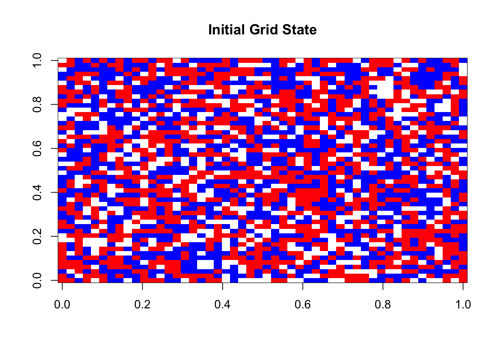
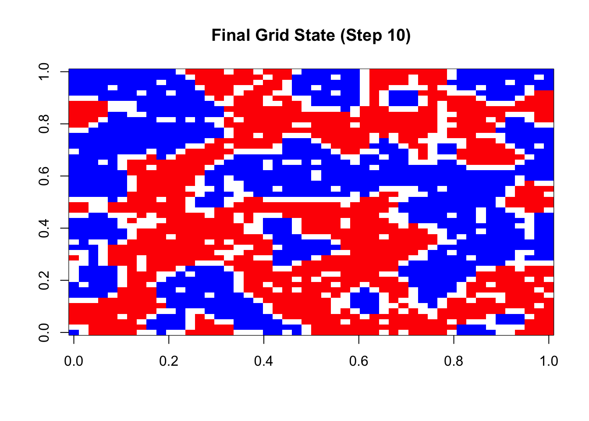
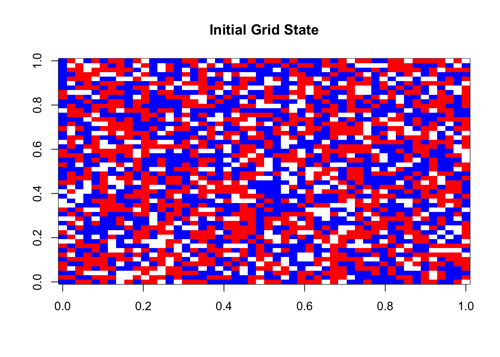
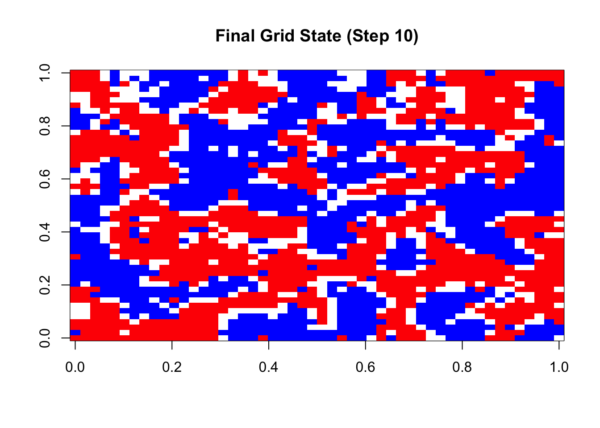

needs(tidyverse, furrr)
#' Create initial grid for Schelling model
#'
#' @param dimensions Size of square grid
#' @param share_empty Proportion of empty cells
#' @param share_type1 Proportion of type 1 agents
#' @param share_type2 Proportion of type 2 agents
#' @return Matrix representing initial grid state
create_grid <- function(dimensions = 25,
share_empty = 0.2,
share_type1 = 0.4,
share_type2 = 0.4) {
if(abs(share_empty + share_type1 + share_type2 - 1) > 0.001) {
stop("Proportions must sum to 1")
}
# Create grid with proper proportions
total_cells <- dimensions * dimensions
grid_values <- c(
rep(0, floor(total_cells * share_empty)), # Empty cells
rep(1, floor(total_cells * share_type1)), # Type 1
rep(2, floor(total_cells * share_type2)) # Type 2
)
# Fill any remaining cells due to rounding
if(length(grid_values) < total_cells) {
grid_values <- c(grid_values,
rep(0, total_cells - length(grid_values)))
}
# Randomly arrange and convert to matrix
matrix(
sample(grid_values),
nrow = dimensions,
ncol = dimensions
)
}
initial_grid <- create_grid()Chapter 18: Agent-based Modeling
Schelling model
Let’s build a Schelling model together. The inspiration for parts of the code come from this blog post – I tried to write the code in a cleaner fashion though.
The steps we will program today are the follwoing:
- Initialization:
- Create field with n x n dimensions
- Create agents with certain attributes and put them on the field
- Determine happiness criterion
- Simulation
- Determine each agent’s happiness level
- Move unhappy agents to empty field
- Repeat until time is up or all agents are happy
Initialization
The create_grid function is responsible for creating the initial state of the Schelling model’s world. It constructs a square grid populated with agents of two different types and empty spaces, with careful attention to maintaining specified proportions. Here’s how it works:
Parameter Validation:
- First checks if the three share parameters (empty, type1, type2) sum to 1
- Uses a small tolerance (0.001) to account for floating-point arithmetic
- Throws an error if proportions are invalid
Grid Population Calculation:
- Calculates total number of cells as dimensions squared
- Uses
floor()when computing cell counts to handle non-integer results - Creates three groups of values:
- 0s representing empty cells
- 1s representing type 1 agents
- 2s representing type 2 agents
Handling Rounding Issues:
Due to floor() operations, there might be a few unallocated cells. These remaining cells are filled with empty spaces (0s). This ensures the grid is completely filled while maintaining close to desired proportions
Grid Construction:
Uses sample() to randomly shuffle all cell values, then converts the shuffled vector into a matrix with specified dimensions. Finally, it returns a square matrix representing the initial grid state.
The default parameters (25x25 grid, 20% empty, 40% each type) are chosen to demonstrate typical segregation patterns while maintaining reasonable computational efficiency. The equal proportions of agent types (40% each) allow for clear observation of emerging segregation patterns.
running initial_grid <- create_grid() creates a 25x25 matrix where: * Approximately 125 cells (20%) are empty (0s) * Approximately 250 cells (40%) contain type 1 agents (1s) * Approximately 250 cells (40%) contain type 2 agents (2s) * Also, all values are randomly distributed throughout the grid
Note: since we will create individual functions, we prepare descriptions for each function’s parameters using the roxygen2 documentation style. Find more information here. This would also be the way to document different functions in a package (which is basically a collection of functions).
The first step is determining each agent’s happiness:. For this, we first use the get_neighbors function that identifies all valid neighboring cells for a given position in the grid. It uses the Moore neighborhood definition, meaning it considers all 8 surrounding cells (horizontally, vertically, and diagonally adjacent). The function works in several steps:
- First, it determines the grid dimensions from the input grid
- Using expand_grid, it creates all possible combinations of offsets (-1, 0, 1) for both rows and columns
- It filters out the center cell (0,0 offset) since a cell isn’t its own neighbor
- It calculates actual neighbor coordinates by adding the offsets to the input position
- It filters out any invalid coordinates that would fall outside the grid boundaries
- Finally, it extracts and returns the values from these valid neighbor positions
#' Get neighbors for a given cell
#'
#' @param grid Current grid state
#' @param row Row index
#' @param col Column index
#' @return Vector of neighbor values
get_neighbors <- function(grid, row, col) {
dimensions <- nrow(grid)
# Generate all possible neighbor coordinates
neighbor_coords <- expand_grid(
row_offset = -1:1,
col_offset = -1:1
) %>%
filter(!(row_offset == 0 & col_offset == 0)) %>% # Remove center cell
mutate(
neighbor_row = row + row_offset,
neighbor_col = col + col_offset
) %>%
filter(
neighbor_row >= 1,
neighbor_row <= dimensions,
neighbor_col >= 1,
neighbor_col <= dimensions
)
# Extract neighbor values
map2_dbl(
neighbor_coords$neighbor_row,
neighbor_coords$neighbor_col,
~grid[.x, .y]
)
}Once we have extracted the neighborhood, we can check whether the neighbors are happy. This is the case if the share of same type neighboring cells (empty ones do not count) are of the same type as the cell. Here, we use 0.4 as the satisfaction threshold; higher thresholds lead to stronger segregation.
- It first gets the agent’s type (0 for empty, 1 or 2 for different agent types)
- Empty cells are automatically considered satisfied (they can’t be dissatisfied)
- It gets all neighbors using the previously defined get_neighbors function
- If an agent has no neighbors at all, they’re considered satisfied by default
- It filters out empty cells from the neighbor list since they don’t count toward similarity
- If all neighbors are empty cells, the agent is satisfied
- It calculates the ratio of similar neighbors (same type) to total non-empty neighbors
- Finally, it compares this ratio to the threshold parameter
#' Check if agent is satisfied with their neighborhood
#'
#' @param grid Current grid state
#' @param row Row index
#' @param col Column index
#' @param threshold Minimum proportion of similar neighbors for satisfaction
#' @return Boolean indicating if agent is satisfied
is_satisfied <- function(grid, row, col, threshold = 0.4) {
agent_type <- grid[row, col]
# Empty cells are always satisfied
if(agent_type == 0) return(TRUE)
neighbors <- get_neighbors(grid, row, col)
# If no neighbors, agent is satisfied
if(length(neighbors) == 0) return(TRUE)
# Count similar non-empty neighbors
non_empty_neighbors <- neighbors[neighbors != 0]
if(length(non_empty_neighbors) == 0) return(TRUE)
similar_neighbors <- sum(non_empty_neighbors == agent_type)
similarity_ratio <- similar_neighbors / length(non_empty_neighbors)
similarity_ratio >= threshold
}Unhappy cells move to empty cells. For this, the find_empty_cells function identifies all unoccupied positions in the grid to determine “free spots.” The function:
- Uses which with arr.ind = TRUE to find the row and column indices of all cells containing 0 (empty)
- Converts the result to a tibble for easier manipulation with tidyverse functions
- Renames the columns to ‘row’ and ‘col’ for clarity
This function is used when an unsatisfied agent needs to move, providing the set of all possible destinations. The use of tibble format makes it easy to randomly sample from these positions when selecting a new location for a moving agent.
#' Find all empty cells in grid
#'
#' @param grid Current grid state
#' @return Tibble of empty cell coordinates
find_empty_cells <- function(grid) {
which(grid == 0, arr.ind = TRUE) %>%
as_tibble() %>%
rename(row = row, col = col)
}Now we can wrap this all in a function that finally moves the agents to an empty cell. The step_simulation function executes one complete time step of the Schelling model simulation. During each step:
- It iterates through every cell in the grid systematically
- For each non-empty cell, it checks if the agent is satisfied using is_satisfied
If an agent is dissatisfied:
- It finds all empty cells using
find_empty_cells - If empty cells exist, it randomly selects one as the new location
- Moves the agent to the new location by updating grid values
- Increments the move counter
Finally, it returns both the updated grid and the number of moves made.
The number of moves is crucial as it serves as a convergence metric – when no moves are made in a step, the simulation has reached a stable state. The function uses a nested loop structure for grid traversal, though future optimizations could potentially vectorize this operation.
#' Perform one step of the simulation
#'
#' @param grid Current grid state
#' @param threshold Satisfaction threshold
#' @return List containing updated grid and number of moves made
step_simulation <- function(grid, threshold = 0.4) {
dimensions <- nrow(grid)
moves <- 0
# Check each cell
for(row in 1:dimensions) {
for(col in 1:dimensions) {
# Skip empty cells
if(grid[row, col] == 0) next
# Check if agent is satisfied
if(!is_satisfied(grid, row, col, threshold)) {
# Find empty cells
empty_cells <- find_empty_cells(grid)
if(nrow(empty_cells) > 0) {
# Choose random empty cell
new_location <- empty_cells %>%
slice_sample(n = 1)
# Move agent
grid[new_location$row, new_location$col] <- grid[row, col]
grid[row, col] <- 0
moves <- moves + 1
}
}
}
}
list(grid = grid, moves = moves)
}Finally, the run_schelling function orchestrates the entire simulation process. It manages both the execution and visualization of the Schelling model. It handles:
- Initialization:
- Creates initial grid with specified proportions of agent types
- Optionally displays the initial state using the image function
- Prepares storage for recording simulation history
- Simulation Loop:
- Repeatedly calls step_simulation until either:
- No moves occur (stable state reached)
- or maximum steps limit is reached
- Records grid state and move count at each step
- Visualization:
- If plotting is enabled, shows initial and final states
- Uses white for empty cells, blue for type 1 agents, red for type 2 agents
- Includes step count in final plot title
- Results Collection: returns a comprehensive list containing:
- Final grid configuration
- Total number of steps taken
- Complete history of all states and moves
The function parameters allow the fine-tuning of the simulation, including grid size, population ratios, satisfaction threshold, and maximum steps. Hence, the function is highly flexible for exploring different scenarios and testing hypotheses about segregation patterns.
#' Run complete simulation
#'
#' @param dimensions Grid size
#' @param share_empty Proportion of empty cells
#' @param share_type1 Proportion of type 1 agents
#' @param share_type2 Proportion of type 2 agents
#' @param threshold Satisfaction threshold
#' @param max_steps Maximum number of steps
#' @param plot Whether to create plots
#' @return List containing simulation results
run_schelling <- function(dimensions = 25,
share_empty = 0.2,
share_type1 = 0.4,
share_type2 = 0.4,
threshold = 0.4,
max_steps = 100,
plot = TRUE) {
# Initialize
grid <- create_grid(dimensions, share_empty, share_type1, share_type2)
if(plot) {
cat("Initial state:\n")
image(
grid,
col = c("white", "blue", "red"),
main = "Initial Grid State",
xlab = "",
ylab = ""
)
}
# Storage for results
results <- vector("list", max_steps)
# Run simulation
step <- 1
repeat {
step_result <- step_simulation(grid, threshold)
grid <- step_result$grid
results[[step]] <- list(
grid = grid,
moves = step_result$moves
)
# Check stopping conditions
if(step_result$moves == 0 || step == max_steps) break
step <- step + 1
}
if(plot) {
cat(sprintf("\nFinal state after %d steps:\n", step))
image(
grid,
col = c("white", "blue", "red"),
main = sprintf("Final Grid State (Step %d)", step),
xlab = "",
ylab = ""
)
}
# Return results
list(
final_grid = grid,
steps = step,
history = results[1:step]
)
}
#run_schelling(dimensions = 25,
# share_empty = 0.2,
# share_type1 = 0.4,
# share_type2 = 0.4,
# threshold = 0.8,
# max_steps = 100,
# plot = TRUE)In practice, you might want to use a vectorized version, which is a bit opaquely coded. Find the code here:
#' Create initial grid for Schelling model
#' @description Creates initial grid with vectorized operations
create_grid <- function(dimensions = 25,
share_empty = 0.2,
share_type1 = 0.4,
share_type2 = 0.4) {
if(abs(share_empty + share_type1 + share_type2 - 1) > 0.001) {
stop("Proportions must sum to 1")
}
total_cells <- dimensions * dimensions
grid <- sample(
c(0, 1, 2),
size = total_cells,
replace = TRUE,
prob = c(share_empty, share_type1, share_type2)
)
matrix(grid, nrow = dimensions)
}
#' Get all neighbor values for entire grid at once
#' @description Vectorized neighbor computation for all cells
get_all_neighbors <- function(grid) {
dimensions <- nrow(grid)
# Create shifted versions of the grid for all 8 directions
shifts <- list(
up = rbind(grid[-1, ], NA),
down = rbind(NA, grid[-dimensions, ]),
left = cbind(grid[, -1], NA),
right = cbind(NA, grid[, -dimensions]),
up_left = rbind(cbind(grid[-1, -1], NA), NA),
up_right = rbind(cbind(NA, grid[-1, -dimensions]), NA),
down_left = rbind(NA, cbind(grid[-dimensions, -1], NA)),
down_right = rbind(NA, cbind(NA, grid[-dimensions, -dimensions]))
)
# Stack all shifts into a 3D array
neighbor_array <- array(
unlist(shifts),
dim = c(dimensions, dimensions, 8)
)
# Return array of all neighbors for each cell
neighbor_array
}
#' Calculate satisfaction for all cells simultaneously
#' @description Vectorized satisfaction calculation
calculate_satisfaction <- function(grid, neighbors_array, threshold = 0.4) {
dimensions <- nrow(grid)
# Create grid of agent types repeated for each neighbor
agent_types <- array(
rep(grid, 8),
dim = c(dimensions, dimensions, 8)
)
# Calculate similarity with each neighbor
similar_neighbors <- neighbors_array == agent_types
# Count non-empty neighbors and similar neighbors
non_empty_neighbors <- !is.na(neighbors_array) & neighbors_array != 0
total_non_empty <- apply(non_empty_neighbors, c(1,2), sum)
total_similar <- apply(similar_neighbors & non_empty_neighbors, c(1,2), sum)
# Calculate satisfaction ratio
satisfaction_ratio <- total_similar / pmax(total_non_empty, 1)
# Empty cells are always satisfied
satisfaction <- (grid == 0) | (satisfaction_ratio >= threshold)
satisfaction
}
#' Run vectorized Schelling simulation
#' @description Main simulation function using vectorized operations
run_vectorized_schelling <- function(dimensions = 25,
share_empty = 0.2,
share_type1 = 0.4,
share_type2 = 0.4,
threshold = 0.4,
max_steps = 100,
plot = TRUE) {
# Initialize
grid <- create_grid(dimensions, share_empty, share_type1, share_type2)
if(plot) {
cat("Initial state:\n")
image(
grid,
col = c("white", "blue", "red"),
main = "Initial Grid State",
xlab = "",
ylab = ""
)
}
# Storage for results
results <- vector("list", max_steps)
# Run simulation
step <- 1
repeat {
# Get all neighbors at once
neighbors_array <- get_all_neighbors(grid)
# Calculate satisfaction for all cells
satisfied <- calculate_satisfaction(grid, neighbors_array, threshold)
# Find unsatisfied agents and empty cells
unsatisfied_positions <- which(!satisfied & grid != 0, arr.ind = TRUE)
empty_positions <- which(grid == 0, arr.ind = TRUE)
# If no unsatisfied agents or no empty cells, we're done
if(nrow(unsatisfied_positions) == 0 || nrow(empty_positions) == 0) {
moves <- 0
} else {
# Randomly select which agents to move and where
n_moves <- min(nrow(unsatisfied_positions), nrow(empty_positions))
# Select random unsatisfied agents to move
move_from <- unsatisfied_positions[sample(nrow(unsatisfied_positions), n_moves), , drop = FALSE]
# Select random empty positions to move to
move_to <- empty_positions[sample(nrow(empty_positions), n_moves), , drop = FALSE]
# Perform all moves at once
for(i in seq_len(n_moves)) {
# Store agent type
agent_type <- grid[move_from[i, "row"], move_from[i, "col"]]
# Move agent
grid[move_from[i, "row"], move_from[i, "col"]] <- 0
grid[move_to[i, "row"], move_to[i, "col"]] <- agent_type
}
moves <- n_moves
}
# Store results
results[[step]] <- list(
grid = grid,
moves = moves
)
# Check stopping conditions
if(moves == 0 || step == max_steps) break
step <- step + 1
}
if(plot) {
cat(sprintf("\nFinal state after %d steps:\n", step))
image(
grid,
col = c("white", "blue", "red"),
main = sprintf("Final Grid State (Step %d)", step),
xlab = "",
ylab = ""
)
}
list(
final_grid = grid,
steps = step,
history = results[1:step]
)
}Let’s compare performance. First the non-vectorized, then the vectorized version:
# Non-vectorized
system.time({
result <- run_schelling(
dimensions = 50,
threshold = 0.6,
max_steps = 10
)
})Initial state:
Final state after 10 steps:
user system elapsed
29.133 0.076 29.299 # Vectorized
system.time({
result <- run_vectorized_schelling(
dimensions = 50,
threshold = 0.6,
max_steps = 10
)
})Initial state:
Final state after 10 steps:
user system elapsed
0.111 0.005 0.117 44s vs. 0.2s, quite impressive. I must say that generative AI is fairly good at speeding up your code, so here it might be something you might consider.
Now that we have this sped up function, we can use different parameters, run different simulations, and you can look at the results. furrr gives us the option to use the future_map() funtion. This is basically purrr::map() running in parallel.
input_table <- expand_grid(
max_steps = 50,
dimensions = c(25, 50),
share_type1 = seq(0.2, 0.4, by = 0.1),
threshold = seq(0.2, 0.8, by = 0.2)
) %>%
mutate(share_type2 = share_type1,
share_empty = 1 - (share_type1 + share_type2)) %>%
filter(share_empty > 0.1)
plan(multisession, workers = 8)
results <- future_pmap(input_table,
run_vectorized_schelling,
.options = furrr_options(seed = 123))More complicated model: replicating Baldassarri and Bearman (2007)
In a next step, we will replicate Baldassarri and Bearman (2007). We will do this according to the ODD protocol, which is the preferred way to report these models.
###In the first step, researchers need to justify the purpose the model. This encompasses not only stating the research question, but also what general purpose the model is supposed to serve for. Those high-level purposes are not necessarily perfectly distinct and a model might serve for more than one. However, when you construct a model, you should clearly think of one purpose and garner it towards this purpose.
Some of the most important high-level purposes of ABMs are prediction (of an outcome), explanation (of phenomena through tangible causal chains consisting of mechanisms), description (of the components that matter in a particular case), theoretical exposition (hypothesis testing), illustration (of an idea or theory), analogy (to illustrate a way you could think about a phenomenon – such as opinion spreading through models from epidemiology), and social learning (modeling the evolution of people’s (shared) understandings) (illustrations and more can be found in Edmonds et al. 2019).
The “patterns” part of the first component refers to the (real-world) phenomenon you strive to explain. It can be seen as a set of criteria that helps you in assessing whether the model is realistic enough. The patterns can be derived from observations on either the micro- or macro level in the real world or inductively from the literature. For instance, the pattern we wanted to observe in the diffusion model was the S-shaped curve we know from real-world diffusion processes, or in the Schelling model clearly segregated neighborhoods.
A clearly formulated purpose and pattern part helps the reader with deciding independently whether they deem the model a success or not. Moreover, it helps the researcher to decide what is relevant for their model and what not – and, hence, what they need to include. It is advisable to clearly link the model’s outcomes/results to the question. This will also inform your decision on what to report and how. Relevant terms need to be sufficiently specified. Alternative use-cases of the model need to be included (e.g., diffusion models can be useful for modeling epidemics as well as rumors or trends). Do not get into the specifics of your model already, this will come in the later parts of the ODD protocol. And, finally, formulate patterns in such a way that they are testable: how can you reliably (statistically) determine whether they are present or not? Also, it needs to be motivated why you assume them to be of relevance for your model. This usually stems from empirical observation.
Purpose and pattern of Baldassarri and Bearman (2007):
They set out to determine the mechanisms behind two empirical paradoxes:
“The first is the simultaneous presence and absence of political polarization—the fact that attitudes rarely polarize, even though people believe polarization to be common. The second is the simultaneous presence and absence of social polarization—the fact that while individuals experience attitude homogeneity in their interpersonal networks, these networks retain attitude heterogeneity overall.” (p. 784)
Therefore, the patterns they are searching for are homogeneous individual discussion networks, whereas the social structures themselves remain heterogeneous. Moreover, they claim that there are topics (so-called “takeoff issues”) that garner the lion share of attention, leading to no polarization with regard to other topics.
Entities, state variables, and scales
The entities of the model are the objects that in their entirety comprise the model. Objects are usually of different kinds and multitude. Typically there are the following kinds of entities in there: spatial units such as grid cells or, more abstractly speaking, actors’ position in a network; the actors (agents) themselves; agent collectives/groups; the environment, such as time trackers, observers (of the distribution of agents). The inclusion of entities should be theoretically motivated and needs to be justified.
State variables are the attributes of the different entities. Those can be used to distinguish entities of the same kind (e.g., color in the Schelling model) or track changes over time (e.g., position of the agent in the Schelling model). When including state variables, one also has to descriebe them in further detail: what are they representing; are they dynamic; what’s the values they can take on and what type are they of. It usually makes sense to perform those descriptions in a table. Note the difference between state variables and parameters: state variables capture the entity’s state over time or are used to distinguish entities. Therefore, agents’ gender is a state variable, the happiness threshold in the Schelling model is a parameter. If a value is drawn from, say, a normal distribution as the opinion value in Baldassarri and Bearman (2007), the agent’s value is captured as a state variable. In this case, the parameters would be the characteristics of the normal distribution (mean and standard deviation). State variables should be as “low-level” as possible. If a value is derived from other state variables, it is no state variable in itself. Also, do not mention why those variables might change.
When thinking about which state variables to include, ask yourself: “if you want (as modelers often do) to stop the model and save it in its current state, so it can be re-started in exactly the same state, what is the minimum information you must save? Those essential characteristics of each kind of entity are its state variables.” (Grimm et al. 2020:S1: 9)
Scales are referring to the extent of the model: its spatial and temporal scale. What does one time step mean? What does one square grid cell refer to? Also, justify your decision for a certain decision. This must only be included if it applies. However, you should give an abstract discussion (e.g., in the Schelling model cells represent households and one step is one move, so roughly a couple of months). This makes the model more tangible.
Note that in this part you should not discuss the model processes and behaviors. Stick to the entities, state variables, and scales.
Entities, state variables, and scales in Baldassarri and Bearman (2007):
The entities are the 100 individual actors. Their state variables are issue interest/opinion towards issues and the (perceived) distance to other actors’ \(\lambda\). Scale-wise, the simulations will run for 500 steps and actors can communicate to a certain number of actors (up to ~12) during each time step.
#' Initialize actors for opinion dynamics model
#'
#' @description
#' Creates initial state for agents with opinions/interests on multiple issues
#' and calculates initial perceived distances between all actors.
#'
#' @param n_actors Number of actors (default: 100)
#' @param n_issues Number of issues (default: 4)
#' @param mean_interest Mean of normal distribution for interests (default: 0)
#' @param sd_interest SD of normal distribution for interests (default: 33.3)
#' @param interest_range Range for clamping interest values (default: c(-100, 100))
#'
#' @return List containing:
#' - actors: List of actor opinion vectors
#' - distances: Matrix of perceived distances between actors
initialize_opinion_model <- function(n_actors = 100,
n_issues = 4,
mean_interest = 0,
sd_interest = 33.3,
interest_range = c(-100, 100)) {
# Generate matrix of all actor opinions/interests
opinions <- matrix(
rnorm(n_actors * n_issues, mean = mean_interest, sd = sd_interest),
nrow = n_actors,
ncol = n_issues
)
# Clamp values to specified range
opinions[opinions < interest_range[1]] <- interest_range[1]
opinions[opinions > interest_range[2]] <- interest_range[2]
# Convert to list of vectors (one per actor)
actors <- split(opinions, row(opinions))
# Calculate initial perceived distances (mean Euclidean distance)
distances <- matrix(0, nrow = n_actors, ncol = n_actors)
for(i in 1:(n_actors-1)) {
for(j in (i+1):n_actors) {
# Calculate Euclidean distance between actors i and j
dist <- sqrt(sum((opinions[i,] - opinions[j,])^2))
distances[i,j] <- dist
distances[j,i] <- dist # Matrix is symmetric
}
}
# Normalize distances by dividing by maximum distance
max_dist <- max(distances)
distances <- distances / max_dist
# Return both actors and distances
list(
actors = actors,
distances = distances,
metadata = list(
n_actors = n_actors,
n_issues = n_issues,
mean_interest = mean_interest,
sd_interest = sd_interest,
interest_range = interest_range
)
)
}
initialize_opinion_model()$actors
$actors$`1`
[1] -47.78241 -16.07918 -54.90588 24.72243
$actors$`2`
[1] -9.8994479 0.9699759 -13.6844381 2.4397496
$actors$`3`
[1] 14.2911348 -7.7544252 18.3222341 0.7103008
$actors$`4`
[1] 11.383545 34.302980 79.980278 -1.613839
$actors$`5`
[1] -21.94954 73.48545 19.31786 -13.62852
$actors$`6`
[1] -26.20321 -16.62756 31.10618 -54.93206
$actors$`7`
[1] -17.251531 -7.501654 43.567470 -38.742238
$actors$`8`
[1] 15.851509 -11.409469 -1.792933 -1.403554
$actors$`9`
[1] 39.07686 70.93175 -46.78234 17.65638
$actors$`10`
[1] -24.922073 -22.018540 -6.425285 -20.815158
$actors$`11`
[1] 14.92953 -20.90814 32.47565 84.80430
$actors$`12`
[1] 9.900771 29.399312 3.041993 -25.406945
$actors$`13`
[1] -10.83406 38.72667 -50.45874 -19.35418
$actors$`14`
[1] -20.807896 25.735558 -4.527152 -35.887769
$actors$`15`
[1] -40.2249067 4.9323308 0.5313393 -10.4405051
$actors$`16`
[1] -61.258991 45.684406 72.989322 6.130106
$actors$`17`
[1] 18.062123 -9.303351 16.227693 -29.954273
$actors$`18`
[1] 32.900647 -7.381953 -16.597923 -13.829962
$actors$`19`
[1] 7.062194 -22.298902 -85.363288 1.175481
$actors$`20`
[1] 0.662017 -28.401646 -6.943479 -22.916927
$actors$`21`
[1] -23.29117 -53.45703 30.96078 18.03866
$actors$`22`
[1] 56.33392 -15.03626 -45.15741 -20.51384
$actors$`23`
[1] 7.8714192 10.1910288 -3.9169401 -0.4088678
$actors$`24`
[1] -6.299750 -53.041820 7.641901 5.755326
$actors$`25`
[1] 8.760317 13.994436 17.853894 -32.977795
$actors$`26`
[1] -6.447337 -32.183063 30.385953 31.315728
$actors$`27`
[1] -4.692661 -31.241040 68.327041 -26.096568
$actors$`28`
[1] -14.731325 -9.084582 -15.954145 12.771219
$actors$`29`
[1] 19.69991 7.36192 -29.20357 -14.14720
$actors$`30`
[1] -0.8155233 -23.1325096 -24.0471752 28.5935501
$actors$`31`
[1] 11.33464 -39.98289 -34.51897 -14.66074
$actors$`32`
[1] -13.15851 -38.11791 29.43096 -3.66034
$actors$`33`
[1] 19.893836 3.436728 17.313832 -8.395555
$actors$`34`
[1] -15.88265 9.95463 -41.28493 26.52878
$actors$`35`
[1] 13.15622 29.57214 51.88774 -23.83870
$actors$`36`
[1] -20.26724 26.76553 -42.62383 -2.07263
$actors$`37`
[1] 27.14701 41.35716 36.74191 64.21879
$actors$`38`
[1] 23.756346 39.266831 -45.255083 -7.227654
$actors$`39`
[1] 4.212443 -13.527523 -2.287950 -23.977908
$actors$`40`
[1] 14.50595 -26.00078 13.63815 -72.20176
$actors$`41`
[1] 61.18073 17.59414 -22.82792 -14.54290
$actors$`42`
[1] -32.43609 -37.13858 38.55572 -20.75417
$actors$`43`
[1] -26.682913 61.557387 -5.119491 24.871850
$actors$`44`
[1] -19.454962 2.461664 19.298989 -15.581442
$actors$`45`
[1] 28.18633 19.96195 36.38974 -45.10287
$actors$`46`
[1] 66.36272 -55.34765 -20.07691 35.49613
$actors$`47`
[1] 14.67825 -42.61863 -31.13609 -27.93690
$actors$`48`
[1] -25.81927 -37.57526 49.02936 34.34070
$actors$`49`
[1] -5.712639 -17.514243 -20.434123 -9.633884
$actors$`50`
[1] -5.909986 21.652745 28.056506 -22.514796
$actors$`51`
[1] 67.86241 38.57470 -61.88503 -35.98291
$actors$`52`
[1] -21.542933 -2.656697 -19.133147 -10.693229
$actors$`53`
[1] -26.509008 3.612396 29.638657 -60.011170
$actors$`54`
[1] -6.207152 -32.363384 -34.701872 20.428058
$actors$`55`
[1] -19.923805 9.357064 64.157291 -42.943223
$actors$`56`
[1] -19.51131 12.53382 32.06413 30.47782
$actors$`57`
[1] -16.51474 -18.07990 -30.19354 46.54669
$actors$`58`
[1] -9.378545 62.941175 -12.006345 -29.657564
$actors$`59`
[1] -21.08758 -33.37326 -44.06784 -23.77068
$actors$`60`
[1] -31.061974 26.092173 -1.213055 43.616084
$actors$`61`
[1] -23.328907 -52.359528 17.045547 2.742289
$actors$`62`
[1] 4.317942 -8.518229 14.410961 47.906712
$actors$`63`
[1] 18.85494 -30.15038 -54.39876 -83.54263
$actors$`64`
[1] -35.228011 -9.151555 11.195444 17.100215
$actors$`65`
[1] 4.731554 43.381492 43.041891 11.861865
$actors$`66`
[1] 39.413262 -3.381687 -1.041678 12.530081
$actors$`67`
[1] 49.07750 12.81180 -13.36635 12.92691
$actors$`68`
[1] -6.733806 6.535223 -11.636968 14.173392
$actors$`69`
[1] 8.433044 -38.750004 13.099922 -38.241972
$actors$`70`
[1] -63.02068 46.40526 30.70880 -22.17822
$actors$`71`
[1] -30.50902 19.84881 40.61458 18.33654
$actors$`72`
[1] -18.407336 -26.272489 4.267537 2.422030
$actors$`73`
[1] 26.845571 -9.073656 -38.286544 -29.274290
$actors$`74`
[1] 25.448421 -9.521016 -7.679993 -11.862276
$actors$`75`
[1] 1.2122777 57.6836631 -0.4730031 45.6425984
$actors$`76`
[1] -5.908228 22.775604 9.222655 44.054264
$actors$`77`
[1] 23.20778 -27.68686 -11.48499 -28.75448
$actors$`78`
[1] -31.4535447 21.8626733 -43.5928021 0.5057697
$actors$`79`
[1] 21.988467 -70.027918 7.320523 -36.326801
$actors$`80`
[1] 26.9777509 59.5263546 0.4851745 -3.7644070
$actors$`81`
[1] -55.832826 10.186358 -23.565551 4.075607
$actors$`82`
[1] 51.242843 -37.629494 -28.990838 -7.267877
$actors$`83`
[1] -13.2022897 14.2991606 59.8073512 -0.8709906
$actors$`84`
[1] -49.425474 -32.900176 56.012112 8.401397
$actors$`85`
[1] -38.82846 -61.12693 11.21543 -29.08274
$actors$`86`
[1] -5.683417 21.225487 -12.637269 -44.567848
$actors$`87`
[1] -17.52265 70.17078 56.62760 -23.99241
$actors$`88`
[1] -30.12793 32.06568 -14.37688 18.72302
$actors$`89`
[1] 12.03681976 31.53904716 0.04288142 -8.47407874
$actors$`90`
[1] -3.620348 -17.075057 78.314117 52.853674
$actors$`91`
[1] 15.565463 -1.954728 86.010966 -25.177103
$actors$`92`
[1] -21.451643 8.613964 -34.559062 -17.545292
$actors$`93`
[1] 36.93936 18.38583 -18.68092 26.78555
$actors$`94`
[1] 32.431498 -47.925716 -25.516125 4.085829
$actors$`95`
[1] 26.390523 -4.196555 -28.861886 67.356828
$actors$`96`
[1] 26.542273 0.226431 -17.662799 -28.387451
$actors$`97`
[1] -16.79859 -47.77359 -47.59981 -52.19936
$actors$`98`
[1] 73.35586 -63.96403 -39.63975 24.63706
$actors$`99`
[1] 39.883351 -40.526836 -29.301783 2.209133
$actors$`100`
[1] 1.0466057 -0.9599343 3.1483534 -9.4508354
$distances
[,1] [,2] [,3] [,4] [,5] [,6] [,7]
[1,] 0.0000000 0.30138890 0.47793484 0.7598604 0.6024520 0.5736936 0.5841287
[2,] 0.3013889 0.00000000 0.19777831 0.4897169 0.3954444 0.3688399 0.3436897
[3,] 0.4779348 0.19777831 0.00000000 0.3596568 0.4336860 0.3395695 0.2717789
[4,] 0.7598604 0.48971694 0.35965677 0.0000000 0.3871451 0.4625873 0.3494525
[5,] 0.6024520 0.39544444 0.43368599 0.3871451 0.0000000 0.4808829 0.4250498
[6,] 0.5736936 0.36883992 0.33956954 0.4625873 0.4808829 0.0000000 0.1159890
[7,] 0.5841287 0.34368965 0.27177890 0.3494525 0.4250498 0.1159890 0.0000000
[8,] 0.4188717 0.15009084 0.09920523 0.4513931 0.4624117 0.3647436 0.3251001
[9,] 0.5939768 0.44685076 0.51232575 0.6554759 0.4585773 0.7340755 0.6919193
[10,] 0.3397020 0.17667970 0.25543938 0.5343066 0.4775188 0.2455616 0.2675443
[11,] 0.5933937 0.48151845 0.41528716 0.5442033 0.6828849 0.7013916 0.6201291
[12,] 0.5108527 0.22857061 0.23158005 0.3883762 0.2790470 0.3430739 0.3012949
[13,] 0.3829566 0.27453222 0.42845432 0.6428726 0.3799781 0.5097717 0.5137580
[14,] 0.4485933 0.23007034 0.31246452 0.4672631 0.2783717 0.2829419 0.2822221
[15,] 0.3337311 0.17375055 0.28771720 0.4792596 0.3535582 0.2877956 0.2779580
[16,] 0.6924320 0.53079039 0.51794136 0.3574254 0.3598101 0.4953816 0.4208014
[17,] 0.5366019 0.25609928 0.14922265 0.3972750 0.4497095 0.2573095 0.2192342
[18,] 0.4700627 0.22444467 0.20289868 0.5200793 0.5010442 0.4180185 0.3955824
[19,] 0.3238831 0.37182293 0.50511069 0.8414703 0.7006526 0.6430473 0.6638679
[20,] 0.4046384 0.19624520 0.20468167 0.5284558 0.5198787 0.2778595 0.2871407
[21,] 0.4669850 0.35295308 0.30290854 0.5204374 0.6321965 0.3936420 0.3579453
[22,] 0.5483803 0.37775238 0.38202896 0.6886135 0.6487301 0.5656997 0.5628325
[23,] 0.4032139 0.10808520 0.14106470 0.4205076 0.3604832 0.3752682 0.3288400
[24,] 0.4128671 0.28046999 0.24608815 0.5535578 0.6231843 0.3714204 0.3557759
[25,] 0.5429073 0.25316070 0.19482793 0.3491440 0.3354789 0.2554775 0.2060606
[26,] 0.4637849 0.30006195 0.22102706 0.4380012 0.5602063 0.4323908 0.3667795
[27,] 0.6781737 0.44644933 0.30933761 0.3500372 0.5658457 0.2588717 0.1860413
[28,] 0.2547330 0.07398802 0.22390808 0.5266650 0.4517645 0.4022932 0.3791247
[29,] 0.4104979 0.18218626 0.25179894 0.5460634 0.4427171 0.4300217 0.4164381
[30,] 0.2732263 0.18357352 0.26524475 0.5930107 0.5580576 0.4979651 0.4720574
[31,] 0.3738198 0.25713862 0.30726327 0.6598785 0.6253409 0.4273128 0.4450136
[32,] 0.4716276 0.28205924 0.20520539 0.4412739 0.5431084 0.2749465 0.2350260
[33,] 0.5110086 0.21372530 0.07464779 0.3402578 0.3936259 0.3363263 0.2683815
[34,] 0.2089092 0.18380909 0.35509643 0.6244360 0.4655841 0.5421530 0.5220714
[35,] 0.6731184 0.38321446 0.26899596 0.1741058 0.3165449 0.3431058 0.2449553
[36,] 0.2831634 0.19435425 0.37614246 0.6105002 0.3776119 0.4848413 0.4802451
[37,] 0.6611749 0.46570228 0.40122442 0.3880744 0.4766034 0.6880348 0.5895658
[38,] 0.4640054 0.29233811 0.38519675 0.6067433 0.4159846 0.5638795 0.5434776
[39,] 0.4264268 0.16927849 0.16456741 0.4717403 0.4522425 0.2639627 0.2554753
[40,] 0.6469781 0.42070055 0.36243757 0.5493841 0.5833176 0.2332343 0.2792293
[41,] 0.6006904 0.36338486 0.33230042 0.5591094 0.5230633 0.5560272 0.5222609
[42,] 0.5157185 0.34796280 0.30121446 0.4592759 0.5438390 0.1974535 0.1837470
[43,] 0.4553486 0.32389555 0.42002199 0.4845280 0.2279952 0.5652577 0.5110504
[44,] 0.4378606 0.18678495 0.18699191 0.3678648 0.3421650 0.2204368 0.1687583
[45,] 0.6853957 0.39037168 0.28007817 0.3148423 0.3927824 0.3200273 0.2596619
[46,] 0.6068791 0.48418990 0.42125596 0.7210978 0.8105319 0.6951937 0.6606473
[47,] 0.4289544 0.29398964 0.32222402 0.6628354 0.6379869 0.4012196 0.4291273
[48,] 0.5236812 0.39364877 0.32542883 0.4515144 0.5998348 0.4496792 0.3834822
[49,] 0.3096927 0.11292479 0.22078560 0.5513717 0.4846580 0.3446796 0.3462860
[50,] 0.5335753 0.25506745 0.21017386 0.2884494 0.2679334 0.2608435 0.1853113
[51,] 0.6822445 0.51071815 0.54442116 0.7535586 0.6159397 0.6958165 0.6890121
[52,] 0.2807421 0.09015376 0.25661947 0.5349836 0.4107822 0.3298794 0.3320503
[53,] 0.5927377 0.37465518 0.36044869 0.4390575 0.4072715 0.1006905 0.1407784
[54,] 0.2367754 0.20923662 0.31287538 0.6526958 0.5997673 0.4968484 0.4900416
[55,] 0.6836548 0.43819928 0.35595225 0.2871985 0.4022808 0.2125690 0.1302976
[56,] 0.4620029 0.26819040 0.24677941 0.3318485 0.3674454 0.4355789 0.3513782
[57,] 0.2188999 0.24656671 0.35726515 0.6453493 0.5792648 0.5725355 0.5450901
[58,] 0.5384481 0.33599435 0.41401918 0.4931491 0.1868559 0.4594105 0.4356912
[59,] 0.2839463 0.25983778 0.38502060 0.7059172 0.5999673 0.4006154 0.4460155
[60,] 0.3503091 0.26051588 0.35448776 0.4933356 0.3736570 0.5403424 0.4838617
[61,] 0.4188644 0.30320078 0.28107240 0.5422733 0.6109072 0.3337571 0.3219037
[62,] 0.4335272 0.27006586 0.23295506 0.4472356 0.5099153 0.5239540 0.4521090
[63,] 0.6155925 0.50122568 0.54682911 0.8193136 0.7255647 0.4894614 0.5575634
[64,] 0.3275936 0.19118004 0.25346364 0.4601853 0.4308869 0.3640744 0.3225744
[65,] 0.6097767 0.35102153 0.28234871 0.1968385 0.2560640 0.4606741 0.3612314
[66,] 0.5004950 0.25065235 0.16426552 0.4558335 0.4995318 0.4828586 0.4263278
[67,] 0.5289994 0.29388170 0.25405490 0.5003426 0.4931580 0.5512000 0.4983852
[68,] 0.3111588 0.06508246 0.19989462 0.4750394 0.3863773 0.4173059 0.3775922
[69,] 0.5329745 0.31508986 0.24253946 0.5084323 0.5727947 0.2304060 0.2437343
[70,] 0.5626285 0.41577452 0.47125652 0.4445818 0.2464912 0.3850753 0.3549922
[71,] 0.4991002 0.30371397 0.28783055 0.3010070 0.3201694 0.3971023 0.3115544
[72,] 0.3391455 0.16227217 0.19326797 0.4885811 0.4919529 0.3105524 0.2884751
[73,] 0.4517462 0.26632436 0.31423676 0.6251627 0.5436582 0.4396538 0.4498576
[74,] 0.4559372 0.19252110 0.14925903 0.4790567 0.4781112 0.3752081 0.3462626
[75,] 0.5102964 0.35304435 0.39761552 0.4655277 0.3296315 0.6346049 0.5623062
[76,] 0.4236744 0.25229116 0.27654275 0.4174722 0.3807316 0.5325012 0.4586148
[77,] 0.4793415 0.25896495 0.22745135 0.5505390 0.5582179 0.3424564 0.3462201
[78,] 0.2367914 0.20415316 0.39697097 0.6323800 0.4001530 0.4851738 0.4861021
[79,] 0.5968210 0.43051512 0.35465079 0.6363464 0.7328432 0.3754605 0.3959697
[80,] 0.5930712 0.34127134 0.34119634 0.4084809 0.2653918 0.5312324 0.4697998
[81,] 0.2238453 0.23057050 0.40281811 0.6059912 0.4114129 0.4322926 0.4342650
[82,] 0.5264577 0.35876777 0.32500392 0.6576109 0.6819597 0.5342561 0.5240129
[83,] 0.6074995 0.36017757 0.26210088 0.1808569 0.3530687 0.3359284 0.2252092
[84,] 0.5456739 0.41964543 0.37809932 0.4537548 0.5675180 0.3548298 0.3065751
[85,] 0.4660371 0.38220580 0.39124599 0.6295658 0.6583178 0.2724000 0.3221789
[86,] 0.4752709 0.24723461 0.31366260 0.5021362 0.3394344 0.2995891 0.3101186
[87,] 0.7325551 0.49291669 0.46067517 0.2708991 0.1882554 0.4620792 0.3856634
[88,] 0.3158989 0.19500907 0.33869385 0.5058065 0.3030338 0.4783914 0.4408711
[89,] 0.4804929 0.19978845 0.21348269 0.3863808 0.2770059 0.3999454 0.3468086
[90,] 0.6889273 0.51320047 0.39470023 0.3676163 0.6170487 0.5766669 0.4782554
[91,] 0.7843574 0.51294158 0.34995509 0.2110909 0.5201401 0.3684188 0.2676722
[92,] 0.2848776 0.15423854 0.32907796 0.5916282 0.4062955 0.3841047 0.3977625
[93,] 0.4735713 0.26860867 0.27417937 0.5149277 0.4710937 0.5769261 0.5222652
[94,] 0.4498924 0.31652870 0.29963471 0.6522498 0.6810081 0.5072180 0.4980588
[95,] 0.4341906 0.36616203 0.39766743 0.6512626 0.6321344 0.7052288 0.6531729
[96,] 0.4812282 0.23054871 0.23357762 0.5192947 0.4642253 0.3774057 0.3676063
[97,] 0.4287164 0.38978597 0.47433209 0.7814934 0.6923777 0.4100975 0.4840325
[98,] 0.6312054 0.53407776 0.49504876 0.8124278 0.8731763 0.7376192 0.7193215
[99,] 0.4677461 0.32084866 0.30436267 0.6522920 0.6709847 0.5239761 0.5125603
[100,] 0.4069890 0.11269307 0.11339063 0.4116272 0.3835144 0.2981703 0.2578034
[,8] [,9] [,10] [,11] [,12] [,13] [,14]
[1,] 0.41887168 0.5939768 0.3397020 0.5933937 0.5108527 0.3829566 0.44859331
[2,] 0.15009084 0.4468508 0.1766797 0.4815185 0.2285706 0.2745322 0.23007034
[3,] 0.09920523 0.5123258 0.2554394 0.4152872 0.2315801 0.4284543 0.31246452
[4,] 0.45139313 0.6554759 0.5343066 0.5442033 0.3883762 0.6428726 0.46726314
[5,] 0.46241168 0.4585773 0.4775188 0.6828849 0.2790470 0.3799781 0.27837172
[6,] 0.36474363 0.7340755 0.2455616 0.7013916 0.3430739 0.5097717 0.28294189
[7,] 0.32510010 0.6919193 0.2675443 0.6201291 0.3012949 0.5137580 0.28222211
[8,] 0.00000000 0.4741750 0.2243679 0.4488384 0.2308304 0.3701917 0.30134218
[9,] 0.47417502 0.0000000 0.6058117 0.6773671 0.4001627 0.3372951 0.48800624
[10,] 0.22436786 0.6058117 0.0000000 0.5746872 0.3031370 0.3674659 0.24199312
[11,] 0.44883841 0.6773671 0.5746872 0.0000000 0.6005240 0.7129999 0.67015179
[12,] 0.23083044 0.4001627 0.3031370 0.6005240 0.0000000 0.2812889 0.16132554
[13,] 0.37019166 0.3372951 0.3674659 0.7129999 0.2812889 0.0000000 0.24781692
[14,] 0.30134218 0.4880062 0.2419931 0.6701518 0.1613255 0.2478169 0.00000000
[15,] 0.28467724 0.5627656 0.1608200 0.5654150 0.2782094 0.3294351 0.18533731
[16,] 0.58659014 0.7637519 0.5474108 0.6469671 0.5097083 0.6542604 0.47665333
[17,] 0.16315474 0.5511963 0.2456898 0.5608132 0.2018546 0.4223598 0.27244904
[18,] 0.12554903 0.4324498 0.2931470 0.5411563 0.2358584 0.3475847 0.32690489
[19,] 0.40799843 0.5156018 0.4233610 0.6965079 0.5094072 0.3628562 0.50459483
[20,] 0.15286372 0.5810608 0.1273332 0.5574874 0.2860380 0.3893526 0.28739767
[21,] 0.33173439 0.7671361 0.3004983 0.4021000 0.4963015 0.6215887 0.49187661
[22,] 0.30047070 0.4603214 0.4345307 0.6610869 0.3873557 0.4148935 0.46910555
[23,] 0.11140046 0.3976632 0.2423476 0.4716245 0.1556863 0.2923268 0.23197923
[24,] 0.23401406 0.6896314 0.2264132 0.4397541 0.4318487 0.5369740 0.43843219
[25,] 0.21942338 0.5025340 0.2709260 0.5961432 0.1092544 0.3680425 0.18773183
[26,] 0.26513443 0.6607195 0.3234753 0.2826686 0.4311390 0.5725187 0.46403299
[27,] 0.38327473 0.7984004 0.3762044 0.5710074 0.4345647 0.6649493 0.45428679
[28,] 0.17632154 0.4877883 0.1857765 0.4451220 0.3007988 0.3237037 0.29463145
[29,] 0.17225068 0.3645401 0.2813608 0.5778935 0.2012330 0.2355319 0.26623459
[30,] 0.20477413 0.5065141 0.2779013 0.3912130 0.3887473 0.4004631 0.41195808
[31,] 0.21968790 0.5748552 0.2389217 0.5846810 0.3832851 0.4015971 0.39401006
[32,] 0.24231738 0.6955030 0.2140236 0.4545606 0.3807793 0.5389324 0.38284024
[33,] 0.12277013 0.4742670 0.2795680 0.4699204 0.1713116 0.3998643 0.28008494
[34,] 0.29681190 0.3982653 0.3250222 0.4987388 0.3635222 0.2654798 0.35758539
[35,] 0.34274984 0.5662004 0.4173890 0.5841497 0.2357300 0.5083003 0.32271427
[36,] 0.32031532 0.3690187 0.3067839 0.6219379 0.2866321 0.1171102 0.24522629
[37,] 0.44899129 0.4851495 0.6053809 0.3217113 0.4717767 0.6094998 0.57488930
[38,] 0.32476600 0.2075067 0.4255436 0.6494799 0.2615114 0.1781993 0.32816393
[39,] 0.12268464 0.5285802 0.1481880 0.5531905 0.2100908 0.3503361 0.23153974
[40,] 0.35579841 0.7093780 0.3269022 0.7614595 0.3534204 0.5213212 0.35927030
[41,] 0.28518016 0.3384101 0.4639136 0.6191537 0.2870106 0.3856069 0.41899068
[42,] 0.34018679 0.7693187 0.2312347 0.5630490 0.4168745 0.5724576 0.37815254
[43,] 0.42600448 0.3789648 0.4585349 0.5599750 0.3391958 0.3328867 0.34065158
[44,] 0.21975371 0.5609704 0.1747460 0.5267651 0.2124320 0.3810909 0.18785666
[45,] 0.32299264 0.5607064 0.4028391 0.6588001 0.2110756 0.4832125 0.31164223
[46,] 0.37828431 0.6407106 0.5445318 0.4572063 0.5818081 0.6588639 0.67225819
[47,] 0.24257921 0.6052028 0.2479373 0.6317179 0.3845430 0.4227339 0.39402947
[48,] 0.38144977 0.7676952 0.3838271 0.3320103 0.5149079 0.6603850 0.52355299
[49,] 0.14578280 0.5108805 0.1282922 0.5306265 0.2741443 0.3113579 0.26539191
[50,] 0.25932809 0.5198479 0.2831203 0.5650232 0.1478783 0.3877357 0.18509983
[51,] 0.48153142 0.3396659 0.6008586 0.8312906 0.4242693 0.3910027 0.51199967
[52,] 0.20767422 0.4968692 0.1227264 0.5580928 0.2512150 0.2584433 0.19577973
[53,] 0.38631339 0.6925424 0.2845841 0.7346141 0.3003864 0.4702626 0.22936426
[54,] 0.23993125 0.5460839 0.2617501 0.4625099 0.4195598 0.3999603 0.42151825
[55,] 0.42467832 0.7338957 0.3874538 0.6712796 0.3514944 0.5823017 0.34155364
[56,] 0.30387700 0.5534550 0.3515520 0.3489240 0.3442065 0.4825950 0.37028373
[57,] 0.31182841 0.5299212 0.3466820 0.3846593 0.4624818 0.4308181 0.46643285
[58,] 0.40459744 0.3684172 0.4187184 0.7251534 0.2008321 0.2243627 0.19309222
[59,] 0.30945987 0.6130049 0.1906590 0.6651465 0.4061833 0.3524844 0.34719863
[60,] 0.36126189 0.4735319 0.3889434 0.4071220 0.3871609 0.4014944 0.38614102
[61,] 0.28813070 0.7360894 0.2167881 0.4672449 0.4508978 0.5591563 0.43216017
[62,] 0.25627794 0.5311621 0.3787814 0.2127400 0.4018941 0.5091999 0.46124847
[63,] 0.47825165 0.6962111 0.4363178 0.9130260 0.4885799 0.4755005 0.46797258
[64,] 0.26905819 0.5952414 0.2163009 0.4220683 0.3535417 0.4309442 0.32213510
[65,] 0.35077002 0.4822583 0.4481692 0.4732601 0.2727297 0.4808195 0.35713906
[66,] 0.13733954 0.4207051 0.3610343 0.4098992 0.2806944 0.4238720 0.39777471
[67,] 0.21684132 0.3270221 0.4271175 0.4708451 0.2867039 0.3933256 0.41713616
[68,] 0.16474035 0.4166045 0.2356561 0.4346780 0.2445347 0.2921322 0.26897636
[69,] 0.23486416 0.6751632 0.2193632 0.6064226 0.3373233 0.4994755 0.35135859
[70,] 0.50594945 0.6566841 0.4171951 0.7147608 0.3845028 0.4660880 0.29031672
[71,] 0.35085625 0.5912209 0.3578909 0.4360855 0.3419937 0.4921904 0.34393417
[72,] 0.18301034 0.6009536 0.1286782 0.4494947 0.3291302 0.4237314 0.31396403
[73,] 0.22752438 0.4521274 0.3018742 0.6511250 0.2843358 0.3025272 0.32875403
[74,] 0.07451481 0.4580720 0.2535361 0.5092783 0.2181724 0.3579140 0.30324003
[75,] 0.40847400 0.3241795 0.5158377 0.4561809 0.3708028 0.4091648 0.43500084
[76,] 0.29784596 0.4351838 0.3974864 0.3244198 0.3456151 0.4267215 0.39718347
[77,] 0.16399506 0.5566534 0.2376019 0.5883198 0.2910923 0.4077269 0.33657555
[78,] 0.34355886 0.4219569 0.2968475 0.6251745 0.3268916 0.1632901 0.26268260
[79,] 0.33262419 0.7760888 0.3381009 0.6415355 0.4853428 0.6188065 0.50803777
[80,] 0.34593633 0.2622676 0.4735597 0.5988570 0.1969263 0.3299747 0.32221932
[81,] 0.37617374 0.5575677 0.2594452 0.6017364 0.3810113 0.3086083 0.28178903
[82,] 0.25073634 0.5460238 0.3950486 0.5664775 0.4183881 0.4882292 0.49607161
[83,] 0.35037689 0.6393090 0.3802090 0.4841194 0.3259277 0.5509067 0.35866823
[84,] 0.43476885 0.8233462 0.3559820 0.4973013 0.5127335 0.6586035 0.47847449
[85,] 0.38493825 0.8204001 0.2206775 0.6444467 0.4966747 0.5825861 0.43486140
[86,] 0.28511878 0.4693908 0.2566166 0.6969874 0.1461909 0.2357309 0.09507108
[87,] 0.52041731 0.6017441 0.5389373 0.7100925 0.3499747 0.5385736 0.36863497
[88,] 0.32527127 0.4126455 0.3256651 0.5138308 0.2990263 0.2709068 0.27252193
[89,] 0.21047459 0.3456652 0.3202795 0.5383446 0.0840328 0.2741000 0.20894824
[90,] 0.47577015 0.7828239 0.5505600 0.2839485 0.5721660 0.7604005 0.62503547
[91,] 0.44016130 0.7660409 0.4956343 0.5957333 0.4277481 0.6976074 0.49085263
[92,] 0.26911565 0.4549527 0.2014842 0.6305397 0.2587604 0.1718914 0.18837314
[93,] 0.23638215 0.2903165 0.4271062 0.4307847 0.3062230 0.3676304 0.41727613
[94,] 0.22580595 0.5856573 0.3384458 0.5028145 0.4350801 0.4943902 0.48842103
[95,] 0.36092393 0.4462318 0.5099848 0.3220402 0.5053139 0.5096438 0.57704254
[96,] 0.16876968 0.4338047 0.2776062 0.6070224 0.1904304 0.3057729 0.26889677
[97,] 0.40458844 0.7153731 0.2810304 0.7895163 0.4801005 0.4464490 0.41794045
[98,] 0.43526755 0.6715862 0.5812786 0.5712517 0.6287952 0.6752654 0.71075155
[99,] 0.22549201 0.5480677 0.3600223 0.5193840 0.4195004 0.4756175 0.48462287
[100,] 0.09834583 0.4774796 0.1760889 0.4892727 0.1704779 0.3295283 0.21242472
[,15] [,16] [,17] [,18] [,19] [,20] [,21]
[1,] 0.3337311 0.6924320 0.5366019 0.47006269 0.3238831 0.40463836 0.46698503
[2,] 0.1737505 0.5307904 0.2560993 0.22444467 0.3718229 0.19624520 0.35295308
[3,] 0.2877172 0.5179414 0.1492227 0.20289868 0.5051107 0.20468167 0.30290854
[4,] 0.4792596 0.3574254 0.3972750 0.52007928 0.8414703 0.52845580 0.52043738
[5,] 0.3535582 0.3598101 0.4497095 0.50104416 0.7006526 0.51987866 0.63219653
[6,] 0.2877956 0.4953816 0.2573095 0.41801854 0.6430473 0.27785951 0.39364200
[7,] 0.2779580 0.4208014 0.2192342 0.39558242 0.6638679 0.28714069 0.35794527
[8,] 0.2846772 0.5865901 0.1631547 0.12554903 0.4079984 0.15286372 0.33173439
[9,] 0.5627656 0.7637519 0.5511963 0.43244977 0.5156018 0.58106084 0.76713607
[10,] 0.1608200 0.5474108 0.2456898 0.29314702 0.4233610 0.12733319 0.30049828
[11,] 0.5654150 0.6469671 0.5608132 0.54115627 0.6965079 0.55748743 0.40209999
[12,] 0.2782094 0.5097083 0.2018546 0.23585836 0.5094072 0.28603800 0.49630150
[13,] 0.3294351 0.6542604 0.4223598 0.34758472 0.3628562 0.38935262 0.62158867
[14,] 0.1853373 0.4766533 0.2724490 0.32690489 0.5045948 0.28739767 0.49187661
[15,] 0.0000000 0.4203421 0.3129149 0.36665674 0.4929431 0.26336444 0.35475074
[16,] 0.4203421 0.0000000 0.5661867 0.68244370 0.8925114 0.61926573 0.55250723
[17,] 0.3129149 0.5661867 0.0000000 0.19017595 0.5179028 0.17042679 0.37835143
[18,] 0.3666567 0.6824437 0.1901759 0.00000000 0.3679209 0.19590850 0.44522861
[19,] 0.4929431 0.8925114 0.5179028 0.36792094 0.0000000 0.39711841 0.60319536
[20,] 0.2633644 0.6192657 0.1704268 0.19590850 0.3971184 0.00000000 0.31617081
[21,] 0.3547507 0.5525072 0.3783514 0.44522861 0.6031954 0.31617081 0.00000000
[22,] 0.5252662 0.8634114 0.3521874 0.18440254 0.3252626 0.33149414 0.59134306
[23,] 0.2387730 0.5271335 0.2020595 0.17193345 0.4221117 0.21828926 0.39037179
[24,] 0.3343021 0.6282132 0.2988391 0.32616075 0.4763144 0.19787890 0.15093648
[25,] 0.2760429 0.4926110 0.1218602 0.24508925 0.5517002 0.24442054 0.43982666
[26,] 0.3454978 0.5164999 0.3429848 0.38529601 0.5812676 0.31922896 0.14541646
[27,] 0.4143623 0.4855368 0.2938689 0.46525945 0.7545956 0.36375847 0.31129762
[28,] 0.1959093 0.5512632 0.3019678 0.26271775 0.3602125 0.21334122 0.31452992
[29,] 0.3226673 0.6612605 0.2451367 0.11293683 0.3202673 0.22645324 0.48613966
[30,] 0.3217220 0.6512426 0.3600793 0.27395534 0.3255040 0.26254451 0.32507111
[31,] 0.3703718 0.7548471 0.2965110 0.20699446 0.2708432 0.15791661 0.39504324
[32,] 0.2833881 0.5122816 0.2487213 0.34998956 0.5666113 0.21412094 0.13707234
[33,] 0.3006508 0.5201728 0.1209565 0.18426028 0.5152460 0.22485903 0.37239120
[34,] 0.2940592 0.6240055 0.4310410 0.33753815 0.3101361 0.35265713 0.46581219
[35,] 0.3812067 0.4066947 0.2566825 0.38939030 0.7169543 0.40206623 0.49114191
[36,] 0.2550065 0.5986493 0.4029859 0.33373598 0.3400263 0.34669130 0.53298569
[37,] 0.5434650 0.5385747 0.5258642 0.51263602 0.7352705 0.59079848 0.56332204
[38,] 0.4134320 0.7045320 0.3935973 0.26902580 0.3648971 0.39764263 0.63226738
[39,] 0.2409613 0.5768513 0.1167250 0.16452104 0.4201038 0.07710212 0.34778069
[40,] 0.4288162 0.6897224 0.2196572 0.34053973 0.5944301 0.26579773 0.49611516
[41,] 0.5049090 0.7668701 0.3172649 0.18407969 0.4483428 0.37591117 0.61140988
[42,] 0.2799250 0.4715303 0.3008710 0.43699334 0.6388047 0.27423284 0.21047450
[43,] 0.3288494 0.4277651 0.4928148 0.47965353 0.5928025 0.50768965 0.58130290
[44,] 0.1374943 0.4018011 0.2020217 0.30928399 0.5391919 0.22053633 0.31953416
[45,] 0.4138272 0.5408053 0.1922087 0.32484261 0.6668447 0.35584361 0.52846072
[46,] 0.6372129 0.9134036 0.4825996 0.36860039 0.4824601 0.44702942 0.50364798
[47,] 0.3905335 0.7695489 0.2793412 0.21437579 0.3140905 0.15288280 0.41760581
[48,] 0.3841778 0.4705276 0.4287110 0.50447548 0.6886862 0.40829130 0.14038710
[49,] 0.2223894 0.6098424 0.2352712 0.19406927 0.3235253 0.10949665 0.34059355
[50,] 0.2338315 0.3874406 0.2000775 0.31992528 0.5996809 0.29565774 0.41947863
[51,] 0.6341781 0.9218475 0.5027116 0.36892795 0.4649857 0.53139827 0.80989278
[52,] 0.1355616 0.5420319 0.2737020 0.26372784 0.3643588 0.18351129 0.37026410
[53,] 0.2845009 0.4624213 0.2738102 0.42833903 0.6593339 0.32204241 0.46564677
[54,] 0.3314366 0.6961813 0.3805775 0.29096137 0.2728754 0.25064599 0.34215431
[55,] 0.3581079 0.3573979 0.3140199 0.49174751 0.7765403 0.41137328 0.45091192
[56,] 0.2703533 0.3440249 0.3662638 0.41610287 0.6194781 0.38668499 0.32375085
[57,] 0.3498264 0.6519228 0.4636307 0.38462003 0.3625921 0.36550045 0.36811104
[58,] 0.3349330 0.5159924 0.3959851 0.40279839 0.5667721 0.44412221 0.64325012
[59,] 0.3044026 0.7212866 0.3660865 0.32082787 0.2740640 0.20849643 0.42466276
[60,] 0.2829703 0.4360034 0.4661936 0.45015945 0.5418997 0.44203304 0.43256093
[61,] 0.3049349 0.5733627 0.3277243 0.39073709 0.5341431 0.23496320 0.09966368
[62,] 0.3653320 0.5362570 0.3806441 0.35987679 0.5345520 0.36907554 0.30239550
[63,] 0.5504843 0.9187089 0.4383382 0.40279768 0.4394370 0.38083782 0.67935055
[64,] 0.1592994 0.4202184 0.3430066 0.38423695 0.5169813 0.28833015 0.24049748
[65,] 0.3666591 0.3500403 0.3543556 0.41922456 0.6961389 0.45346633 0.48956351
[66,] 0.4009833 0.6468541 0.2451278 0.15183417 0.4474508 0.28141573 0.41663309
[67,] 0.4508718 0.6934186 0.3106282 0.17981245 0.4389894 0.35264063 0.51879960
[68,] 0.2085756 0.5212972 0.2883437 0.24414725 0.3917727 0.24882839 0.36344725
[69,] 0.3472791 0.6374364 0.1550816 0.26625528 0.5165949 0.13647331 0.33027498
[70,] 0.2759770 0.2450588 0.4800306 0.57757089 0.7401431 0.50637239 0.55228877
[71,] 0.2524640 0.2551324 0.3769929 0.45836337 0.6695357 0.41017471 0.35754888
[72,] 0.1942589 0.5217088 0.2550908 0.29231158 0.4489034 0.16220888 0.19955880
[73,] 0.3896950 0.7517358 0.2657737 0.13166834 0.2931362 0.21960168 0.51650579
[74,] 0.3261141 0.6348020 0.1486145 0.05765607 0.3941233 0.15915774 0.39374378
[75,] 0.4208421 0.5048788 0.4993519 0.45746375 0.6014130 0.53057469 0.58357839
[76,] 0.3243300 0.4589365 0.4063910 0.38601423 0.5484306 0.41426002 0.41016290
[77,] 0.3591127 0.6952963 0.1620618 0.13225419 0.3922827 0.11425011 0.39738602
[78,] 0.2372647 0.5909959 0.4285693 0.37064844 0.3463539 0.35529306 0.51847610
[79,] 0.4862083 0.7825019 0.2975726 0.34443807 0.5380378 0.24402739 0.36777375
[80,] 0.4179483 0.5557110 0.3649745 0.33706794 0.5792684 0.45265786 0.62188615
[81,] 0.1568855 0.4958991 0.4458518 0.44506104 0.4524683 0.36290085 0.43787534
[82,] 0.5061364 0.8360660 0.3215140 0.18314021 0.3548492 0.27958136 0.48225495
[83,] 0.3200866 0.2854318 0.3148473 0.44635562 0.7271791 0.40143915 0.36912797
[84,] 0.3385809 0.3912609 0.4348980 0.55285149 0.7353151 0.41605864 0.20566215
[85,] 0.3343948 0.6269202 0.3711842 0.45759366 0.5665368 0.26353049 0.25964917
[86,] 0.2545193 0.5610417 0.2426831 0.27511605 0.4675717 0.26379812 0.52076192
[87,] 0.4332049 0.2922587 0.4628855 0.56991231 0.8329094 0.57128150 0.64107327
[88,] 0.2103890 0.4552142 0.4123274 0.39079870 0.4736564 0.38482926 0.46703876
[89,] 0.2824153 0.5072187 0.2371387 0.22858367 0.4886997 0.30361563 0.48443053
[90,] 0.5245877 0.4684145 0.5103050 0.58713996 0.8280625 0.55204335 0.34588831
[91,] 0.4974686 0.4646606 0.3387068 0.50448209 0.8412096 0.47075219 0.45811558
[92,] 0.1953678 0.5911362 0.3269764 0.28661366 0.3299571 0.24778549 0.46699938
[93,] 0.4275082 0.6672009 0.3589045 0.23252720 0.4209588 0.37630076 0.51228730
[94,] 0.4556303 0.7944555 0.3264019 0.21761887 0.3365707 0.23893057 0.38861695
[95,] 0.5147101 0.7501361 0.5183117 0.39670733 0.4377730 0.47832831 0.50260972
[96,] 0.3448188 0.6666200 0.1744442 0.08492570 0.3833435 0.19455874 0.47850534
[97,] 0.4136544 0.8147077 0.4101935 0.38906054 0.3567096 0.27185197 0.50887756
[98,] 0.6889481 1.0000000 0.5304287 0.39829713 0.4507622 0.47837421 0.57912155
[99,] 0.4699324 0.8073649 0.3249456 0.19045551 0.3247658 0.25542216 0.43155676
[100,] 0.2010981 0.5088459 0.1483881 0.18421336 0.4421195 0.15493833 0.33612261
[,22] [,23] [,24] [,25] [,26] [,27] [,28]
[1,] 0.5483803 0.40321392 0.41286709 0.5429073 0.4637849 0.6781737 0.25473301
[2,] 0.3777524 0.10808520 0.28046999 0.2531607 0.3000619 0.4464493 0.07398802
[3,] 0.3820290 0.14106470 0.24608815 0.1948279 0.2210271 0.3093376 0.22390808
[4,] 0.6886135 0.42050761 0.55355781 0.3491440 0.4380012 0.3500372 0.52666503
[5,] 0.6487301 0.36048317 0.62318433 0.3354789 0.5602063 0.5658457 0.45176449
[6,] 0.5656997 0.37526818 0.37142037 0.2554775 0.4323908 0.2588717 0.40229320
[7,] 0.5628325 0.32884001 0.35577586 0.2060606 0.3667795 0.1860413 0.37912473
[8,] 0.3004707 0.11140046 0.23401406 0.2194234 0.2651344 0.3832747 0.17632154
[9,] 0.4603214 0.39766324 0.68963138 0.5025340 0.6607195 0.7984004 0.48778833
[10,] 0.4345307 0.24234755 0.22641321 0.2709260 0.3234753 0.3762044 0.18577649
[11,] 0.6610869 0.47162454 0.43975409 0.5961432 0.2826686 0.5710074 0.44512196
[12,] 0.3873557 0.15568633 0.43184872 0.1092544 0.4311390 0.4345647 0.30079876
[13,] 0.4148935 0.29232684 0.53697395 0.3680425 0.5725187 0.6649493 0.32370371
[14,] 0.4691056 0.23197923 0.43843219 0.1877318 0.4640330 0.4542868 0.29463145
[15,] 0.5252662 0.23877299 0.33430207 0.2760429 0.3454978 0.4143623 0.19590932
[16,] 0.8634114 0.52713353 0.62821321 0.4926110 0.5164999 0.4855368 0.55126316
[17,] 0.3521874 0.20205952 0.29883913 0.1218602 0.3429848 0.2938689 0.30196778
[18,] 0.1844025 0.17193345 0.32616075 0.2450892 0.3852960 0.4652594 0.26271775
[19,] 0.3252626 0.42211168 0.47631439 0.5517002 0.5812676 0.7545956 0.36021249
[20,] 0.3314941 0.21828926 0.19787890 0.2444205 0.3192290 0.3637585 0.21334122
[21,] 0.5913431 0.39037179 0.15093648 0.4398267 0.1454165 0.3112976 0.31452992
[22,] 0.0000000 0.34336794 0.45264199 0.4092828 0.5408512 0.6256068 0.40400276
[23,] 0.3433679 0.00000000 0.31818638 0.1894787 0.3113020 0.4237890 0.16679357
[24,] 0.4526420 0.31818638 0.00000000 0.3827696 0.1928578 0.3462254 0.24584669
[25,] 0.4092828 0.18947872 0.38276961 0.0000000 0.3926022 0.3342098 0.31634783
[26,] 0.5408512 0.31130201 0.19285779 0.3926022 0.0000000 0.3313401 0.26768434
[27,] 0.6256068 0.42378902 0.34622542 0.3342098 0.3313401 0.0000000 0.46177320
[28,] 0.4040028 0.16679357 0.24584669 0.3163478 0.2676843 0.4617732 0.00000000
[29,] 0.2225789 0.15036308 0.37522433 0.2515898 0.4268321 0.5214801 0.23361531
[30,] 0.3786194 0.23736006 0.23824342 0.4031539 0.2672746 0.5184641 0.12795576
[31,] 0.2544298 0.29152442 0.24896140 0.3727567 0.3940503 0.5057218 0.25152738
[32,] 0.5095559 0.30050948 0.13892184 0.3115231 0.1738290 0.2223948 0.27119803
[33,] 0.3639540 0.12776144 0.31078053 0.1394888 0.2931676 0.3307471 0.25964630
[34,] 0.4322920 0.24944722 0.39937049 0.4212812 0.4033665 0.6202108 0.16635513
[35,] 0.5546882 0.30691631 0.48217459 0.1866368 0.4223880 0.3153108 0.43621478
[36,] 0.4294385 0.24386782 0.46042985 0.3607496 0.4839496 0.6181170 0.22816493
[37,] 0.6442577 0.40760834 0.57542239 0.5022599 0.4212186 0.5980069 0.47454293
[38,] 0.3114109 0.25707299 0.53573703 0.3572332 0.5534647 0.6640591 0.34295091
[39,] 0.3253098 0.16207945 0.24796812 0.1711657 0.3259470 0.3531458 0.21066050
[40,] 0.4304281 0.39735013 0.41056980 0.2717828 0.5155258 0.3573377 0.46255957
[41,] 0.1938615 0.28285681 0.50209289 0.3319006 0.5269122 0.5927185 0.41029740
[42,] 0.5968015 0.37535864 0.24514433 0.3365440 0.2838340 0.1995642 0.34691638
[43,] 0.6167421 0.32188652 0.57101997 0.4138139 0.4931423 0.6291248 0.35356892
[44,] 0.4867642 0.19104316 0.29842788 0.1690548 0.2924251 0.2993297 0.22585877
[45,] 0.4634259 0.30930969 0.47963946 0.1446714 0.4763103 0.3431651 0.45083924
[46,] 0.3566603 0.46330450 0.40088264 0.5745995 0.4411521 0.6319098 0.46288111
[47,] 0.2522803 0.31683852 0.27172731 0.3622588 0.4264454 0.4908371 0.29967709
[48,] 0.6657953 0.41478419 0.27013083 0.4655988 0.1327742 0.3232672 0.36089006
[49,] 0.3259079 0.17419684 0.23019422 0.2728144 0.3219656 0.4394990 0.12499037
[50,] 0.4951523 0.20601320 0.39674112 0.1062572 0.3665887 0.3204699 0.31207900
[51,] 0.2857922 0.45735430 0.68858215 0.4923352 0.7389160 0.7936261 0.56084898
[52,] 0.4024330 0.17798148 0.29505698 0.2662407 0.3509265 0.4562687 0.12255255
[53,] 0.5768411 0.36979623 0.44181647 0.2268366 0.4818825 0.3169788 0.42166253
[54,] 0.3727120 0.28026081 0.23753578 0.4301322 0.3176121 0.5441485 0.15406070
[55,] 0.6610072 0.40885069 0.47265709 0.2674303 0.4453384 0.2247848 0.47860396
[56,] 0.5909383 0.26378183 0.36279761 0.3413364 0.2243926 0.3925181 0.26837632
[57,] 0.4821775 0.31520207 0.32004888 0.4884554 0.3119851 0.5952422 0.18184837
[58,] 0.5179372 0.30443032 0.59144247 0.2898688 0.5809793 0.5964484 0.40359351
[59,] 0.3832813 0.33670319 0.31008998 0.4042106 0.4513197 0.5468726 0.25266337
[60,] 0.5967389 0.29331254 0.44076668 0.4294578 0.3454416 0.5628768 0.24881890
[61,] 0.5304871 0.35154682 0.09479736 0.3942155 0.1976475 0.3139339 0.26952679
[62,] 0.5042663 0.26505394 0.30124004 0.4049847 0.1671636 0.4561012 0.24158938
[63,] 0.3630779 0.50951678 0.54832317 0.4771236 0.6978636 0.6619578 0.53433536
[64,] 0.5489297 0.25314955 0.25938113 0.3410950 0.2113885 0.3895219 0.16504267
[65,] 0.5875343 0.28339202 0.49806573 0.2857400 0.3842310 0.4233514 0.39137633
[66,] 0.2831086 0.17714796 0.32914628 0.2915453 0.3146171 0.4572315 0.27168389
[67,] 0.2617189 0.21372112 0.42766821 0.3302602 0.4128933 0.5493483 0.32491883
[68,] 0.3959903 0.10750162 0.30409105 0.2801649 0.2871194 0.4677890 0.08723607
[69,] 0.3899589 0.30878911 0.23513319 0.2561398 0.3537224 0.2817133 0.33562723
[70,] 0.7421595 0.43074138 0.57792703 0.3875700 0.5324294 0.5015877 0.45173642
[71,] 0.6389441 0.30059085 0.40680815 0.3309169 0.2871352 0.3733878 0.31622393
[72,] 0.4484301 0.22029713 0.14323215 0.2965749 0.1981455 0.3447042 0.13823449
[73,] 0.1543912 0.25218605 0.38407159 0.3053274 0.4819926 0.5458391 0.30420712
[74,] 0.2388897 0.13972595 0.28257261 0.2113984 0.3349763 0.4128925 0.23030633
[75,] 0.5835232 0.32042336 0.56892019 0.4432705 0.4639383 0.6425154 0.37380480
[76,] 0.5365827 0.24053873 0.40888469 0.3820278 0.2900063 0.5123737 0.25033259
[77,] 0.2386657 0.24211375 0.26668150 0.2557901 0.3808295 0.4074759 0.28593930
[78,] 0.4694033 0.27469774 0.45393775 0.3902816 0.4805206 0.6232542 0.22324986
[79,] 0.4085994 0.43183546 0.25737414 0.4128077 0.4125677 0.3741259 0.43086914
[80,] 0.4511022 0.25601631 0.56784881 0.2871658 0.5195295 0.5763945 0.40240480
[81,] 0.5752970 0.32157491 0.41479900 0.4105118 0.4274181 0.5630421 0.22544633
[82,] 0.1501406 0.33495433 0.34236250 0.4119178 0.4403701 0.5486386 0.36459892
[83,] 0.6293457 0.32364159 0.41254636 0.2753588 0.3084654 0.2571706 0.38727706
[84,] 0.7231346 0.45171129 0.32685407 0.4502752 0.2648979 0.2783771 0.40178029
[85,] 0.5781715 0.43895269 0.23330779 0.4295876 0.3697356 0.3513387 0.36587033
[86,] 0.3967947 0.23239285 0.44266696 0.1751862 0.4922834 0.4727882 0.31557371
[87,] 0.7312854 0.44278662 0.65623768 0.3546734 0.5764670 0.4952833 0.54682000
[88,] 0.5311846 0.23567570 0.44278146 0.3585689 0.3983601 0.5592708 0.21352417
[89,] 0.3825974 0.11326168 0.42370295 0.1692181 0.3999601 0.4614919 0.26684420
[90,] 0.7491126 0.49256506 0.44407557 0.5303086 0.2634879 0.3890570 0.49738665
[91,] 0.6644504 0.45422501 0.48574992 0.3405537 0.4218819 0.1914057 0.54463010
[92,] 0.3948590 0.22028477 0.38366572 0.3015992 0.4435844 0.5386918 0.19392971
[93,] 0.3203847 0.20810181 0.43333321 0.3639907 0.3988465 0.5807978 0.28990316
[94,] 0.2474731 0.32168551 0.24674950 0.4209256 0.3609910 0.5132851 0.30055445
[95,] 0.4566077 0.36540728 0.44585021 0.5464441 0.3930885 0.6785367 0.33555779
[96,] 0.2118977 0.18133843 0.36406609 0.2035241 0.4307907 0.4657593 0.28420789
[97,] 0.4148543 0.44525677 0.38946356 0.4596741 0.5572654 0.5803452 0.39464402
[98,] 0.3317961 0.52037761 0.45801277 0.6252062 0.5343491 0.7039421 0.51550987
[99,] 0.1977436 0.31369547 0.29144095 0.4140986 0.3917644 0.5360600 0.31416716
[100,] 0.3637002 0.08372071 0.26439508 0.1561690 0.2820678 0.3561240 0.16488254
[,29] [,30] [,31] [,32] [,33] [,34] [,35]
[1,] 0.4104979 0.27322627 0.37381978 0.4716276 0.51100865 0.2089092 0.6731184
[2,] 0.1821863 0.18357352 0.25713862 0.2820592 0.21372530 0.1838091 0.3832145
[3,] 0.2517989 0.26524475 0.30726327 0.2052054 0.07464779 0.3550964 0.2689960
[4,] 0.5460634 0.59301067 0.65987848 0.4412739 0.34025780 0.6244360 0.1741058
[5,] 0.4427171 0.55805761 0.62534093 0.5431084 0.39362594 0.4655841 0.3165449
[6,] 0.4300217 0.49796515 0.42731282 0.2749465 0.33632626 0.5421530 0.3431058
[7,] 0.4164381 0.47205738 0.44501363 0.2350260 0.26838145 0.5220714 0.2449553
[8,] 0.1722507 0.20477413 0.21968790 0.2423174 0.12277013 0.2968119 0.3427498
[9,] 0.3645401 0.50651414 0.57485524 0.6955030 0.47426704 0.3982653 0.5662004
[10,] 0.2813608 0.27790135 0.23892175 0.2140236 0.27956797 0.3250222 0.4173890
[11,] 0.5778935 0.39121298 0.58468096 0.4545606 0.46992042 0.4987388 0.5841497
[12,] 0.2012330 0.38874729 0.38328508 0.3807793 0.17131159 0.3635222 0.2357300
[13,] 0.2355319 0.40046312 0.40159712 0.5389324 0.39986434 0.2654798 0.5083003
[14,] 0.2662346 0.41195808 0.39401006 0.3828402 0.28008494 0.3575854 0.3227143
[15,] 0.3226673 0.32172205 0.37037185 0.2833881 0.30065081 0.2940592 0.3812067
[16,] 0.6612605 0.65124256 0.75484711 0.5122816 0.52017282 0.6240055 0.4066947
[17,] 0.2451367 0.36007928 0.29651104 0.2487213 0.12095646 0.4310410 0.2566825
[18,] 0.1129368 0.27395534 0.20699446 0.3499896 0.18426028 0.3375381 0.3893903
[19,] 0.3202673 0.32550397 0.27084317 0.5666113 0.51524599 0.3101361 0.7169543
[20,] 0.2264532 0.26254451 0.15791661 0.2141209 0.22485903 0.3526571 0.4020662
[21,] 0.4861397 0.32507111 0.39504324 0.1370723 0.37239120 0.4658122 0.4911419
[22,] 0.2225789 0.37861940 0.25442985 0.5095559 0.36395403 0.4322920 0.5546882
[23,] 0.1503631 0.23736006 0.29152442 0.3005095 0.12776144 0.2494472 0.3069163
[24,] 0.3752243 0.23824342 0.24896140 0.1389218 0.31078053 0.3993705 0.4821746
[25,] 0.2515898 0.40315388 0.37275670 0.3115231 0.13948883 0.4212812 0.1866368
[26,] 0.4268321 0.26727463 0.39405027 0.1738290 0.29316761 0.4033665 0.4223880
[27,] 0.5214801 0.51846413 0.50572185 0.2223948 0.33074715 0.6202108 0.3153108
[28,] 0.2336153 0.12795576 0.25152738 0.2711980 0.25964630 0.1663551 0.4362148
[29,] 0.0000000 0.27243120 0.23281474 0.3938313 0.22637656 0.2668119 0.4085474
[30,] 0.2724312 0.00000000 0.23637561 0.3147579 0.31241613 0.1939026 0.5158542
[31,] 0.2328147 0.23637561 0.00000000 0.3339281 0.32940320 0.3395309 0.5357515
[32,] 0.3938313 0.31475794 0.33392811 0.0000000 0.26310326 0.4366300 0.3785305
[33,] 0.2263766 0.31241613 0.32940320 0.2631033 0.00000000 0.3720524 0.2237991
[34,] 0.2668119 0.19390258 0.33953087 0.4366300 0.37205245 0.0000000 0.5369296
[35,] 0.4085474 0.51585418 0.53575150 0.3785305 0.22379906 0.5369296 0.0000000
[36,] 0.2308036 0.31018243 0.36266421 0.4679792 0.36620664 0.1611876 0.4939002
[37,] 0.5206128 0.47899807 0.64868479 0.5402780 0.40670118 0.4895473 0.4389484
[38,] 0.1761724 0.37988988 0.39115372 0.5475176 0.34755630 0.2881960 0.4793296
[39,] 0.1862336 0.27876021 0.20847150 0.2320825 0.16397062 0.3412329 0.3359545
[40,] 0.3833920 0.52331272 0.36765811 0.3684087 0.33964840 0.5890656 0.3995569
[41,] 0.2079097 0.41301884 0.37082005 0.5156595 0.28692638 0.4311355 0.4336532
[42,] 0.4649656 0.41819968 0.41123639 0.1316327 0.33993444 0.5071082 0.3944238
[43,] 0.4081278 0.43618142 0.57316932 0.5299770 0.40717130 0.3078017 0.4366895
[44,] 0.3010103 0.33458004 0.36165945 0.2114971 0.19280498 0.3573370 0.2604569
[45,] 0.3566533 0.52240833 0.47722587 0.3982908 0.21807816 0.5530913 0.1530004
[46,] 0.4478169 0.36061331 0.37244087 0.4956217 0.45504770 0.5174377 0.6588798
[47,] 0.2508753 0.29923668 0.06904806 0.3421124 0.33612542 0.3959241 0.5299264
[48,] 0.5394406 0.37917586 0.49941446 0.2146308 0.39111233 0.4949383 0.4671386
[49,] 0.1776118 0.18825088 0.15364165 0.2637043 0.24165353 0.2454288 0.4306172
[50,] 0.3122344 0.41285321 0.43245068 0.3037214 0.17435577 0.4154059 0.1518839
[51,] 0.3347852 0.57202335 0.49481420 0.7110859 0.49478994 0.5308183 0.6119208
[52,] 0.2105956 0.23658763 0.25131267 0.2941629 0.26743888 0.2188256 0.4156760
[53,] 0.4227413 0.52959481 0.46923333 0.3435398 0.33927275 0.5417896 0.3063131
[54,] 0.2837101 0.08258963 0.19233420 0.3325627 0.35690743 0.2133437 0.5626738
[55,] 0.5075074 0.57589714 0.56841133 0.3419717 0.34060210 0.6080394 0.2162272
[56,] 0.4114725 0.33252582 0.48560141 0.2958343 0.27915358 0.3541762 0.3299764
[57,] 0.3615556 0.12100095 0.34101135 0.3876824 0.40451082 0.1741997 0.5863461
[58,] 0.3218095 0.50523621 0.52178939 0.5406698 0.36365980 0.3987396 0.3645576
[59,] 0.2902311 0.29111307 0.17145147 0.3694257 0.40377734 0.3207732 0.5763797
[60,] 0.4040383 0.30760663 0.49711761 0.4200576 0.37768328 0.2352169 0.4650595
[61,] 0.4262101 0.29346285 0.31620331 0.1076883 0.34389153 0.4279558 0.4804273
[62,] 0.3802346 0.22012859 0.41256006 0.3069032 0.28731811 0.3159047 0.4326435
[63,] 0.3985767 0.56807496 0.35015267 0.5794800 0.52543525 0.5914648 0.6539183
[64,] 0.3696254 0.25256220 0.37948813 0.2200071 0.29995730 0.2880619 0.4075988
[65,] 0.4144997 0.46252671 0.56358081 0.4136904 0.25907917 0.4532351 0.1933806
[66,] 0.2157097 0.25447692 0.30393773 0.3457575 0.16688128 0.3420487 0.3696676
[67,] 0.2084886 0.30970194 0.35433364 0.4456454 0.23258947 0.3468056 0.4078442
[68,] 0.2047611 0.17199741 0.29844941 0.3059003 0.21876600 0.1615742 0.3852252
[69,] 0.3272507 0.37823840 0.25619303 0.2113914 0.25556222 0.4840745 0.3850914
[70,] 0.5276813 0.57514725 0.63307965 0.4806794 0.45887459 0.5072022 0.3891425
[71,] 0.4464951 0.40311395 0.52863576 0.3144996 0.30694113 0.4051493 0.3008317
[72,] 0.3035627 0.20453110 0.25777948 0.1393276 0.24713959 0.3034349 0.4047409
[73,] 0.1210421 0.32336439 0.18159857 0.4219295 0.29402230 0.3507342 0.4774615
[74,] 0.1349793 0.25374258 0.20730302 0.2948331 0.13911199 0.3296250 0.3527221
[75,] 0.4104846 0.41350487 0.57827737 0.5425805 0.38886395 0.3264660 0.4437784
[76,] 0.3651836 0.28389170 0.47147830 0.3863967 0.29886794 0.2689171 0.3980242
[77,] 0.2023702 0.30607707 0.15381188 0.2941398 0.22694493 0.3994709 0.4145711
[78,] 0.2743188 0.30945422 0.37180630 0.4636879 0.39585078 0.1571944 0.5218900
[79,] 0.4256119 0.42825459 0.27378885 0.2970542 0.38144378 0.5723975 0.5302933
[80,] 0.2952471 0.46297854 0.51591196 0.5268493 0.28476639 0.4014252 0.3094273
[81,] 0.3751853 0.33129629 0.41678768 0.4033273 0.41975841 0.2364754 0.5185293
[82,] 0.2665173 0.31304530 0.19746770 0.4188512 0.33394870 0.4321757 0.5441386
[83,] 0.4623791 0.46796666 0.54101416 0.2918834 0.26691293 0.5046921 0.1875317
[84,] 0.5728983 0.46352155 0.53743764 0.2254623 0.42791495 0.5435931 0.4534206
[85,] 0.4806339 0.41565004 0.34915509 0.2240145 0.43267077 0.5145005 0.5404627
[86,] 0.2171843 0.41608278 0.35397421 0.4032642 0.27123761 0.3760932 0.3409225
[87,] 0.5443897 0.65032541 0.70341966 0.5466009 0.42073737 0.6043485 0.2459694
[88,] 0.3190062 0.30805844 0.44189816 0.4205055 0.34240515 0.1849528 0.4326791
[89,] 0.1883037 0.34399088 0.38347915 0.3842350 0.16319419 0.3111101 0.2604750
[90,] 0.6310158 0.50731267 0.64638818 0.3764225 0.44231293 0.6064524 0.4575347
[91,] 0.5591986 0.60344687 0.61071897 0.3664426 0.34197217 0.6807820 0.2239869
[92,] 0.2004845 0.29168189 0.28248118 0.3892193 0.32324020 0.2163403 0.4603640
[93,] 0.2259949 0.27145658 0.37376630 0.4551665 0.26568187 0.2794863 0.4367099
[94,] 0.2873566 0.23195893 0.14760952 0.3488495 0.33293778 0.3861294 0.5518738
[95,] 0.3974994 0.24656105 0.43757628 0.5083465 0.42969384 0.2970157 0.6116759
[96,] 0.1002301 0.32577122 0.23184708 0.3689179 0.19712317 0.3558990 0.3696277
[97,] 0.3776904 0.42898621 0.23736700 0.4410046 0.48371620 0.4708554 0.6381625
[98,] 0.4710546 0.41478042 0.37255953 0.5638255 0.52138511 0.5578264 0.7314893
[99,] 0.2622104 0.24927973 0.16158028 0.3821041 0.32705448 0.3848235 0.5465988
[100,] 0.1855219 0.24924969 0.26686696 0.2311563 0.11554022 0.2917453 0.2912213
[,36] [,37] [,38] [,39] [,40] [,41] [,42]
[1,] 0.28316344 0.6611749 0.4640054 0.42642685 0.6469781 0.6006904 0.5157185
[2,] 0.19435425 0.4657023 0.2923381 0.16927849 0.4207006 0.3633849 0.3479628
[3,] 0.37614246 0.4012244 0.3851968 0.16456741 0.3624376 0.3323004 0.3012145
[4,] 0.61050016 0.3880744 0.6067433 0.47174030 0.5493841 0.5591094 0.4592759
[5,] 0.37761192 0.4766034 0.4159846 0.45224247 0.5833176 0.5230633 0.5438390
[6,] 0.48484127 0.6880348 0.5638795 0.26396274 0.2332343 0.5560272 0.1974535
[7,] 0.48024514 0.5895658 0.5434776 0.25547531 0.2792293 0.5222609 0.1837470
[8,] 0.32031532 0.4489913 0.3247660 0.12268464 0.3557984 0.2851802 0.3401868
[9,] 0.36901871 0.4851495 0.2075067 0.52858024 0.7093780 0.3384101 0.7693187
[10,] 0.30678395 0.6053809 0.4255436 0.14818799 0.3269022 0.4639136 0.2312347
[11,] 0.62193788 0.3217113 0.6494799 0.55319047 0.7614595 0.6191537 0.5630490
[12,] 0.28663211 0.4717767 0.2615114 0.21009078 0.3534204 0.2870106 0.4168745
[13,] 0.11711018 0.6094998 0.1781993 0.35033610 0.5213212 0.3856069 0.5724576
[14,] 0.24522629 0.5748893 0.3281639 0.23153974 0.3592703 0.4189907 0.3781525
[15,] 0.25500652 0.5434650 0.4134320 0.24096133 0.4288162 0.5049090 0.2799250
[16,] 0.59864927 0.5385747 0.7045320 0.57685130 0.6897224 0.7668701 0.4715303
[17,] 0.40298593 0.5258642 0.3935973 0.11672500 0.2196572 0.3172649 0.3008710
[18,] 0.33373598 0.5126360 0.2690258 0.16452104 0.3405397 0.1840797 0.4369933
[19,] 0.34002632 0.7352705 0.3648971 0.42010383 0.5944301 0.4483428 0.6388047
[20,] 0.34669130 0.5907985 0.3976426 0.07710212 0.2657977 0.3759112 0.2742328
[21,] 0.53298569 0.5633220 0.6322674 0.34778069 0.4961152 0.6114099 0.2104745
[22,] 0.42943851 0.6442577 0.3114109 0.32530983 0.4304281 0.1938615 0.5968015
[23,] 0.24386782 0.4076083 0.2570730 0.16207945 0.3973501 0.2828568 0.3753586
[24,] 0.46042985 0.5754224 0.5357370 0.24796812 0.4105698 0.5020929 0.2451443
[25,] 0.36074961 0.5022599 0.3572332 0.17116572 0.2717828 0.3319006 0.3365440
[26,] 0.48394962 0.4212186 0.5534647 0.32594703 0.5155258 0.5269122 0.2838340
[27,] 0.61811704 0.5980069 0.6640591 0.35314585 0.3573377 0.5927185 0.1995642
[28,] 0.22816493 0.4745429 0.3429509 0.21066050 0.4625596 0.4102974 0.3469164
[29,] 0.23080359 0.5206128 0.1761724 0.18623359 0.3833920 0.2079097 0.4649656
[30,] 0.31018243 0.4789981 0.3798899 0.27876021 0.5233127 0.4130188 0.4181997
[31,] 0.36266421 0.6486848 0.3911537 0.20847150 0.3676581 0.3708201 0.4112364
[32,] 0.46797917 0.5402780 0.5475176 0.23208253 0.3684087 0.5156595 0.1316327
[33,] 0.36620664 0.4067012 0.3475563 0.16397062 0.3396484 0.2869264 0.3399344
[34,] 0.16118759 0.4895473 0.2881960 0.34123292 0.5890656 0.4311355 0.5071082
[35,] 0.49390016 0.4389484 0.4793296 0.33595445 0.3995569 0.4336532 0.3944238
[36,] 0.00000000 0.5519978 0.2220094 0.31668282 0.5289066 0.4102287 0.5086803
[37,] 0.55199775 0.0000000 0.5237798 0.54536581 0.7431296 0.5155555 0.6263227
[38,] 0.22200938 0.5237798 0.0000000 0.35024524 0.5279974 0.2370912 0.6126218
[39,] 0.31668282 0.5453658 0.3502452 0.00000000 0.2565159 0.3308219 0.2879339
[40,] 0.52890664 0.7431296 0.5279974 0.25651589 0.0000000 0.4497706 0.3600092
[41,] 0.41022873 0.5155555 0.2370912 0.33082195 0.4497706 0.0000000 0.6004723
[42,] 0.50868031 0.6263227 0.6126218 0.28793393 0.3600092 0.6004723 0.0000000
[43,] 0.27998136 0.3911814 0.3627936 0.45624431 0.6658087 0.5165644 0.5646257
[44,] 0.32671471 0.4897966 0.4156580 0.17698488 0.3471032 0.4438997 0.2223436
[45,] 0.49290440 0.5361537 0.4435304 0.29031035 0.2868262 0.3580587 0.4177217
[46,] 0.61195034 0.5883286 0.5535056 0.46823595 0.6141947 0.4266572 0.6218546
[47,] 0.39793301 0.6858488 0.4144584 0.20440148 0.3133993 0.3739316 0.4071984
[48,] 0.56735848 0.4831903 0.6630519 0.41721188 0.5768152 0.6486743 0.2717911
[49,] 0.25110271 0.5543931 0.3304551 0.12265021 0.3587564 0.3645426 0.3300462
[50,] 0.36163074 0.4585888 0.3968359 0.22895304 0.3524997 0.4075419 0.3146200
[51,] 0.46729521 0.7046007 0.2657640 0.49227215 0.5701210 0.2391912 0.7777227
[52,] 0.18599076 0.5496273 0.3229967 0.16959716 0.3939975 0.4106943 0.3312430
[53,] 0.46046871 0.6770053 0.5314418 0.28697072 0.2620138 0.5424865 0.2771619
[54,] 0.31423561 0.5606283 0.3999255 0.28415691 0.5135661 0.4411248 0.4243322
[55,] 0.55662129 0.5987080 0.6097153 0.36908181 0.3679162 0.5898177 0.2833523
[56,] 0.39806860 0.3107207 0.4809626 0.35325953 0.5597112 0.5178389 0.3504205
[57,] 0.32441246 0.4868280 0.4312501 0.37904730 0.6283906 0.5069579 0.4782067
[58,] 0.26907099 0.5485175 0.2750889 0.37770359 0.5035971 0.4134698 0.5526038
[59,] 0.30780410 0.7168295 0.4185400 0.25373895 0.4025780 0.4789194 0.4020573
[60,] 0.30130330 0.3564857 0.4224172 0.41357014 0.6532769 0.5365945 0.4746213
[61,] 0.47775064 0.5991522 0.5814001 0.27873716 0.4238152 0.5679148 0.1754794
[62,] 0.41958007 0.2956453 0.4631604 0.35599808 0.5862187 0.4616782 0.4158925
[63,] 0.51714874 0.9045315 0.4990127 0.39553745 0.3332259 0.4771424 0.5945843
[64,] 0.33267643 0.4644952 0.4716079 0.28244001 0.4987298 0.5309150 0.2624031
[65,] 0.44198977 0.2759512 0.4447540 0.39034924 0.5453743 0.4537232 0.4552854
[66,] 0.38541486 0.3805283 0.3195814 0.24898746 0.4444243 0.2216720 0.4560176
[67,] 0.37541232 0.3861518 0.2530342 0.31158467 0.4973245 0.1532165 0.5481093
[68,] 0.20512679 0.4085387 0.2883357 0.21871951 0.4717850 0.3628675 0.3822259
[69,] 0.46982029 0.6425532 0.4975779 0.15920470 0.1770296 0.4253143 0.2466640
[70,] 0.43035075 0.6022101 0.5607560 0.46173680 0.5704117 0.6665468 0.4298959
[71,] 0.41674467 0.3698996 0.5127166 0.37126513 0.5498734 0.5595746 0.3328722
[72,] 0.34152393 0.5166203 0.4468103 0.18097888 0.3951174 0.4636456 0.2167212
[73,] 0.31423022 0.6259187 0.2583264 0.20734545 0.3395596 0.2331146 0.4879570
[74,] 0.33077610 0.4897061 0.2973253 0.12202973 0.3223744 0.2282251 0.3829193
[75,] 0.35597790 0.2486508 0.3617028 0.47960343 0.7018517 0.4647660 0.6098297
[76,] 0.34160383 0.2454937 0.3954025 0.37838778 0.6150414 0.4562966 0.4654776
[77,] 0.38911598 0.6040520 0.3754906 0.12445701 0.2452843 0.2975769 0.3650665
[78,] 0.06025813 0.5760748 0.2811945 0.33448517 0.5480064 0.4630572 0.4974348
[79,] 0.58594653 0.7363510 0.6003395 0.29484597 0.2773667 0.4954436 0.3491169
[80,] 0.34594175 0.3809866 0.2418411 0.38113826 0.5343561 0.2882811 0.5817776
[81,] 0.21202662 0.5916344 0.4244659 0.35391516 0.5583584 0.5713747 0.4101541
[82,] 0.46843558 0.6135294 0.4007405 0.29609767 0.4173157 0.2739220 0.5216274
[83,] 0.49781734 0.4063603 0.5501767 0.35586783 0.4718412 0.5393630 0.2991222
[84,] 0.57450212 0.5867784 0.6984896 0.42231396 0.5365222 0.7061188 0.1839844
[85,] 0.52053812 0.7488938 0.6396231 0.31657362 0.3710413 0.6379346 0.1821996
[86,] 0.26133323 0.6041191 0.2907840 0.20626504 0.3078690 0.3565829 0.4114863
[87,] 0.53209205 0.5048253 0.5554624 0.50359876 0.5784815 0.5964992 0.5288591
[88,] 0.17720574 0.4318085 0.3257921 0.34797473 0.5778610 0.4746124 0.4604963
[89,] 0.26041639 0.4013962 0.2283190 0.23271485 0.4185492 0.2709535 0.4392214
[90,] 0.67794256 0.3795232 0.7267687 0.53752443 0.6845401 0.6835762 0.4366625
[91,] 0.66670345 0.5365625 0.6689528 0.43210915 0.4312377 0.5779781 0.3669639
[92,] 0.12131050 0.5934263 0.2724340 0.22736179 0.4250962 0.4042598 0.4187441
[93,] 0.33166173 0.3435869 0.2393331 0.33810477 0.5553851 0.2314919 0.5577891
[94,] 0.44856309 0.5990256 0.4356982 0.27675516 0.4346193 0.3560719 0.4577600
[95,] 0.43436755 0.3847076 0.4230796 0.47222487 0.7122254 0.4418679 0.6248232
[96,] 0.31231409 0.5535355 0.2519727 0.14784251 0.2940232 0.1995907 0.4329773
[97,] 0.43330300 0.8411054 0.5104476 0.32155556 0.3602944 0.5356174 0.4506926
[98,] 0.64065654 0.6912512 0.5727792 0.50667938 0.6297415 0.4467815 0.6821056
[99,] 0.43958166 0.5909039 0.4018254 0.28132954 0.4367712 0.3102002 0.4901890
[100,] 0.27949684 0.4572870 0.3221992 0.09728054 0.3353788 0.3285811 0.2971285
[,43] [,44] [,45] [,46] [,47] [,48] [,49]
[1,] 0.4553486 0.4378606 0.6853957 0.6068791 0.42895442 0.5236812 0.3096927
[2,] 0.3238956 0.1867850 0.3903717 0.4841899 0.29398964 0.3936488 0.1129248
[3,] 0.4200220 0.1869919 0.2800782 0.4212560 0.32222402 0.3254288 0.2207856
[4,] 0.4845280 0.3678648 0.3148423 0.7210978 0.66283535 0.4515144 0.5513717
[5,] 0.2279952 0.3421650 0.3927824 0.8105319 0.63798691 0.5998348 0.4846580
[6,] 0.5652577 0.2204368 0.3200273 0.6951937 0.40121961 0.4496792 0.3446796
[7,] 0.5110504 0.1687583 0.2596619 0.6606473 0.42912733 0.3834822 0.3462860
[8,] 0.4260045 0.2197537 0.3229926 0.3782843 0.24257921 0.3814498 0.1457828
[9,] 0.3789648 0.5609704 0.5607064 0.6407106 0.60520275 0.7676952 0.5108805
[10,] 0.4585349 0.1747460 0.4028391 0.5445318 0.24793725 0.3838271 0.1282922
[11,] 0.5599750 0.5267651 0.6588001 0.4572063 0.63171786 0.3320103 0.5306265
[12,] 0.3391958 0.2124320 0.2110756 0.5818081 0.38454299 0.5149079 0.2741443
[13,] 0.3328867 0.3810909 0.4832125 0.6588639 0.42273392 0.6603850 0.3113579
[14,] 0.3406516 0.1878567 0.3116422 0.6722582 0.39402947 0.5235530 0.2653919
[15,] 0.3288494 0.1374943 0.4138272 0.6372129 0.39053347 0.3841778 0.2223894
[16,] 0.4277651 0.4018011 0.5408053 0.9134036 0.76954894 0.4705276 0.6098424
[17,] 0.4928148 0.2020217 0.1922087 0.4825996 0.27934117 0.4287110 0.2352712
[18,] 0.4796535 0.3092840 0.3248426 0.3686004 0.21437579 0.5044755 0.1940693
[19,] 0.5928025 0.5391919 0.6668447 0.4824601 0.31409048 0.6886862 0.3235253
[20,] 0.5076897 0.2205363 0.3558436 0.4470294 0.15288280 0.4082913 0.1094967
[21,] 0.5813029 0.3195342 0.5284607 0.5036480 0.41760581 0.1403871 0.3405935
[22,] 0.6167421 0.4867642 0.4634259 0.3566603 0.25228029 0.6657953 0.3259079
[23,] 0.3218865 0.1910432 0.3093097 0.4633045 0.31683852 0.4147842 0.1741968
[24,] 0.5710200 0.2984279 0.4796395 0.4008826 0.27172731 0.2701308 0.2301942
[25,] 0.4138139 0.1690548 0.1446714 0.5745995 0.36225876 0.4655988 0.2728144
[26,] 0.4931423 0.2924251 0.4763103 0.4411521 0.42644537 0.1327742 0.3219656
[27,] 0.6291248 0.2993297 0.3431651 0.6319098 0.49083706 0.3232672 0.4394990
[28,] 0.3535689 0.2258588 0.4508392 0.4628811 0.29967709 0.3608901 0.1249904
[29,] 0.4081278 0.3010103 0.3566533 0.4478169 0.25087535 0.5394406 0.1776118
[30,] 0.4361814 0.3345800 0.5224083 0.3606133 0.29923668 0.3791759 0.1882509
[31,] 0.5731693 0.3616595 0.4772259 0.3724409 0.06904806 0.4994145 0.1536417
[32,] 0.5299770 0.2114971 0.3982908 0.4956217 0.34211240 0.2146308 0.2637043
[33,] 0.4071713 0.1928050 0.2180782 0.4550477 0.33612542 0.3911123 0.2416535
[34,] 0.3078017 0.3573370 0.5530913 0.5174377 0.39592408 0.4949383 0.2454288
[35,] 0.4366895 0.2604569 0.1530004 0.6588798 0.52992635 0.4671386 0.4306172
[36,] 0.2799814 0.3267147 0.4929044 0.6119503 0.39793301 0.5673585 0.2511027
[37,] 0.3911814 0.4897966 0.5361537 0.5883286 0.68584875 0.4831903 0.5543931
[38,] 0.3627936 0.4156580 0.4435304 0.5535056 0.41445836 0.6630519 0.3304551
[39,] 0.4562443 0.1769849 0.2903104 0.4682359 0.20440148 0.4172119 0.1226502
[40,] 0.6658087 0.3471032 0.2868262 0.6141947 0.31339933 0.5768152 0.3587564
[41,] 0.5165644 0.4438997 0.3580587 0.4266572 0.37393158 0.6486743 0.3645426
[42,] 0.5646257 0.2223436 0.4177217 0.6218546 0.40719840 0.2717911 0.3300462
[43,] 0.0000000 0.3658153 0.5129735 0.7245002 0.60933143 0.5455670 0.4336156
[44,] 0.3658153 0.0000000 0.2943137 0.5868090 0.36948160 0.3409837 0.2258432
[45,] 0.5129735 0.2943137 0.0000000 0.6240670 0.45539622 0.5423390 0.4038361
[46,] 0.7245002 0.5868090 0.6240670 0.0000000 0.40207602 0.5610687 0.4479567
[47,] 0.6093314 0.3694816 0.4553962 0.4020760 0.00000000 0.5265699 0.1861233
[48,] 0.5455670 0.3409837 0.5423390 0.5610687 0.52656987 0.0000000 0.4186235
[49,] 0.4336156 0.2258432 0.4038361 0.4479567 0.18612331 0.4186235 0.0000000
[50,] 0.3526864 0.1251825 0.2010518 0.6244537 0.43282928 0.4189300 0.3063374
[51,] 0.6162043 0.6075521 0.5197346 0.6026771 0.49154831 0.8585532 0.5041238
[52,] 0.3605165 0.1883458 0.4098374 0.5410543 0.27857677 0.4280920 0.1048003
[53,] 0.5221619 0.2222251 0.2858155 0.7408427 0.44518058 0.5042035 0.3704306
[54,] 0.4845259 0.3601932 0.5543985 0.3800487 0.25887699 0.4200216 0.1753897
[55,] 0.5309120 0.2550662 0.2723715 0.7591490 0.55305198 0.4421271 0.4613601
[56,] 0.2993559 0.2350836 0.4321209 0.5840422 0.51874286 0.2570901 0.3555732
[57,] 0.4180237 0.3951215 0.6140522 0.4432511 0.40621638 0.3995485 0.2793309
[58,] 0.2774060 0.3381834 0.3677664 0.7462072 0.52920319 0.6491963 0.4014742
[59,] 0.5471869 0.3526598 0.5316168 0.5319979 0.18943584 0.5290622 0.1699070
[60,] 0.1951163 0.3270674 0.5452098 0.6190760 0.54511623 0.3936927 0.3649226
[61,] 0.5688369 0.2790280 0.4942839 0.4932714 0.33351571 0.2280995 0.2672060
[62,] 0.3963995 0.3313639 0.4935123 0.4136227 0.45903767 0.2694767 0.3301837
[63,] 0.7558766 0.5398368 0.5341692 0.6500007 0.29691865 0.7856085 0.4134365
[64,] 0.3536477 0.1874788 0.4659490 0.5647872 0.41488068 0.2465873 0.2480466
[65,] 0.2969171 0.2878167 0.3188051 0.6472921 0.58116288 0.4312382 0.4386976
[66,] 0.4503205 0.3300775 0.3534606 0.3162035 0.32976144 0.4412943 0.2681130
[67,] 0.4391678 0.3934636 0.3829355 0.3568927 0.38022714 0.5380937 0.3221565
[68,] 0.2880604 0.2163527 0.4089467 0.4739713 0.34127212 0.3849392 0.1683523
[69,] 0.6013145 0.2648397 0.3202166 0.4853404 0.22144167 0.4232488 0.2451242
[70,] 0.3419273 0.3044930 0.4709635 0.8742831 0.64247762 0.5264868 0.4847085
[71,] 0.3001197 0.2168064 0.4164573 0.6636911 0.55365200 0.2906269 0.3886233
[72,] 0.4404376 0.1785823 0.4195461 0.4744449 0.28622899 0.2724719 0.1516903
[73,] 0.5247062 0.3659138 0.3931214 0.4366081 0.17527058 0.5944738 0.2062078
[74,] 0.4597639 0.2592499 0.3014773 0.3780615 0.21631127 0.4506122 0.1668973
[75,] 0.1698976 0.4200116 0.5215676 0.6368211 0.62001547 0.5355701 0.4605403
[76,] 0.2410873 0.3139099 0.4778388 0.5328569 0.51638202 0.3639210 0.3531857
[77,] 0.5564992 0.2986367 0.3353284 0.3977337 0.12573778 0.4847455 0.1791482
[78,] 0.2916561 0.3311609 0.5280502 0.6331524 0.40980120 0.5547976 0.2570370
[79,] 0.7391038 0.4180834 0.4580695 0.4329868 0.23350937 0.4830188 0.3405859
[80,] 0.2941357 0.3698674 0.3251707 0.6221664 0.53092014 0.6092510 0.4161351
[81,] 0.3141799 0.2890417 0.5522797 0.6844691 0.45256668 0.4658254 0.2837981
[82,] 0.6369183 0.4567497 0.4704395 0.2382598 0.20383167 0.5644974 0.2938334
[83,] 0.4110180 0.2171938 0.3137553 0.6613973 0.54917343 0.3121359 0.4191214
[84,] 0.5581178 0.3071066 0.5286609 0.6879893 0.55125278 0.1735767 0.4389138
[85,] 0.6524333 0.3287717 0.5262684 0.6134838 0.34033484 0.3782387 0.3184723
[86,] 0.4011146 0.2358713 0.2868658 0.6370349 0.34402325 0.5672669 0.2538482
[87,] 0.3837763 0.3744251 0.3558062 0.8638198 0.70531094 0.5921640 0.5689081
[88,] 0.1525853 0.2765248 0.4860250 0.6323944 0.48232486 0.4599382 0.3003712
[89,] 0.2863093 0.2287252 0.2661279 0.5453334 0.39854348 0.4918193 0.2697726
[90,] 0.5787229 0.4514464 0.5640777 0.6152986 0.67196734 0.2212528 0.5625138
[91,] 0.6206189 0.3661703 0.2846871 0.6868535 0.59697260 0.4275439 0.5330518
[92,] 0.3568078 0.2612431 0.4407313 0.5860112 0.30628069 0.5235085 0.1661996
[93,] 0.3758676 0.3931031 0.4379360 0.3844295 0.41308460 0.5208548 0.3206028
[94,] 0.6150096 0.4202975 0.5019808 0.2268983 0.18010406 0.4806245 0.2451184
[95,] 0.4693195 0.5126138 0.6365282 0.3505935 0.49783096 0.5047072 0.4085681
[96,] 0.4712711 0.2908042 0.2884997 0.4504837 0.22358604 0.5392377 0.1992816
[97,] 0.6771479 0.4397079 0.5636629 0.5976665 0.20851735 0.6277327 0.2883008
[98,] 0.7901700 0.6478129 0.6759922 0.1202022 0.39497504 0.6544106 0.4801445
[99,] 0.6078399 0.4317506 0.4896211 0.2212820 0.18959243 0.5159779 0.2559168
[100,] 0.3704234 0.1300754 0.2867712 0.4760529 0.28221495 0.3754381 0.1424384
[,50] [,51] [,52] [,53] [,54] [,55] [,56]
[1,] 0.5335753 0.6822445 0.28074211 0.5927377 0.23677545 0.6836548 0.46200287
[2,] 0.2550674 0.5107181 0.09015376 0.3746552 0.20923662 0.4381993 0.26819040
[3,] 0.2101739 0.5444212 0.25661947 0.3604487 0.31287538 0.3559523 0.24677941
[4,] 0.2884494 0.7535586 0.53498359 0.4390575 0.65269582 0.2871985 0.33184847
[5,] 0.2679334 0.6159397 0.41078217 0.4072715 0.59976733 0.4022808 0.36744538
[6,] 0.2608435 0.6958165 0.32987937 0.1006905 0.49684836 0.2125690 0.43557893
[7,] 0.1853113 0.6890121 0.33205026 0.1407784 0.49004159 0.1302976 0.35137818
[8,] 0.2593281 0.4815314 0.20767422 0.3863134 0.23993125 0.4246783 0.30387700
[9,] 0.5198479 0.3396659 0.49686916 0.6925424 0.54608392 0.7338957 0.55345503
[10,] 0.2831203 0.6008586 0.12272638 0.2845841 0.26175014 0.3874538 0.35155205
[11,] 0.5650232 0.8312906 0.55809282 0.7346141 0.46250988 0.6712796 0.34892397
[12,] 0.1478783 0.4242693 0.25121497 0.3003864 0.41955981 0.3514944 0.34420647
[13,] 0.3877357 0.3910027 0.25844329 0.4702626 0.39996031 0.5823017 0.48259499
[14,] 0.1850998 0.5119997 0.19577973 0.2293643 0.42151825 0.3415536 0.37028373
[15,] 0.2338315 0.6341781 0.13556163 0.2845009 0.33143656 0.3581079 0.27035329
[16,] 0.3874406 0.9218475 0.54203194 0.4624213 0.69618134 0.3573979 0.34402493
[17,] 0.2000775 0.5027116 0.27370196 0.2738102 0.38057747 0.3140199 0.36626383
[18,] 0.3199253 0.3689280 0.26372784 0.4283390 0.29096137 0.4917475 0.41610287
[19,] 0.5996809 0.4649857 0.36435881 0.6593339 0.27287535 0.7765403 0.61947811
[20,] 0.2956577 0.5313983 0.18351129 0.3220424 0.25064599 0.4113733 0.38668499
[21,] 0.4194786 0.8098928 0.37026410 0.4656468 0.34215431 0.4509119 0.32375085
[22,] 0.4951523 0.2857922 0.40243296 0.5768411 0.37271201 0.6610072 0.59093827
[23,] 0.2060132 0.4573543 0.17798148 0.3697962 0.28026081 0.4088507 0.26378183
[24,] 0.3967411 0.6885821 0.29505698 0.4418165 0.23753578 0.4726571 0.36279761
[25,] 0.1062572 0.4923352 0.26624066 0.2268366 0.43013220 0.2674303 0.34133641
[26,] 0.3665887 0.7389160 0.35092654 0.4818825 0.31761211 0.4453384 0.22439258
[27,] 0.3204699 0.7936261 0.45626869 0.3169788 0.54414848 0.2247848 0.39251809
[28,] 0.3120790 0.5608490 0.12255255 0.4216625 0.15406070 0.4786040 0.26837632
[29,] 0.3122344 0.3347852 0.21059556 0.4227413 0.28371011 0.5075074 0.41147248
[30,] 0.4128532 0.5720234 0.23658763 0.5295948 0.08258963 0.5758971 0.33252582
[31,] 0.4324507 0.4948142 0.25131267 0.4692333 0.19233420 0.5684113 0.48560141
[32,] 0.3037214 0.7110859 0.29416292 0.3435398 0.33256270 0.3419717 0.29583434
[33,] 0.1743558 0.4947899 0.26743888 0.3392728 0.35690743 0.3406021 0.27915358
[34,] 0.4154059 0.5308183 0.21882560 0.5417896 0.21334369 0.6080394 0.35417621
[35,] 0.1518839 0.6119208 0.41567604 0.3063131 0.56267383 0.2162272 0.32997643
[36,] 0.3616307 0.4672952 0.18599076 0.4604687 0.31423561 0.5566213 0.39806860
[37,] 0.4585888 0.7046007 0.54962729 0.6770053 0.56062832 0.5987080 0.31072065
[38,] 0.3968359 0.2657640 0.32299666 0.5314418 0.39992550 0.6097153 0.48096261
[39,] 0.2289530 0.4922722 0.16959716 0.2869707 0.28415691 0.3690818 0.35325953
[40,] 0.3524997 0.5701210 0.39399750 0.2620138 0.51356610 0.3679162 0.55971122
[41,] 0.4075419 0.2391912 0.41069431 0.5424865 0.44112480 0.5898177 0.51783892
[42,] 0.3146200 0.7777227 0.33124305 0.2771619 0.42433216 0.2833523 0.35042051
[43,] 0.3526864 0.6162043 0.36051650 0.5221619 0.48452592 0.5309120 0.29935586
[44,] 0.1251825 0.6075521 0.18834581 0.2222251 0.36019318 0.2550662 0.23508358
[45,] 0.2010518 0.5197346 0.40983741 0.2858155 0.55439853 0.2723715 0.43212087
[46,] 0.6244537 0.6026771 0.54105425 0.7408427 0.38004867 0.7591490 0.58404218
[47,] 0.4328293 0.4915483 0.27857677 0.4451806 0.25887699 0.5530520 0.51874286
[48,] 0.4189300 0.8585532 0.42809201 0.5042035 0.42002157 0.4421271 0.25709012
[49,] 0.3063374 0.5041238 0.10480028 0.3704306 0.17538974 0.4613601 0.35557323
[50,] 0.0000000 0.5694529 0.27233752 0.2235896 0.44892427 0.2188729 0.26763941
[51,] 0.5694529 0.0000000 0.53073567 0.6648370 0.57833334 0.7532526 0.70661344
[52,] 0.2723375 0.5307357 0.00000000 0.3360342 0.23224531 0.4338039 0.32468196
[53,] 0.2235896 0.6648370 0.33603424 0.0000000 0.53412818 0.1900437 0.43906851
[54,] 0.4489243 0.5783333 0.23224531 0.5341282 0.00000000 0.6033870 0.39545665
[55,] 0.2188729 0.7532526 0.43380388 0.1900437 0.60338704 0.0000000 0.38595393
[56,] 0.2676394 0.7066134 0.32468196 0.4390685 0.39545665 0.3859539 0.00000000
[57,] 0.4777491 0.6482992 0.29124155 0.5992869 0.15316380 0.6398513 0.34304361
[58,] 0.2795095 0.4588060 0.33557135 0.3870962 0.52977548 0.4555656 0.43587429
[59,] 0.4427203 0.5603420 0.20055533 0.4343119 0.22898618 0.5675769 0.50129507
[60,] 0.3691262 0.6799372 0.31145123 0.5319535 0.36316909 0.5309382 0.19234642
[61,] 0.3892263 0.7504702 0.30297770 0.4095020 0.29210254 0.4338814 0.34774253
[62,] 0.3777467 0.6653928 0.34913072 0.5482315 0.29849284 0.5191519 0.19409611
[63,] 0.5657913 0.4676829 0.45502438 0.5004837 0.52349031 0.6593480 0.74202487
[64,] 0.2912494 0.6985068 0.21098429 0.3887756 0.28467520 0.4022947 0.17563404
[65,] 0.2147889 0.6331636 0.40793722 0.4278527 0.52665631 0.3475582 0.21557809
[66,] 0.3319024 0.4469744 0.32581114 0.4954682 0.30879249 0.5050339 0.34516802
[67,] 0.3750842 0.3653576 0.36709235 0.5480569 0.36043735 0.5675157 0.40486325
[68,] 0.2701540 0.5190638 0.15053787 0.4197554 0.21973540 0.4613544 0.23454161
[69,] 0.3165237 0.5921694 0.30435902 0.2952326 0.37224986 0.3648667 0.44353707
[70,] 0.2998459 0.7753862 0.39522661 0.3263085 0.59969679 0.3327434 0.36700240
[71,] 0.2374877 0.7375468 0.34029802 0.3891686 0.45642332 0.3239855 0.09565057
[72,] 0.2904002 0.6366539 0.17266845 0.3569398 0.21677896 0.4002626 0.26653353
[73,] 0.3869503 0.3248084 0.26773907 0.4454461 0.30884948 0.5531326 0.50787004
[74,] 0.2783847 0.4204585 0.23518167 0.3904937 0.27633739 0.4448062 0.36905534
[75,] 0.3971184 0.5941755 0.42179375 0.6042273 0.48058199 0.5856384 0.29498385
[76,] 0.3330049 0.6303510 0.32969036 0.5280538 0.35783479 0.5039208 0.15188951
[77,] 0.3363716 0.4560021 0.26421664 0.3764952 0.29843612 0.4605163 0.45270290
[78,] 0.3824936 0.5230056 0.18155980 0.4661904 0.30642972 0.5651172 0.39838862
[79,] 0.4765529 0.6579412 0.42480492 0.4523531 0.40839900 0.5123526 0.56155133
[80,] 0.2898811 0.4037786 0.39258844 0.4813025 0.51315571 0.4885867 0.38919344
[81,] 0.3726649 0.6665282 0.19121555 0.4261704 0.32870609 0.5092555 0.34426012
[82,] 0.4876820 0.4301996 0.39187673 0.5687595 0.30921852 0.6315948 0.54184288
[83,] 0.1915374 0.7331100 0.39350985 0.3299152 0.51862455 0.2074879 0.20392726
[84,] 0.3912015 0.8969797 0.42242025 0.4093498 0.48706605 0.3523119 0.30514911
[85,] 0.4374872 0.7866379 0.33952665 0.3614087 0.38656341 0.4390061 0.47598796
[86,] 0.2227748 0.4360597 0.21585775 0.2532880 0.41911275 0.3802952 0.42768732
[87,] 0.2767833 0.7215698 0.51017232 0.3891112 0.69670614 0.3089183 0.39967742
[88,] 0.3117615 0.5873666 0.22405673 0.4555468 0.34502694 0.4952804 0.25417686
[89,] 0.1801908 0.4239058 0.24866961 0.3664600 0.38679358 0.3972346 0.30052597
[90,] 0.4742849 0.9100495 0.57074691 0.6099131 0.57077070 0.4894415 0.29546786
[91,] 0.3186772 0.7815116 0.54115072 0.3787331 0.64660730 0.2247473 0.41535636
[92,] 0.3176814 0.4803504 0.09768327 0.3720315 0.27870930 0.4906454 0.39582383
[93,] 0.3868761 0.4075387 0.34931403 0.5717427 0.33114875 0.5902183 0.36683764
[94,] 0.4786004 0.5198269 0.34778075 0.5546380 0.21984543 0.6139975 0.48999754
[95,] 0.5493398 0.5956818 0.44336674 0.7219922 0.30788523 0.7322361 0.41566001
[96,] 0.2902489 0.3467654 0.24708820 0.3747641 0.33371681 0.4603453 0.43609335
[97,] 0.5170962 0.5912249 0.32610769 0.4504974 0.36624155 0.6059003 0.62429983
[98,] 0.6877356 0.5838020 0.57820289 0.7835361 0.41320211 0.8254803 0.67468530
[99,] 0.4780126 0.4705797 0.35618840 0.5633589 0.24313426 0.6245304 0.50265936
[100,] 0.1768876 0.5038693 0.15304295 0.3058437 0.27915143 0.3533424 0.26514824
[,57] [,58] [,59] [,60] [,61] [,62] [,63]
[1,] 0.2188999 0.5384481 0.2839463 0.3503091 0.41886443 0.4335272 0.6155925
[2,] 0.2465667 0.3359944 0.2598378 0.2605159 0.30320078 0.2700659 0.5012257
[3,] 0.3572651 0.4140192 0.3850206 0.3544878 0.28107240 0.2329551 0.5468291
[4,] 0.6453493 0.4931491 0.7059172 0.4933356 0.54227332 0.4472356 0.8193136
[5,] 0.5792648 0.1868559 0.5999673 0.3736570 0.61090721 0.5099153 0.7255647
[6,] 0.5725355 0.4594105 0.4006154 0.5403424 0.33375714 0.5239540 0.4894614
[7,] 0.5450901 0.4356912 0.4460155 0.4838617 0.32190365 0.4521090 0.5575634
[8,] 0.3118284 0.4045974 0.3094599 0.3612619 0.28813070 0.2562779 0.4782517
[9,] 0.5299212 0.3684172 0.6130049 0.4735319 0.73608942 0.5311621 0.6962111
[10,] 0.3466820 0.4187184 0.1906590 0.3889434 0.21678813 0.3787814 0.4363178
[11,] 0.3846593 0.7251534 0.6651465 0.4071220 0.46724486 0.2127400 0.9130260
[12,] 0.4624818 0.2008321 0.4061833 0.3871609 0.45089780 0.4018941 0.4885799
[13,] 0.4308181 0.2243627 0.3524844 0.4014944 0.55915634 0.5091999 0.4755005
[14,] 0.4664329 0.1930922 0.3471986 0.3861410 0.43216017 0.4612485 0.4679726
[15,] 0.3498264 0.3349330 0.3044026 0.2829703 0.30493486 0.3653320 0.5504843
[16,] 0.6519228 0.5159924 0.7212866 0.4360034 0.57336268 0.5362570 0.9187089
[17,] 0.4636307 0.3959851 0.3660865 0.4661936 0.32772433 0.3806441 0.4383382
[18,] 0.3846200 0.4027984 0.3208279 0.4501594 0.39073709 0.3598768 0.4027977
[19,] 0.3625921 0.5667721 0.2740640 0.5418997 0.53414313 0.5345520 0.4394370
[20,] 0.3655005 0.4441222 0.2084964 0.4420330 0.23496320 0.3690755 0.3808378
[21,] 0.3681110 0.6432501 0.4246628 0.4325609 0.09966368 0.3023955 0.6793505
[22,] 0.4821775 0.5179372 0.3832813 0.5967389 0.53048712 0.5042663 0.3630779
[23,] 0.3152021 0.3044303 0.3367032 0.2933125 0.35154682 0.2650539 0.5095168
[24,] 0.3200489 0.5914425 0.3100900 0.4407667 0.09479736 0.3012400 0.5483232
[25,] 0.4884554 0.2898688 0.4042106 0.4294578 0.39421554 0.4049847 0.4771236
[26,] 0.3119851 0.5809793 0.4513197 0.3454416 0.19764754 0.1671636 0.6978636
[27,] 0.5952422 0.5964484 0.5468726 0.5628768 0.31393395 0.4561012 0.6619578
[28,] 0.1818484 0.4035935 0.2526634 0.2488189 0.26952679 0.2415894 0.5343354
[29,] 0.3615556 0.3218095 0.2902311 0.4040383 0.42621009 0.3802346 0.3985767
[30,] 0.1210010 0.5052362 0.2911131 0.3076066 0.29346285 0.2201286 0.5680750
[31,] 0.3410113 0.5217894 0.1714515 0.4971176 0.31620331 0.4125601 0.3501527
[32,] 0.3876824 0.5406698 0.3694257 0.4200576 0.10768831 0.3069032 0.5794800
[33,] 0.4045108 0.3636598 0.4037773 0.3776833 0.34389153 0.2873181 0.5254352
[34,] 0.1741997 0.3987396 0.3207732 0.2352169 0.42795585 0.3159047 0.5914648
[35,] 0.5863461 0.3645576 0.5763797 0.4650595 0.48042732 0.4326435 0.6539183
[36,] 0.3244125 0.2690710 0.3078041 0.3013033 0.47775064 0.4195801 0.5171487
[37,] 0.4868280 0.5485175 0.7168295 0.3564857 0.59915221 0.2956453 0.9045315
[38,] 0.4312501 0.2750889 0.4185400 0.4224172 0.58140012 0.4631604 0.4990127
[39,] 0.3790473 0.3777036 0.2537390 0.4135701 0.27873716 0.3559981 0.3955375
[40,] 0.6283906 0.5035971 0.4025780 0.6532769 0.42381519 0.5862187 0.3332259
[41,] 0.5069579 0.4134698 0.4789194 0.5365945 0.56791479 0.4616782 0.4771424
[42,] 0.4782067 0.5526038 0.4020573 0.4746213 0.17547942 0.4158925 0.5945843
[43,] 0.4180237 0.2774060 0.5471869 0.1951163 0.56883693 0.3963995 0.7558766
[44,] 0.3951215 0.3381834 0.3526598 0.3270674 0.27902803 0.3313639 0.5398368
[45,] 0.6140522 0.3677664 0.5316168 0.5452098 0.49428387 0.4935123 0.5341692
[46,] 0.4432511 0.7462072 0.5319979 0.6190760 0.49327138 0.4136227 0.6500007
[47,] 0.4062164 0.5292032 0.1894358 0.5451162 0.33351571 0.4590377 0.2969186
[48,] 0.3995485 0.6491963 0.5290622 0.3936927 0.22809954 0.2694767 0.7856085
[49,] 0.2793309 0.4014742 0.1699070 0.3649226 0.26720601 0.3301837 0.4134365
[50,] 0.4777491 0.2795095 0.4427203 0.3691262 0.38922633 0.3777467 0.5657913
[51,] 0.6482992 0.4588060 0.5603420 0.6799372 0.75047016 0.6653928 0.4676829
[52,] 0.2912415 0.3355714 0.2005553 0.3114512 0.30297770 0.3491307 0.4550244
[53,] 0.5992869 0.3870962 0.4343119 0.5319535 0.40950199 0.5482315 0.5004837
[54,] 0.1531638 0.5297755 0.2289862 0.3631691 0.29210254 0.2984928 0.5234903
[55,] 0.6398513 0.4555656 0.5675769 0.5309382 0.43388140 0.5191519 0.6593480
[56,] 0.3430436 0.4358743 0.5012951 0.1923464 0.34774253 0.1940961 0.7420249
[57,] 0.0000000 0.5435128 0.3534013 0.2641032 0.35274708 0.2414503 0.6617563
[58,] 0.5435128 0.0000000 0.4926079 0.4115893 0.59691903 0.5273973 0.5727846
[59,] 0.3534013 0.4926079 0.0000000 0.4815986 0.33355645 0.4769467 0.3498897
[60,] 0.2641032 0.4115893 0.4815986 0.0000000 0.43631163 0.2506433 0.7556747
[61,] 0.3527471 0.5969190 0.3335565 0.4363116 0.00000000 0.3311131 0.5859426
[62,] 0.2414503 0.5273973 0.4769467 0.2506433 0.33111312 0.0000000 0.7250133
[63,] 0.6617563 0.5727846 0.3498897 0.7556747 0.58594255 0.7250133 0.0000000
[64,] 0.2640503 0.4460680 0.3572888 0.2214182 0.22823613 0.2417775 0.6420660
[65,] 0.5000564 0.3515619 0.5975604 0.3245332 0.49813816 0.3338836 0.7487480
[66,] 0.3520588 0.4483783 0.4231140 0.3969294 0.39565871 0.2523113 0.5532898
[67,] 0.3930663 0.4235656 0.4652660 0.4220009 0.49360453 0.3211837 0.5643371
[68,] 0.2202334 0.3440385 0.3152394 0.2125212 0.32985755 0.2239479 0.5566592
[69,] 0.4839963 0.5130203 0.3184457 0.5417363 0.25870085 0.4398988 0.3966070
[70,] 0.5845820 0.3413864 0.5636778 0.3963465 0.53023358 0.5429883 0.7389415
[71,] 0.4152448 0.4133387 0.5242553 0.2371455 0.37479149 0.2879112 0.7509184
[72,] 0.2724779 0.4649931 0.2670998 0.3274556 0.14180578 0.2637586 0.5323598
[73,] 0.4243905 0.4080731 0.2614818 0.5110979 0.44314202 0.4626760 0.2932561
[74,] 0.3650340 0.3968488 0.3119222 0.4190585 0.34164324 0.3231355 0.4247782
[75,] 0.4008969 0.3710230 0.5993342 0.2176070 0.58667361 0.3270950 0.7998982
[76,] 0.2782096 0.4170646 0.5007006 0.1320511 0.42277999 0.1614729 0.7415974
[77,] 0.4220618 0.4635428 0.2671398 0.5088958 0.32572706 0.4104131 0.3358080
[78,] 0.3088426 0.3075046 0.2946469 0.2916662 0.46305680 0.4254354 0.5363053
[79,] 0.5371514 0.6648441 0.3727232 0.6549177 0.30388742 0.5102787 0.4206378
[80,] 0.5135698 0.2236766 0.5555810 0.3949524 0.59659232 0.4306703 0.6363988
[81,] 0.3116325 0.3793476 0.3156139 0.2605012 0.39157395 0.4120903 0.6055935
[82,] 0.4269802 0.5811212 0.3649336 0.5734198 0.43040422 0.4298628 0.4186969
[83,] 0.5140489 0.4402234 0.5622833 0.3777573 0.38465160 0.3493093 0.7280116
[84,] 0.4858150 0.6250065 0.5240082 0.4393166 0.24588388 0.3961210 0.7657393
[85,] 0.4760920 0.6238093 0.3107708 0.5510019 0.17774429 0.4947359 0.5174185
[86,] 0.4877916 0.2139715 0.3277925 0.4456655 0.45264715 0.4876860 0.3881617
[87,] 0.6857707 0.3355650 0.6953442 0.4823087 0.63355643 0.5616941 0.7946374
[88,] 0.2937095 0.2939425 0.4041413 0.1386149 0.44153830 0.3233560 0.6516036
[89,] 0.4089135 0.2173051 0.4165410 0.3264976 0.44902926 0.3419953 0.5370401
[90,] 0.5268003 0.7040828 0.7043743 0.4572528 0.42773027 0.3135482 0.9244230
[91,] 0.6795627 0.5787641 0.6678053 0.5953386 0.47129185 0.4963839 0.7444688
[92,] 0.3356502 0.2948239 0.2093569 0.3487395 0.39675650 0.4206644 0.4271382
[93,] 0.3303062 0.4129198 0.4627966 0.3494510 0.49297128 0.2776947 0.6112646
[94,] 0.3440854 0.5964930 0.3117663 0.5197707 0.33834483 0.3683546 0.4569205
[95,] 0.2391177 0.5988595 0.5192701 0.3584272 0.50647361 0.2526950 0.7479752
[96,] 0.4294264 0.3489565 0.3087751 0.4676717 0.41474575 0.4145717 0.3527992
[97,] 0.5032927 0.5712450 0.1556880 0.6273667 0.41011612 0.6059853 0.2458963
[98,] 0.4990356 0.7858539 0.5319920 0.6949497 0.55243217 0.5116880 0.6094335
[99,] 0.3618024 0.5784805 0.3286006 0.5266658 0.38152572 0.3816581 0.4445834
[100,] 0.3351365 0.3344832 0.3034361 0.3263471 0.28788136 0.2841021 0.4805718
[,64] [,65] [,66] [,67] [,68] [,69] [,70]
[1,] 0.3275936 0.6097767 0.5004950 0.52899939 0.31115880 0.5329745 0.5626285
[2,] 0.1911800 0.3510215 0.2506524 0.29388170 0.06508246 0.3150899 0.4157745
[3,] 0.2534636 0.2823487 0.1642655 0.25405490 0.19989462 0.2425395 0.4712565
[4,] 0.4601853 0.1968385 0.4558335 0.50034255 0.47503941 0.5084323 0.4445818
[5,] 0.4308869 0.2560640 0.4995318 0.49315804 0.38637727 0.5727947 0.2464912
[6,] 0.3640744 0.4606741 0.4828586 0.55120005 0.41730594 0.2304060 0.3850753
[7,] 0.3225744 0.3612314 0.4263278 0.49838521 0.37759220 0.2437343 0.3549922
[8,] 0.2690582 0.3507700 0.1373395 0.21684132 0.16474035 0.2348642 0.5059494
[9,] 0.5952414 0.4822583 0.4207051 0.32702213 0.41660447 0.6751632 0.6566841
[10,] 0.2163009 0.4481692 0.3610343 0.42711750 0.23565607 0.2193632 0.4171951
[11,] 0.4220683 0.4732601 0.4098992 0.47084513 0.43467804 0.6064226 0.7147608
[12,] 0.3535417 0.2727297 0.2806944 0.28670387 0.24453469 0.3373233 0.3845028
[13,] 0.4309442 0.4808195 0.4238720 0.39332564 0.29213216 0.4994755 0.4660880
[14,] 0.3221351 0.3571391 0.3977747 0.41713616 0.26897636 0.3513586 0.2903167
[15,] 0.1592994 0.3666591 0.4009833 0.45087185 0.20857561 0.3472791 0.2759770
[16,] 0.4202184 0.3500403 0.6468541 0.69341864 0.52129721 0.6374364 0.2450588
[17,] 0.3430066 0.3543556 0.2451278 0.31062819 0.28834366 0.1550816 0.4800306
[18,] 0.3842369 0.4192246 0.1518342 0.17981245 0.24414725 0.2662553 0.5775709
[19,] 0.5169813 0.6961389 0.4474508 0.43898942 0.39177268 0.5165949 0.7401431
[20,] 0.2883301 0.4534663 0.2814157 0.35264063 0.24882839 0.1364733 0.5063724
[21,] 0.2404975 0.4895635 0.4166331 0.51879960 0.36344725 0.3302750 0.5522888
[22,] 0.5489297 0.5875343 0.2831086 0.26171885 0.39599033 0.3899589 0.7421595
[23,] 0.2531495 0.2833920 0.1771480 0.21372112 0.10750162 0.3087891 0.4307414
[24,] 0.2593811 0.4980657 0.3291463 0.42766821 0.30409105 0.2351332 0.5779270
[25,] 0.3410950 0.2857400 0.2915453 0.33026015 0.28016489 0.2561398 0.3875700
[26,] 0.2113885 0.3842310 0.3146171 0.41289331 0.28711939 0.3537224 0.5324294
[27,] 0.3895219 0.4233514 0.4572315 0.54934831 0.46778898 0.2817133 0.5015877
[28,] 0.1650427 0.3913763 0.2716839 0.32491883 0.08723607 0.3356272 0.4517364
[29,] 0.3696254 0.4144997 0.2157097 0.20848864 0.20476109 0.3272507 0.5276813
[30,] 0.2525622 0.4625267 0.2544769 0.30970194 0.17199741 0.3782384 0.5751473
[31,] 0.3794881 0.5635808 0.3039377 0.35433364 0.29844941 0.2561930 0.6330796
[32,] 0.2200071 0.4136904 0.3457575 0.44564542 0.30590028 0.2113914 0.4806794
[33,] 0.2999573 0.2590792 0.1668813 0.23258947 0.21876600 0.2555622 0.4588746
[34,] 0.2880619 0.4532351 0.3420487 0.34680555 0.16157418 0.4840745 0.5072022
[35,] 0.4075988 0.1933806 0.3696676 0.40784418 0.38522518 0.3850914 0.3891425
[36,] 0.3326764 0.4419898 0.3854149 0.37541232 0.20512679 0.4698203 0.4303507
[37,] 0.4644952 0.2759512 0.3805283 0.38615180 0.40853873 0.6425532 0.6022101
[38,] 0.4716079 0.4447540 0.3195814 0.25303416 0.28833568 0.4975779 0.5607560
[39,] 0.2824400 0.3903492 0.2489875 0.31158467 0.21871951 0.1592047 0.4617368
[40,] 0.4987298 0.5453743 0.4444243 0.49732449 0.47178502 0.1770296 0.5704117
[41,] 0.5309150 0.4537232 0.2216720 0.15321654 0.36286749 0.4253143 0.6665468
[42,] 0.2624031 0.4552854 0.4560176 0.54810932 0.38222593 0.2466640 0.4298959
[43,] 0.3536477 0.2969171 0.4503205 0.43916780 0.28806039 0.6013145 0.3419273
[44,] 0.1874788 0.2878167 0.3300775 0.39346359 0.21635273 0.2648397 0.3044930
[45,] 0.4659490 0.3188051 0.3534606 0.38293552 0.40894673 0.3202166 0.4709635
[46,] 0.5647872 0.6472921 0.3162035 0.35689271 0.47397131 0.4853404 0.8742831
[47,] 0.4148807 0.5811629 0.3297614 0.38022714 0.34127212 0.2214417 0.6424776
[48,] 0.2465873 0.4312382 0.4412943 0.53809370 0.38493923 0.4232488 0.5264868
[49,] 0.2480466 0.4386976 0.2681130 0.32215646 0.16835235 0.2451242 0.4847085
[50,] 0.2912494 0.2147889 0.3319024 0.37508417 0.27015405 0.3165237 0.2998459
[51,] 0.6985068 0.6331636 0.4469744 0.36535758 0.51906379 0.5921694 0.7753862
[52,] 0.2109843 0.4079372 0.3258111 0.36709235 0.15053787 0.3043590 0.3952266
[53,] 0.3887756 0.4278527 0.4954682 0.54805692 0.41975536 0.2952326 0.3263085
[54,] 0.2846752 0.5266563 0.3087925 0.36043735 0.21973540 0.3722499 0.5996968
[55,] 0.4022947 0.3475582 0.5050339 0.56751570 0.46135440 0.3648667 0.3327434
[56,] 0.1756340 0.2155781 0.3451680 0.40486325 0.23454161 0.4435371 0.3670024
[57,] 0.2640503 0.5000564 0.3520588 0.39306631 0.22023336 0.4839963 0.5845820
[58,] 0.4460680 0.3515619 0.4483783 0.42356560 0.34403847 0.5130203 0.3413864
[59,] 0.3572888 0.5975604 0.4231140 0.46526595 0.31523944 0.3184457 0.5636778
[60,] 0.2214182 0.3245332 0.3969294 0.42200092 0.21252123 0.5417363 0.3963465
[61,] 0.2282361 0.4981382 0.3956587 0.49360453 0.32985755 0.2587008 0.5302336
[62,] 0.2417775 0.3338836 0.2523113 0.32118373 0.22394794 0.4398988 0.5429883
[63,] 0.6420660 0.7487480 0.5532898 0.56433710 0.55665924 0.3966070 0.7389415
[64,] 0.0000000 0.3536076 0.3657508 0.43609905 0.19178251 0.3680708 0.3659824
[65,] 0.3536076 0.0000000 0.3514821 0.37540330 0.32228771 0.4852656 0.3700040
[66,] 0.3657508 0.3514821 0.0000000 0.10844160 0.23295558 0.3399258 0.5930568
[67,] 0.4360991 0.3754033 0.1084416 0.00000000 0.27049803 0.4203807 0.6251028
[68,] 0.1917825 0.3222877 0.2329556 0.27049803 0.00000000 0.3614451 0.4270264
[69,] 0.3680708 0.4852656 0.3399258 0.42038071 0.36144513 0.0000000 0.5471650
[70,] 0.3659824 0.3700040 0.5930568 0.62510275 0.42702639 0.5471650 0.0000000
[71,] 0.2001988 0.2066434 0.4083177 0.46479888 0.28432637 0.4542576 0.2848048
[72,] 0.1394480 0.4020841 0.3042974 0.38811470 0.19273340 0.2457685 0.4457186
[73,] 0.4424712 0.5171733 0.2775265 0.27960775 0.30321234 0.3021249 0.6081052
[74,] 0.3361019 0.3839238 0.1421017 0.19866693 0.21453613 0.2293830 0.5388355
[75,] 0.3952869 0.2744417 0.3815528 0.35826046 0.29645790 0.6195742 0.4770538
[76,] 0.2458504 0.2509093 0.2981378 0.32648856 0.19205660 0.4996719 0.4480994
[77,] 0.3842840 0.4816422 0.2485412 0.30629628 0.30096427 0.1548441 0.5844870
[78,] 0.3138780 0.4667933 0.4199743 0.42053995 0.21812115 0.4808080 0.4205130
[79,] 0.4776380 0.6230269 0.4084461 0.49199488 0.47147372 0.1666605 0.7061981
[80,] 0.4600280 0.2551617 0.3185169 0.26973788 0.31972672 0.5127407 0.4696987
[81,] 0.2245316 0.4633114 0.4772885 0.50923790 0.24860941 0.4730301 0.3402652
[82,] 0.4930961 0.5751426 0.2399649 0.27229568 0.37505161 0.3251762 0.7441127
[83,] 0.2935883 0.1931503 0.4016101 0.46725966 0.35473969 0.3986367 0.3339074
[84,] 0.2569241 0.4548586 0.5280055 0.62057976 0.43013427 0.4139839 0.4318034
[85,] 0.3350802 0.5993634 0.5124732 0.60041754 0.43051420 0.2556612 0.5397257
[86,] 0.3779400 0.3993150 0.3738502 0.38429524 0.29150159 0.3228095 0.3820595
[87,] 0.4898265 0.2492940 0.5552779 0.56921350 0.48803484 0.5822355 0.2768921
[88,] 0.2348663 0.3295019 0.3822691 0.39332386 0.16860666 0.4932100 0.3400862
[89,] 0.3288296 0.2385179 0.2363327 0.23383260 0.19412189 0.3731151 0.4021759
[90,] 0.3981883 0.3924507 0.4803850 0.56270443 0.48498628 0.5522473 0.5983061
[91,] 0.4816796 0.3533733 0.4708397 0.54171289 0.51953820 0.3995363 0.5179503
[92,] 0.2966508 0.4509962 0.3689393 0.38411260 0.20147488 0.3676751 0.4150633
[93,] 0.4013112 0.3631866 0.1517610 0.09610132 0.22862018 0.4645241 0.6013894
[94,] 0.4195271 0.5667082 0.2502308 0.31160650 0.33324450 0.3022118 0.7115905
[95,] 0.4291711 0.5043746 0.3024888 0.30464508 0.31697375 0.5781066 0.7158033
[96,] 0.3970345 0.4207614 0.2220788 0.23536459 0.26338228 0.2587566 0.5387866
[97,] 0.4834583 0.6989800 0.5158481 0.55761547 0.45018361 0.3263269 0.6464191
[98,] 0.6355097 0.7335703 0.3867881 0.41152861 0.53329377 0.5180435 0.9372109
[99,] 0.4434046 0.5613298 0.2300681 0.27640673 0.33493901 0.3202058 0.7193918
[100,] 0.2232998 0.3053573 0.2140806 0.27522155 0.14385617 0.2363001 0.4103521
[,71] [,72] [,73] [,74] [,75] [,76] [,77]
[1,] 0.49910024 0.3391455 0.4517462 0.45593721 0.5102964 0.4236744 0.4793415
[2,] 0.30371397 0.1622722 0.2663244 0.19252110 0.3530444 0.2522912 0.2589650
[3,] 0.28783055 0.1932680 0.3142368 0.14925903 0.3976155 0.2765428 0.2274513
[4,] 0.30100699 0.4885811 0.6251627 0.47905674 0.4655277 0.4174722 0.5505390
[5,] 0.32016937 0.4919529 0.5436582 0.47811116 0.3296315 0.3807316 0.5582179
[6,] 0.39710229 0.3105524 0.4396538 0.37520808 0.6346049 0.5325012 0.3424564
[7,] 0.31155440 0.2884751 0.4498576 0.34626263 0.5623062 0.4586148 0.3462201
[8,] 0.35085625 0.1830103 0.2275244 0.07451481 0.4084740 0.2978460 0.1639951
[9,] 0.59122086 0.6009536 0.4521274 0.45807199 0.3241795 0.4351838 0.5566534
[10,] 0.35789093 0.1286782 0.3018742 0.25353606 0.5158377 0.3974864 0.2376019
[11,] 0.43608550 0.4494947 0.6511250 0.50927834 0.4561809 0.3244198 0.5883198
[12,] 0.34199371 0.3291302 0.2843358 0.21817238 0.3708028 0.3456151 0.2910923
[13,] 0.49219041 0.4237314 0.3025272 0.35791402 0.4091648 0.4267215 0.4077269
[14,] 0.34393417 0.3139640 0.3287540 0.30324003 0.4350008 0.3971835 0.3365755
[15,] 0.25246402 0.1942589 0.3896950 0.32611407 0.4208421 0.3243300 0.3591127
[16,] 0.25513242 0.5217088 0.7517358 0.63480205 0.5048788 0.4589365 0.6952963
[17,] 0.37699291 0.2550908 0.2657737 0.14861447 0.4993519 0.4063910 0.1620618
[18,] 0.45836337 0.2923116 0.1316683 0.05765607 0.4574637 0.3860142 0.1322542
[19,] 0.66953574 0.4489034 0.2931362 0.39412329 0.6014130 0.5484306 0.3922827
[20,] 0.41017471 0.1622089 0.2196017 0.15915774 0.5305747 0.4142600 0.1142501
[21,] 0.35754888 0.1995588 0.5165058 0.39374378 0.5835784 0.4101629 0.3973860
[22,] 0.63894413 0.4484301 0.1543912 0.23888971 0.5835232 0.5365827 0.2386657
[23,] 0.30059085 0.2202971 0.2521861 0.13972595 0.3204234 0.2405387 0.2421137
[24,] 0.40680815 0.1432322 0.3840716 0.28257261 0.5689202 0.4088847 0.2666815
[25,] 0.33091685 0.2965749 0.3053274 0.21139835 0.4432705 0.3820278 0.2557901
[26,] 0.28713517 0.1981455 0.4819926 0.33497629 0.4639383 0.2900063 0.3808295
[27,] 0.37338780 0.3447042 0.5458391 0.41289247 0.6425154 0.5123737 0.4074759
[28,] 0.31622393 0.1382345 0.3042071 0.23030633 0.3738048 0.2503326 0.2859393
[29,] 0.44649505 0.3035627 0.1210421 0.13497930 0.4104846 0.3651836 0.2023702
[30,] 0.40311395 0.2045311 0.3233644 0.25374258 0.4135049 0.2838917 0.3060771
[31,] 0.52863576 0.2577795 0.1815986 0.20730302 0.5782774 0.4714783 0.1538119
[32,] 0.31449956 0.1393276 0.4219295 0.29483311 0.5425805 0.3863967 0.2941398
[33,] 0.30694113 0.2471396 0.2940223 0.13911199 0.3888640 0.2988679 0.2269449
[34,] 0.40514929 0.3034349 0.3507342 0.32962496 0.3264660 0.2689171 0.3994709
[35,] 0.30083170 0.4047409 0.4774615 0.35272213 0.4437784 0.3980242 0.4145711
[36,] 0.41674467 0.3415239 0.3142302 0.33077610 0.3559779 0.3416038 0.3891160
[37,] 0.36989955 0.5166203 0.6259187 0.48970611 0.2486508 0.2454937 0.6040520
[38,] 0.51271658 0.4468103 0.2583264 0.29732532 0.3617028 0.3954025 0.3754906
[39,] 0.37126513 0.1809789 0.2073455 0.12202973 0.4796034 0.3783878 0.1244570
[40,] 0.54987340 0.3951174 0.3395596 0.32237443 0.7018517 0.6150414 0.2452843
[41,] 0.55957463 0.4636456 0.2331146 0.22822514 0.4647660 0.4562966 0.2975769
[42,] 0.33287221 0.2167212 0.4879570 0.38291933 0.6098297 0.4654776 0.3650665
[43,] 0.30011974 0.4404376 0.5247062 0.45976389 0.1698976 0.2410873 0.5564992
[44,] 0.21680641 0.1785823 0.3659138 0.25924993 0.4200116 0.3139099 0.2986367
[45,] 0.41645729 0.4195461 0.3931214 0.30147735 0.5215676 0.4778388 0.3353284
[46,] 0.66369111 0.4744449 0.4366081 0.37806153 0.6368211 0.5328569 0.3977337
[47,] 0.55365200 0.2862290 0.1752706 0.21631127 0.6200155 0.5163820 0.1257378
[48,] 0.29062693 0.2724719 0.5944738 0.45061219 0.5355701 0.3639210 0.4847455
[49,] 0.38862333 0.1516903 0.2062078 0.16689732 0.4605403 0.3531857 0.1791482
[50,] 0.23748766 0.2904002 0.3869503 0.27838471 0.3971184 0.3330049 0.3363716
[51,] 0.73754684 0.6366539 0.3248084 0.42045854 0.5941755 0.6303510 0.4560021
[52,] 0.34029802 0.1726684 0.2677391 0.23518167 0.4217937 0.3296904 0.2642166
[53,] 0.38916857 0.3569398 0.4454461 0.39049369 0.6042273 0.5280538 0.3764952
[54,] 0.45642332 0.2167790 0.3088495 0.27633739 0.4805820 0.3578348 0.2984361
[55,] 0.32398549 0.4002626 0.5531326 0.44480620 0.5856384 0.5039208 0.4605163
[56,] 0.09565057 0.2665335 0.5078700 0.36905534 0.2949839 0.1518895 0.4527029
[57,] 0.41524480 0.2724779 0.4243905 0.36503403 0.4008969 0.2782096 0.4220618
[58,] 0.41333867 0.4649931 0.4080731 0.39684884 0.3710230 0.4170646 0.4635428
[59,] 0.52425534 0.2670998 0.2614818 0.31192217 0.5993342 0.5007006 0.2671398
[60,] 0.23714547 0.3274556 0.5110979 0.41905853 0.2176070 0.1320511 0.5088958
[61,] 0.37479149 0.1418058 0.4431420 0.34164324 0.5866736 0.4227800 0.3257271
[62,] 0.28791123 0.2637586 0.4626760 0.32313548 0.3270950 0.1614729 0.4104131
[63,] 0.75091841 0.5323598 0.2932561 0.42477822 0.7998982 0.7415974 0.3358080
[64,] 0.20019877 0.1394480 0.4424712 0.33610187 0.3952869 0.2458504 0.3842840
[65,] 0.20664339 0.4020841 0.5171733 0.38392382 0.2744417 0.2509093 0.4816422
[66,] 0.40831774 0.3042974 0.2775265 0.14210169 0.3815528 0.2981378 0.2485412
[67,] 0.46479888 0.3881147 0.2796078 0.19866693 0.3582605 0.3264886 0.3062963
[68,] 0.28432637 0.1927334 0.3032123 0.21453613 0.2964579 0.1920566 0.3009643
[69,] 0.45425761 0.2457685 0.3021249 0.22938304 0.6195742 0.4996719 0.1548441
[70,] 0.28480481 0.4457186 0.6081052 0.53883554 0.4770538 0.4480994 0.5844870
[71,] 0.00000000 0.2985506 0.5406292 0.40946251 0.3359176 0.2288305 0.4831335
[72,] 0.29855059 0.0000000 0.3456913 0.24307030 0.4647320 0.3163217 0.2615777
[73,] 0.54062920 0.3456913 0.0000000 0.16961995 0.5306347 0.4745307 0.1580395
[74,] 0.40946251 0.2430703 0.1696199 0.00000000 0.4427437 0.3549331 0.1212644
[75,] 0.33591757 0.4647320 0.5306347 0.44274365 0.0000000 0.1778665 0.5577091
[76,] 0.22883049 0.3163217 0.4745307 0.35493311 0.1778665 0.0000000 0.4597224
[77,] 0.48313352 0.2615777 0.1580395 0.12126441 0.5577091 0.4597224 0.0000000
[78,] 0.41439990 0.3327985 0.3494142 0.36225806 0.3803914 0.3516770 0.4120547
[79,] 0.58807904 0.3422576 0.3687000 0.32273165 0.7381315 0.6060235 0.2260102
[80,] 0.40203254 0.4684496 0.3986223 0.33697082 0.2683652 0.3332712 0.4407915
[81,] 0.34225663 0.2850286 0.4446486 0.41684154 0.4242723 0.3511818 0.4541827
[82,] 0.59895272 0.3783549 0.2142305 0.21147424 0.5933736 0.5049857 0.1956726
[83,] 0.15725596 0.3323522 0.5397940 0.39502215 0.4274274 0.3300260 0.4552792
[84,] 0.28375595 0.2935155 0.6218922 0.49597768 0.5962291 0.4425163 0.5102319
[85,] 0.47496479 0.2488133 0.4684317 0.41536305 0.7047087 0.5587102 0.3563491
[86,] 0.41432052 0.3373024 0.2577425 0.26399427 0.4730948 0.4393714 0.2838551
[87,] 0.33166981 0.5432609 0.6327505 0.53765753 0.4467495 0.4631023 0.6068187
[88,] 0.27112949 0.3101959 0.4254342 0.36648627 0.2433440 0.2082074 0.4483307
[89,] 0.31602652 0.3194496 0.2955281 0.21181479 0.2939212 0.2740488 0.3110399
[90,] 0.32991773 0.4392477 0.7029513 0.53777162 0.5243911 0.3863584 0.6002759
[91,] 0.38958692 0.4613591 0.6019800 0.45937162 0.6136619 0.5219672 0.4869954
[92,] 0.40687144 0.2693691 0.2545314 0.27577428 0.4325137 0.3775383 0.3032567
[93,] 0.43418963 0.3782843 0.3186292 0.24186589 0.2850502 0.2606048 0.3552285
[94,] 0.55150971 0.3022242 0.2554276 0.22034934 0.5791832 0.4634546 0.2024849
[95,] 0.50582104 0.4252829 0.4678698 0.39551874 0.3646503 0.2952797 0.4837133
[96,] 0.46211331 0.3101501 0.1089772 0.10422264 0.4744695 0.4176948 0.1385368
[97,] 0.63700180 0.3770813 0.3049522 0.38708832 0.7336933 0.6383002 0.2989354
[98,] 0.75013663 0.5329538 0.4327377 0.41992539 0.7135025 0.6195497 0.4160857
[99,] 0.56432711 0.3309298 0.2273375 0.20617971 0.5665724 0.4651096 0.1995509
[100,] 0.28895471 0.1640177 0.2565394 0.13542858 0.3876491 0.2851955 0.2037487
[,78] [,79] [,80] [,81] [,82] [,83] [,84]
[1,] 0.23679145 0.5968210 0.5930712 0.2238453 0.52645775 0.6074995 0.5456739
[2,] 0.20415316 0.4305151 0.3412713 0.2305705 0.35876777 0.3601776 0.4196454
[3,] 0.39697097 0.3546508 0.3411963 0.4028181 0.32500392 0.2621009 0.3780993
[4,] 0.63237999 0.6363464 0.4084809 0.6059912 0.65761093 0.1808569 0.4537548
[5,] 0.40015303 0.7328432 0.2653918 0.4114129 0.68195966 0.3530687 0.5675180
[6,] 0.48517380 0.3754605 0.5312324 0.4322926 0.53425614 0.3359284 0.3548298
[7,] 0.48610209 0.3959697 0.4697998 0.4342650 0.52401286 0.2252092 0.3065751
[8,] 0.34355886 0.3326242 0.3459363 0.3761737 0.25073634 0.3503769 0.4347689
[9,] 0.42195694 0.7760888 0.2622676 0.5575677 0.54602378 0.6393090 0.8233462
[10,] 0.29684749 0.3381009 0.4735597 0.2594452 0.39504857 0.3802090 0.3559820
[11,] 0.62517450 0.6415355 0.5988570 0.6017364 0.56647750 0.4841194 0.4973013
[12,] 0.32689163 0.4853428 0.1969263 0.3810113 0.41838812 0.3259277 0.5127335
[13,] 0.16329007 0.6188065 0.3299747 0.3086083 0.48822923 0.5509067 0.6586035
[14,] 0.26268260 0.5080378 0.3222193 0.2817890 0.49607161 0.3586682 0.4784745
[15,] 0.23726471 0.4862083 0.4179483 0.1568855 0.50613639 0.3200866 0.3385809
[16,] 0.59099591 0.7825019 0.5557110 0.4958991 0.83606597 0.2854318 0.3912609
[17,] 0.42856934 0.2975726 0.3649745 0.4458518 0.32151402 0.3148473 0.4348980
[18,] 0.37064844 0.3444381 0.3370679 0.4450610 0.18314021 0.4463556 0.5528515
[19,] 0.34635394 0.5380378 0.5792684 0.4524683 0.35484925 0.7271791 0.7353151
[20,] 0.35529306 0.2440274 0.4526579 0.3629008 0.27958136 0.4014392 0.4160586
[21,] 0.51847610 0.3677738 0.6218861 0.4378753 0.48225495 0.3691280 0.2056622
[22,] 0.46940333 0.4085994 0.4511022 0.5752970 0.15014062 0.6293457 0.7231346
[23,] 0.27469774 0.4318355 0.2560163 0.3215749 0.33495433 0.3236416 0.4517113
[24,] 0.45393775 0.2573741 0.5678488 0.4147990 0.34236250 0.4125464 0.3268541
[25,] 0.39028159 0.4128077 0.2871658 0.4105118 0.41191785 0.2753588 0.4502752
[26,] 0.48052065 0.4125677 0.5195295 0.4274181 0.44037011 0.3084654 0.2648979
[27,] 0.62325418 0.3741259 0.5763945 0.5630421 0.54863856 0.2571706 0.2783771
[28,] 0.22324986 0.4308691 0.4024048 0.2254463 0.36459892 0.3872771 0.4017803
[29,] 0.27431875 0.4256119 0.2952471 0.3751853 0.26651734 0.4623791 0.5728983
[30,] 0.30945422 0.4282546 0.4629785 0.3312963 0.31304530 0.4679667 0.4635215
[31,] 0.37180630 0.2737888 0.5159120 0.4167877 0.19746770 0.5410142 0.5374376
[32,] 0.46368788 0.2970542 0.5268493 0.4033273 0.41885119 0.2918834 0.2254623
[33,] 0.39585078 0.3814438 0.2847664 0.4197584 0.33394870 0.2669129 0.4279150
[34,] 0.15719442 0.5723975 0.4014252 0.2364754 0.43217570 0.5046921 0.5435931
[35,] 0.52189000 0.5302933 0.3094273 0.5185293 0.54413861 0.1875317 0.4534206
[36,] 0.06025813 0.5859465 0.3459417 0.2120266 0.46843558 0.4978173 0.5745021
[37,] 0.57607484 0.7363510 0.3809866 0.5916344 0.61352938 0.4063603 0.5867784
[38,] 0.28119451 0.6003395 0.2418411 0.4244659 0.40074052 0.5501767 0.6984896
[39,] 0.33448517 0.2948460 0.3811383 0.3539152 0.29609767 0.3558678 0.4223140
[40,] 0.54800637 0.2773667 0.5343561 0.5583584 0.41731574 0.4718412 0.5365222
[41,] 0.46305718 0.4954436 0.2882811 0.5713747 0.27392204 0.5393630 0.7061188
[42,] 0.49743480 0.3491169 0.5817776 0.4101541 0.52162736 0.2991222 0.1839844
[43,] 0.29165609 0.7391038 0.2941357 0.3141799 0.63691827 0.4110180 0.5581178
[44,] 0.33116093 0.4180834 0.3698674 0.2890417 0.45674969 0.2171938 0.3071066
[45,] 0.52805018 0.4580695 0.3251707 0.5522797 0.47043949 0.3137553 0.5286609
[46,] 0.63315239 0.4329868 0.6221664 0.6844691 0.23825976 0.6613973 0.6879893
[47,] 0.40980120 0.2335094 0.5309201 0.4525667 0.20383167 0.5491734 0.5512528
[48,] 0.55479757 0.4830188 0.6092510 0.4658254 0.56449744 0.3121359 0.1735767
[49,] 0.25703702 0.3405859 0.4161351 0.2837981 0.29383339 0.4191214 0.4389138
[50,] 0.38249364 0.4765529 0.2898811 0.3726649 0.48768196 0.1915374 0.3912015
[51,] 0.52300560 0.6579412 0.4037786 0.6665282 0.43019963 0.7331100 0.8969797
[52,] 0.18155980 0.4248049 0.3925884 0.1912156 0.39187673 0.3935099 0.4224203
[53,] 0.46619040 0.4523531 0.4813025 0.4261704 0.56875949 0.3299152 0.4093498
[54,] 0.30642972 0.4083990 0.5131557 0.3287061 0.30921852 0.5186245 0.4870660
[55,] 0.56511724 0.5123526 0.4885867 0.5092555 0.63159485 0.2074879 0.3523119
[56,] 0.39838862 0.5615513 0.3891934 0.3442601 0.54184288 0.2039273 0.3051491
[57,] 0.30884260 0.5371514 0.5135698 0.3116325 0.42698018 0.5140489 0.4858150
[58,] 0.30750455 0.6648441 0.2236766 0.3793476 0.58112125 0.4402234 0.6250065
[59,] 0.29464690 0.3727232 0.5555810 0.3156139 0.36493360 0.5622833 0.5240082
[60,] 0.29166615 0.6549177 0.3949524 0.2605012 0.57341982 0.3777573 0.4393166
[61,] 0.46305680 0.3038874 0.5965923 0.3915739 0.43040422 0.3846516 0.2458839
[62,] 0.42543542 0.5102787 0.4306703 0.4120903 0.42986278 0.3493093 0.3961210
[63,] 0.53630527 0.4206378 0.6363988 0.6055935 0.41869689 0.7280116 0.7657393
[64,] 0.31387805 0.4776380 0.4600280 0.2245316 0.49309610 0.2935883 0.2569241
[65,] 0.46679331 0.6230269 0.2551617 0.4633114 0.57514259 0.1931503 0.4548586
[66,] 0.41997427 0.4084461 0.3185169 0.4772885 0.23996491 0.4016101 0.5280055
[67,] 0.42053995 0.4919949 0.2697379 0.5092379 0.27229568 0.4672597 0.6205798
[68,] 0.21812115 0.4714737 0.3197267 0.2486094 0.37505161 0.3547397 0.4301343
[69,] 0.48080804 0.1666605 0.5127407 0.4730301 0.32517615 0.3986367 0.4139839
[70,] 0.42051304 0.7061981 0.4696987 0.3402652 0.74411266 0.3339074 0.4318034
[71,] 0.41439990 0.5880790 0.4020325 0.3422566 0.59895272 0.1572560 0.2837559
[72,] 0.33279853 0.3422576 0.4684496 0.2850286 0.37835494 0.3323522 0.2935155
[73,] 0.34941420 0.3687000 0.3986223 0.4446486 0.21423051 0.5397940 0.6218922
[74,] 0.36225806 0.3227316 0.3369708 0.4168415 0.21147424 0.3950222 0.4959777
[75,] 0.38039140 0.7381315 0.2683652 0.4242723 0.59337364 0.4274274 0.5962291
[76,] 0.35167700 0.6060235 0.3332712 0.3511818 0.50498573 0.3300260 0.4425163
[77,] 0.41205468 0.2260102 0.4407915 0.4541827 0.19567259 0.4552792 0.5102319
[78,] 0.00000000 0.5943155 0.3966969 0.1628216 0.49671669 0.5066926 0.5551557
[79,] 0.59431550 0.0000000 0.6442042 0.5909552 0.30698181 0.5350994 0.5013177
[80,] 0.39669692 0.6442042 0.0000000 0.4796418 0.50268494 0.4080251 0.6386996
[81,] 0.16282155 0.5909552 0.4796418 0.0000000 0.56762101 0.4517341 0.4371154
[82,] 0.49671669 0.3069818 0.5026849 0.5676210 0.00000000 0.5850266 0.6389922
[83,] 0.50669258 0.5350994 0.4080251 0.4517341 0.58502664 0.0000000 0.2903805
[84,] 0.55515566 0.5013177 0.6386996 0.4371154 0.63899222 0.2903805 0.0000000
[85,] 0.50065158 0.2984563 0.6745486 0.4218827 0.49917619 0.4691672 0.3163623
[86,] 0.29094246 0.4705542 0.3181867 0.3444598 0.44013642 0.4101405 0.5350995
[87,] 0.55236550 0.7424886 0.3619147 0.5334330 0.74497537 0.2921593 0.5421889
[88,] 0.17294707 0.6208449 0.3314116 0.1825340 0.53523546 0.3877045 0.4728857
[89,] 0.30323686 0.5103326 0.1543783 0.3658089 0.40741108 0.3251357 0.5126815
[90,] 0.67880357 0.6173388 0.6100524 0.6131037 0.65570067 0.3157814 0.3342031
[91,] 0.68462009 0.5045833 0.5202157 0.6476400 0.61052209 0.2342610 0.4086339
[92,] 0.12578113 0.4855527 0.3836848 0.2026456 0.41845511 0.4637184 0.5134707
[93,] 0.37282805 0.5423729 0.2676388 0.4619689 0.32671387 0.4680131 0.6088970
[94,] 0.46391501 0.2768522 0.5340586 0.5086911 0.11797405 0.5541869 0.5610981
[95,] 0.44919637 0.6165793 0.4808115 0.5047760 0.41132806 0.5780793 0.6321368
[96,] 0.35166003 0.3615586 0.3211390 0.4297600 0.24623379 0.4446710 0.5622955
[97,] 0.42663100 0.3493154 0.6472805 0.4470373 0.40546940 0.6463692 0.6029227
[98,] 0.66251446 0.4462515 0.6775231 0.7278220 0.23150730 0.7480474 0.7678395
[99,] 0.46134240 0.3050266 0.5070659 0.5221373 0.07256731 0.5648441 0.5963058
[100,] 0.29905434 0.3712019 0.3181727 0.3139832 0.33696697 0.2935322 0.3933845
[,85] [,86] [,87] [,88] [,89] [,90] [,91]
[1,] 0.4660371 0.47527093 0.7325551 0.3158989 0.4804929 0.6889273 0.7843574
[2,] 0.3822058 0.24723461 0.4929167 0.1950091 0.1997885 0.5132005 0.5129416
[3,] 0.3912460 0.31366260 0.4606752 0.3386939 0.2134827 0.3947002 0.3499551
[4,] 0.6295658 0.50213621 0.2708991 0.5058065 0.3863808 0.3676163 0.2110909
[5,] 0.6583178 0.33943435 0.1882554 0.3030338 0.2770059 0.6170487 0.5201401
[6,] 0.2724000 0.29958909 0.4620792 0.4783914 0.3999454 0.5766669 0.3684188
[7,] 0.3221789 0.31011859 0.3856634 0.4408711 0.3468086 0.4782554 0.2676722
[8,] 0.3849382 0.28511878 0.5204173 0.3252713 0.2104746 0.4757701 0.4401613
[9,] 0.8204001 0.46939084 0.6017441 0.4126455 0.3456652 0.7828239 0.7660409
[10,] 0.2206775 0.25661665 0.5389373 0.3256651 0.3202795 0.5505600 0.4956343
[11,] 0.6444467 0.69698735 0.7100925 0.5138308 0.5383446 0.2839485 0.5957333
[12,] 0.4966747 0.14619095 0.3499747 0.2990263 0.0840328 0.5721660 0.4277481
[13,] 0.5825861 0.23573088 0.5385736 0.2709068 0.2741000 0.7604005 0.6976074
[14,] 0.4348614 0.09507108 0.3686350 0.2725219 0.2089482 0.6250355 0.4908526
[15,] 0.3343948 0.25451929 0.4332049 0.2103890 0.2824153 0.5245877 0.4974686
[16,] 0.6269202 0.56104173 0.2922587 0.4552142 0.5072187 0.4684145 0.4646606
[17,] 0.3711842 0.24268306 0.4628855 0.4123274 0.2371387 0.5103050 0.3387068
[18,] 0.4575937 0.27511605 0.5699123 0.3907987 0.2285837 0.5871400 0.5044821
[19,] 0.5665368 0.46757165 0.8329094 0.4736564 0.4886997 0.8280625 0.8412096
[20,] 0.2635305 0.26379812 0.5712815 0.3848293 0.3036156 0.5520434 0.4707522
[21,] 0.2596492 0.52076192 0.6410733 0.4670388 0.4844305 0.3458883 0.4581156
[22,] 0.5781715 0.39679465 0.7312854 0.5311846 0.3825974 0.7491126 0.6644504
[23,] 0.4389527 0.23239285 0.4427866 0.2356757 0.1132617 0.4925651 0.4542250
[24,] 0.2333078 0.44266696 0.6562377 0.4427815 0.4237029 0.4440756 0.4857499
[25,] 0.4295876 0.17518620 0.3546734 0.3585689 0.1692181 0.5303086 0.3405537
[26,] 0.3697356 0.49228344 0.5764670 0.3983601 0.3999601 0.2634879 0.4218819
[27,] 0.3513387 0.47278822 0.4952833 0.5592708 0.4614919 0.3890570 0.1914057
[28,] 0.3658703 0.31557371 0.5468200 0.2135242 0.2668442 0.4973866 0.5446301
[29,] 0.4806339 0.21718433 0.5443897 0.3190062 0.1883037 0.6310158 0.5591986
[30,] 0.4156500 0.41608278 0.6503254 0.3080584 0.3439909 0.5073127 0.6034469
[31,] 0.3491551 0.35397421 0.7034197 0.4418982 0.3834791 0.6463882 0.6107190
[32,] 0.2240145 0.40326416 0.5466009 0.4205055 0.3842350 0.3764225 0.3664426
[33,] 0.4326708 0.27123761 0.4207374 0.3424052 0.1631942 0.4423129 0.3419722
[34,] 0.5145005 0.37609321 0.6043485 0.1849528 0.3111101 0.6064524 0.6807820
[35,] 0.5404627 0.34092250 0.2459694 0.4326791 0.2604750 0.4575347 0.2239869
[36,] 0.5205381 0.26133323 0.5320921 0.1772057 0.2604164 0.6779426 0.6667034
[37,] 0.7488938 0.60411907 0.5048253 0.4318085 0.4013962 0.3795232 0.5365625
[38,] 0.6396231 0.29078399 0.5554624 0.3257921 0.2283190 0.7267687 0.6689528
[39,] 0.3165736 0.20626504 0.5035988 0.3479747 0.2327148 0.5375244 0.4321092
[40,] 0.3710413 0.30786897 0.5784815 0.5778610 0.4185492 0.6845401 0.4312377
[41,] 0.6379346 0.35658291 0.5964992 0.4746124 0.2709535 0.6835762 0.5779781
[42,] 0.1821996 0.41148631 0.5288591 0.4604963 0.4392214 0.4366625 0.3669639
[43,] 0.6524333 0.40111460 0.3837763 0.1525853 0.2863093 0.5787229 0.6206189
[44,] 0.3287717 0.23587133 0.3744251 0.2765248 0.2287252 0.4514464 0.3661703
[45,] 0.5262684 0.28686582 0.3558062 0.4860250 0.2661279 0.5640777 0.2846871
[46,] 0.6134838 0.63703489 0.8638198 0.6323944 0.5453334 0.6152986 0.6868535
[47,] 0.3403348 0.34402325 0.7053109 0.4823249 0.3985435 0.6719673 0.5969726
[48,] 0.3782387 0.56726688 0.5921640 0.4599382 0.4918193 0.2212528 0.4275439
[49,] 0.3184723 0.25384818 0.5689081 0.3003712 0.2697726 0.5625138 0.5330518
[50,] 0.4374872 0.22277481 0.2767833 0.3117615 0.1801908 0.4742849 0.3186772
[51,] 0.7866379 0.43605974 0.7215698 0.5873666 0.4239058 0.9100495 0.7815116
[52,] 0.3395266 0.21585775 0.5101723 0.2240567 0.2486696 0.5707469 0.5411507
[53,] 0.3614087 0.25328803 0.3891112 0.4555468 0.3664600 0.6099131 0.3787331
[54,] 0.3865634 0.41911275 0.6967061 0.3450269 0.3867936 0.5707707 0.6466073
[55,] 0.4390061 0.38029524 0.3089183 0.4952804 0.3972346 0.4894415 0.2247473
[56,] 0.4759880 0.42768732 0.3996774 0.2541769 0.3005260 0.2954679 0.4153564
[57,] 0.4760920 0.48779157 0.6857707 0.2937095 0.4089135 0.5268003 0.6795627
[58,] 0.6238093 0.21397151 0.3355650 0.2939425 0.2173051 0.7040828 0.5787641
[59,] 0.3107708 0.32779248 0.6953442 0.4041413 0.4165410 0.7043743 0.6678053
[60,] 0.5510019 0.44566546 0.4823087 0.1386149 0.3264976 0.4572528 0.5953386
[61,] 0.1777443 0.45264715 0.6335564 0.4415383 0.4490293 0.4277303 0.4712918
[62,] 0.4947359 0.48768598 0.5616941 0.3233560 0.3419953 0.3135482 0.4963839
[63,] 0.5174185 0.38816170 0.7946374 0.6516036 0.5370401 0.9244230 0.7444688
[64,] 0.3350802 0.37794004 0.4898265 0.2348663 0.3288296 0.3981883 0.4816796
[65,] 0.5993634 0.39931497 0.2492940 0.3295019 0.2385179 0.3924507 0.3533733
[66,] 0.5124732 0.37385017 0.5552779 0.3822691 0.2363327 0.4803850 0.4708397
[67,] 0.6004175 0.38429524 0.5692135 0.3933239 0.2338326 0.5627044 0.5417129
[68,] 0.4305142 0.29150159 0.4880348 0.1686067 0.1941219 0.4849863 0.5195382
[69,] 0.2556612 0.32280947 0.5822355 0.4932100 0.3731151 0.5522473 0.3995363
[70,] 0.5397257 0.38205955 0.2768921 0.3400862 0.4021759 0.5983061 0.5179503
[71,] 0.4749648 0.41432052 0.3316698 0.2711295 0.3160265 0.3299177 0.3895869
[72,] 0.2488133 0.33730243 0.5432609 0.3101959 0.3194496 0.4392477 0.4613591
[73,] 0.4684317 0.25774251 0.6327505 0.4254342 0.2955281 0.7029513 0.6019800
[74,] 0.4153631 0.26399427 0.5376575 0.3664863 0.2118148 0.5377716 0.4593716
[75,] 0.7047087 0.47309475 0.4467495 0.2433440 0.2939212 0.5243911 0.6136619
[76,] 0.5587102 0.43937143 0.4631023 0.2082074 0.2740488 0.3863584 0.5219672
[77,] 0.3563491 0.28385513 0.6068187 0.4483307 0.3110399 0.6002759 0.4869954
[78,] 0.5006516 0.29094246 0.5523655 0.1729471 0.3032369 0.6788036 0.6846201
[79,] 0.2984563 0.47055424 0.7424886 0.6208449 0.5103326 0.6173388 0.5045833
[80,] 0.6745486 0.31818669 0.3619147 0.3314116 0.1543783 0.6100524 0.5202157
[81,] 0.4218827 0.34445979 0.5334330 0.1825340 0.3658089 0.6131037 0.6476400
[82,] 0.4991762 0.44013642 0.7449754 0.5352355 0.4074111 0.6557007 0.6105221
[83,] 0.4691672 0.41014048 0.2921593 0.3877045 0.3251357 0.3157814 0.2342610
[84,] 0.3163623 0.53509954 0.5421889 0.4728857 0.5126815 0.3342031 0.4086339
[85,] 0.0000000 0.44863321 0.6769031 0.5206072 0.5211160 0.5774587 0.5287470
[86,] 0.4486332 0.00000000 0.4238780 0.3307852 0.2088968 0.6674801 0.5069784
[87,] 0.6769031 0.42387800 0.0000000 0.4431234 0.3668125 0.5731252 0.4072941
[88,] 0.5206072 0.33078521 0.4431234 0.0000000 0.2512717 0.5460805 0.5943443
[89,] 0.5211160 0.20889676 0.3668125 0.2512717 0.0000000 0.5380033 0.4515802
[90,] 0.5774587 0.66748007 0.5731252 0.5460805 0.5380033 0.0000000 0.3952606
[91,] 0.5287470 0.50697845 0.4072941 0.5943443 0.4515802 0.3952606 0.0000000
[92,] 0.4138516 0.19362107 0.5307491 0.2332097 0.2603653 0.6576908 0.6102492
[93,] 0.6102637 0.40130422 0.5673741 0.3323530 0.2351382 0.5485386 0.5801620
[94,] 0.4223681 0.45065327 0.7452607 0.4966929 0.4179574 0.5974600 0.6028995
[95,] 0.6528677 0.57884891 0.7316762 0.4050887 0.4323213 0.5437332 0.7119162
[96,] 0.4533264 0.20228283 0.5353349 0.3866902 0.2098371 0.6278998 0.5021003
[97,] 0.3284463 0.37789235 0.7696066 0.5420731 0.5116942 0.8054336 0.7094446
[98,] 0.6468810 0.66380219 0.9367505 0.6908340 0.6001947 0.7272498 0.7678598
[99,] 0.4626510 0.43993209 0.7396703 0.4970676 0.4010606 0.6198765 0.6111759
[100,] 0.3621017 0.21630302 0.4430907 0.2706949 0.1658552 0.4767668 0.4119204
[,92] [,93] [,94] [,95] [,96] [,97] [,98]
[1,] 0.28487759 0.47357130 0.44989242 0.4341906 0.4812282 0.4287164 0.6312054
[2,] 0.15423854 0.26860867 0.31652870 0.3661620 0.2305487 0.3897860 0.5340778
[3,] 0.32907796 0.27417937 0.29963471 0.3976674 0.2335776 0.4743321 0.4950488
[4,] 0.59162821 0.51492770 0.65224983 0.6512626 0.5192947 0.7814934 0.8124278
[5,] 0.40629549 0.47109366 0.68100811 0.6321344 0.4642253 0.6923777 0.8731763
[6,] 0.38410471 0.57692606 0.50721796 0.7052288 0.3774057 0.4100975 0.7376192
[7,] 0.39776251 0.52226521 0.49805877 0.6531729 0.3676063 0.4840325 0.7193215
[8,] 0.26911565 0.23638215 0.22580595 0.3609239 0.1687697 0.4045884 0.4352676
[9,] 0.45495267 0.29031650 0.58565726 0.4462318 0.4338047 0.7153731 0.6715862
[10,] 0.20148421 0.42710620 0.33844582 0.5099848 0.2776062 0.2810304 0.5812786
[11,] 0.63053965 0.43078472 0.50281448 0.3220402 0.6070224 0.7895163 0.5712517
[12,] 0.25876044 0.30622298 0.43508009 0.5053139 0.1904304 0.4801005 0.6287952
[13,] 0.17189136 0.36763038 0.49439022 0.5096438 0.3057729 0.4464490 0.6752654
[14,] 0.18837314 0.41727613 0.48842103 0.5770425 0.2688968 0.4179404 0.7107515
[15,] 0.19536778 0.42750821 0.45563029 0.5147101 0.3448188 0.4136544 0.6889481
[16,] 0.59113616 0.66720088 0.79445552 0.7501361 0.6666200 0.8147077 1.0000000
[17,] 0.32697637 0.35890455 0.32640190 0.5183117 0.1744442 0.4101935 0.5304287
[18,] 0.28661366 0.23252720 0.21761887 0.3967073 0.0849257 0.3890605 0.3982971
[19,] 0.32995707 0.42095877 0.33657067 0.4377730 0.3833435 0.3567096 0.4507622
[20,] 0.24778549 0.37630076 0.23893057 0.4783283 0.1945587 0.2718520 0.4783742
[21,] 0.46699938 0.51228730 0.38861695 0.5026097 0.4785053 0.5088776 0.5791216
[22,] 0.39485898 0.32038467 0.24747312 0.4566077 0.2118977 0.4148543 0.3317961
[23,] 0.22028477 0.20810181 0.32168551 0.3654073 0.1813384 0.4452568 0.5203776
[24,] 0.38366572 0.43333321 0.24674950 0.4458502 0.3640661 0.3894636 0.4580128
[25,] 0.30159919 0.36399074 0.42092561 0.5464441 0.2035241 0.4596741 0.6252062
[26,] 0.44358438 0.39884651 0.36099097 0.3930885 0.4307907 0.5572654 0.5343491
[27,] 0.53869175 0.58079775 0.51328509 0.6785367 0.4657593 0.5803452 0.7039421
[28,] 0.19392971 0.28990316 0.30055445 0.3355578 0.2842079 0.3946440 0.5155099
[29,] 0.20048448 0.22599495 0.28735661 0.3974994 0.1002301 0.3776904 0.4710546
[30,] 0.29168189 0.27145658 0.23195893 0.2465611 0.3257712 0.4289862 0.4147804
[31,] 0.28248118 0.37376630 0.14760952 0.4375763 0.2318471 0.2373670 0.3725595
[32,] 0.38921926 0.45516651 0.34884946 0.5083465 0.3689179 0.4410046 0.5638255
[33,] 0.32324020 0.26568187 0.33293778 0.4296938 0.1971232 0.4837162 0.5213851
[34,] 0.21634027 0.27948628 0.38612944 0.2970157 0.3558990 0.4708554 0.5578264
[35,] 0.46036400 0.43670988 0.55187381 0.6116759 0.3696277 0.6381625 0.7314893
[36,] 0.12131050 0.33166173 0.44856309 0.4343676 0.3123141 0.4333030 0.6406565
[37,] 0.59342629 0.34358687 0.59902561 0.3847076 0.5535355 0.8411054 0.6912512
[38,] 0.27243397 0.23933309 0.43569820 0.4230796 0.2519727 0.5104476 0.5727792
[39,] 0.22736179 0.33810477 0.27675516 0.4722249 0.1478425 0.3215556 0.5066794
[40,] 0.42509623 0.55538508 0.43461926 0.7122254 0.2940232 0.3602944 0.6297415
[41,] 0.40425980 0.23149190 0.35607189 0.4418679 0.1995907 0.5356174 0.4467815
[42,] 0.41874412 0.55778913 0.45776004 0.6248232 0.4329773 0.4506926 0.6821056
[43,] 0.35680782 0.37586756 0.61500958 0.4693195 0.4712711 0.6771479 0.7901700
[44,] 0.26124310 0.39310314 0.42029748 0.5126138 0.2908042 0.4397079 0.6478129
[45,] 0.44073130 0.43793604 0.50198077 0.6365282 0.2884997 0.5636629 0.6759922
[46,] 0.58601120 0.38442951 0.22689830 0.3505935 0.4504837 0.5976665 0.1202022
[47,] 0.30628069 0.41308460 0.18010406 0.4978310 0.2235860 0.2085174 0.3949750
[48,] 0.52350852 0.52085477 0.48062448 0.5047072 0.5392377 0.6277327 0.6544106
[49,] 0.16619962 0.32060276 0.24511842 0.4085681 0.1992816 0.2883008 0.4801445
[50,] 0.31768145 0.38687609 0.47860043 0.5493398 0.2902489 0.5170962 0.6877356
[51,] 0.48035040 0.40753867 0.51982693 0.5956818 0.3467654 0.5912249 0.5838020
[52,] 0.09768327 0.34931403 0.34778075 0.4433667 0.2470882 0.3261077 0.5782029
[53,] 0.37203147 0.57174271 0.55463796 0.7219922 0.3747641 0.4504974 0.7835361
[54,] 0.27870930 0.33114875 0.21984543 0.3078852 0.3337168 0.3662415 0.4132021
[55,] 0.49064535 0.59021830 0.61399754 0.7322361 0.4603453 0.6059003 0.8254803
[56,] 0.39582383 0.36683764 0.48999754 0.4156600 0.4360933 0.6242998 0.6746853
[57,] 0.33565021 0.33030623 0.34408544 0.2391177 0.4294264 0.5032927 0.4990356
[58,] 0.29482390 0.41291977 0.59649300 0.5988595 0.3489565 0.5712450 0.7858539
[59,] 0.20935693 0.46279664 0.31176627 0.5192701 0.3087751 0.1556880 0.5319920
[60,] 0.34873952 0.34945100 0.51977070 0.3584272 0.4676717 0.6273667 0.6949497
[61,] 0.39675650 0.49297128 0.33834483 0.5064736 0.4147458 0.4101161 0.5524322
[62,] 0.42066443 0.27769469 0.36835460 0.2526950 0.4145717 0.6059853 0.5116880
[63,] 0.42713818 0.61126457 0.45692047 0.7479752 0.3527992 0.2458963 0.6094335
[64,] 0.29665082 0.40131119 0.41952712 0.4291711 0.3970345 0.4834583 0.6355097
[65,] 0.45099620 0.36318657 0.56670819 0.5043746 0.4207614 0.6989800 0.7335703
[66,] 0.36893931 0.15176105 0.25023083 0.3024888 0.2220788 0.5158481 0.3867881
[67,] 0.38411260 0.09610132 0.31160650 0.3046451 0.2353646 0.5576155 0.4115286
[68,] 0.20147488 0.22862018 0.33324450 0.3169738 0.2633823 0.4501836 0.5332938
[69,] 0.36767506 0.46452410 0.30221180 0.5781066 0.2587566 0.3263269 0.5180435
[70,] 0.41506332 0.60138938 0.71159050 0.7158033 0.5387866 0.6464191 0.9372109
[71,] 0.40687144 0.43418963 0.55150971 0.5058210 0.4621133 0.6370018 0.7501366
[72,] 0.26936915 0.37828430 0.30222416 0.4252829 0.3101501 0.3770813 0.5329538
[73,] 0.25453145 0.31862924 0.25542762 0.4678698 0.1089772 0.3049522 0.4327377
[74,] 0.27577428 0.24186589 0.22034934 0.3955187 0.1042226 0.3870883 0.4199254
[75,] 0.43251369 0.28505016 0.57918324 0.3646503 0.4744695 0.7336933 0.7135025
[76,] 0.37753832 0.26060480 0.46345465 0.2952797 0.4176948 0.6383002 0.6195497
[77,] 0.30325666 0.35522851 0.20248487 0.4837133 0.1385368 0.2989354 0.4160857
[78,] 0.12578113 0.37282805 0.46391501 0.4491964 0.3516600 0.4266310 0.6625145
[79,] 0.48555269 0.54237292 0.27685215 0.6165793 0.3615586 0.3493154 0.4462515
[80,] 0.38368485 0.26763881 0.53405856 0.4808115 0.3211390 0.6472805 0.6775231
[81,] 0.20264562 0.46196888 0.50869109 0.5047760 0.4297600 0.4470373 0.7278220
[82,] 0.41845511 0.32671387 0.11797405 0.4113281 0.2462338 0.4054694 0.2315073
[83,] 0.46371836 0.46801310 0.55418690 0.5780793 0.4446710 0.6463692 0.7480474
[84,] 0.51347073 0.60889696 0.56109807 0.6321368 0.5622955 0.6029227 0.7678395
[85,] 0.41385164 0.61026369 0.42236806 0.6528677 0.4533264 0.3284463 0.6468810
[86,] 0.19362107 0.40130422 0.45065327 0.5788489 0.2022828 0.3778923 0.6638022
[87,] 0.53074911 0.56737411 0.74526074 0.7316762 0.5353349 0.7696066 0.9367505
[88,] 0.23320969 0.33235302 0.49669286 0.4050887 0.3866902 0.5420731 0.6908340
[89,] 0.26036535 0.23513824 0.41795745 0.4323213 0.2098371 0.5116942 0.6001947
[90,] 0.65769076 0.54853864 0.59745997 0.5437332 0.6278998 0.8054336 0.7272498
[91,] 0.61024925 0.58016199 0.60289950 0.7119162 0.5021003 0.7094446 0.7678598
[92,] 0.00000000 0.36407168 0.39246843 0.4738571 0.2536137 0.3254329 0.6099427
[93,] 0.36407168 0.00000000 0.33962118 0.2343467 0.2840367 0.5763297 0.4450641
[94,] 0.39246843 0.33962118 0.00000000 0.3716532 0.2834873 0.3752565 0.2432197
[95,] 0.47385712 0.23434669 0.37165321 0.0000000 0.4644308 0.6530040 0.4228455
[96,] 0.25361368 0.28403667 0.28348733 0.4644308 0.0000000 0.3616244 0.4717186
[97,] 0.32543292 0.57632973 0.37525650 0.6530040 0.3616244 0.0000000 0.5766792
[98,] 0.60994270 0.44506413 0.24321970 0.4228455 0.4717186 0.5766792 0.0000000
[99,] 0.39083810 0.31176463 0.05447786 0.3648351 0.2596443 0.3898228 0.2297889
[100,] 0.21977285 0.28277724 0.31174668 0.4189333 0.1828327 0.4001535 0.5313968
[,99] [,100]
[1,] 0.46774608 0.40698899
[2,] 0.32084866 0.11269307
[3,] 0.30436267 0.11339063
[4,] 0.65229195 0.41162716
[5,] 0.67098472 0.38351439
[6,] 0.52397610 0.29817034
[7,] 0.51256032 0.25780342
[8,] 0.22549201 0.09834583
[9,] 0.54806772 0.47747964
[10,] 0.36002229 0.17608890
[11,] 0.51938397 0.48927266
[12,] 0.41950036 0.17047793
[13,] 0.47561746 0.32952830
[14,] 0.48462287 0.21242472
[15,] 0.46993240 0.20109809
[16,] 0.80736495 0.50884588
[17,] 0.32494560 0.14838814
[18,] 0.19045551 0.18421336
[19,] 0.32476580 0.44211951
[20,] 0.25542216 0.15493833
[21,] 0.43155676 0.33612261
[22,] 0.19774359 0.36370022
[23,] 0.31369547 0.08372071
[24,] 0.29144095 0.26439508
[25,] 0.41409858 0.15616899
[26,] 0.39176436 0.28206784
[27,] 0.53605995 0.35612396
[28,] 0.31416716 0.16488254
[29,] 0.26221040 0.18552191
[30,] 0.24927973 0.24924969
[31,] 0.16158028 0.26686696
[32,] 0.38210406 0.23115626
[33,] 0.32705448 0.11554022
[34,] 0.38482349 0.29174529
[35,] 0.54659879 0.29122127
[36,] 0.43958166 0.27949684
[37,] 0.59090389 0.45728705
[38,] 0.40182544 0.32219921
[39,] 0.28132954 0.09728054
[40,] 0.43677124 0.33537876
[41,] 0.31020025 0.32858112
[42,] 0.49018900 0.29712848
[43,] 0.60783988 0.37042335
[44,] 0.43175062 0.13007538
[45,] 0.48962114 0.28677123
[46,] 0.22128196 0.47605295
[47,] 0.18959243 0.28221495
[48,] 0.51597786 0.37543815
[49,] 0.25591684 0.14243845
[50,] 0.47801262 0.17688759
[51,] 0.47057973 0.50386933
[52,] 0.35618840 0.15304295
[53,] 0.56335889 0.30584370
[54,] 0.24313426 0.27915143
[55,] 0.62453039 0.35334236
[56,] 0.50265936 0.26514824
[57,] 0.36180240 0.33513651
[58,] 0.57848050 0.33448317
[59,] 0.32860062 0.30343609
[60,] 0.52666576 0.32634712
[61,] 0.38152572 0.28788136
[62,] 0.38165807 0.28410206
[63,] 0.44458344 0.48057179
[64,] 0.44340455 0.22329979
[65,] 0.56132983 0.30535727
[66,] 0.23006811 0.21408055
[67,] 0.27640673 0.27522155
[68,] 0.33493901 0.14385617
[69,] 0.32020579 0.23630006
[70,] 0.71939179 0.41035214
[71,] 0.56432711 0.28895471
[72,] 0.33092983 0.16401775
[73,] 0.22733755 0.25653939
[74,] 0.20617971 0.13542858
[75,] 0.56657242 0.38764915
[76,] 0.46510964 0.28519551
[77,] 0.19955090 0.20374869
[78,] 0.46134240 0.29905434
[79,] 0.30502658 0.37120190
[80,] 0.50706591 0.31817270
[81,] 0.52213733 0.31398321
[82,] 0.07256731 0.33696697
[83,] 0.56484413 0.29353215
[84,] 0.59630578 0.39338454
[85,] 0.46265102 0.36210169
[86,] 0.43993209 0.21630302
[87,] 0.73967029 0.44309069
[88,] 0.49706763 0.27069494
[89,] 0.40106065 0.16585522
[90,] 0.61987647 0.47676675
[91,] 0.61117590 0.41192041
[92,] 0.39083810 0.21977285
[93,] 0.31176463 0.28277724
[94,] 0.05447786 0.31174668
[95,] 0.36483511 0.41893327
[96,] 0.25964427 0.18283266
[97,] 0.38982284 0.40015348
[98,] 0.22978894 0.53139681
[99,] 0.00000000 0.31422995
[100,] 0.31422995 0.00000000
$metadata
$metadata$n_actors
[1] 100
$metadata$n_issues
[1] 4
$metadata$mean_interest
[1] 0
$metadata$sd_interest
[1] 33.3
$metadata$interest_range
[1] -100 100Process overview and scheduling
Describe the processes (actions) within the model and the order in which they are performed. This can happen in fairly coarse terms. Also specify the schedule (in which order the processes are performed). When you code your model, you can easily interpret and implement the singular steps as functions. This will make your code very readable and comprehensive.
An action is described in terms of an entity that executes a process or behavior that changes certain state variables. Those processes within the action are performed in a certain order. Those actions are listed in submodels, which are to be described in further detail in a later part.
You need to include everything that is completed at each time step, and describe all variables that might be affected by that. Moreover, if an action is performed by more than one entity, you need to specify the order. The schedule summary has to be clear about when the variables are updated (it helps to look at the former section where you specified all the state variables).
Furthermore, you should explain why you included those processes and scheduled them in the manner you did. Feel free to provide a flow chart or pseudo code to illustrate the schedule.
Your model might contain discrete events, an intervention or so. Make sure to include how those are scheduled.
Process overview and scheduling in Baldassarri and Bearman (2007):
Each round a random sample of potential interlocutors is drawn for each actor. The size of the sample is proportional to the actor’s overall level of interest. This follows from the assumption that “the more one is committed to a cause, the more likely one is to start a conversation.” (p. 790) People have a tendency for homophily with regard to their social contacts. Hence, actors choose the ones they want to deliberate with based on their overall ideological proximity. However, they do not exclusively communicate with the ones they are similar to, there is still some room for communication with ideologically dissimilar ones – those interactions happen less often though. In the beginning, actors do not know about others’ ideological stance. They learn it through interaction.
The process of interpersonal influence looks as follows: first, the issue for discussion is chosen based on the cumulative interest of both actors. Second, the new opinions of both actors towards the chosen issue are computed and modified. Those can either be reinforced or become more neutral. Individuals which share the same position on the issue reinforce each others’ opinions, whereas people with diverging views may either find a compromise (if they are similar on other dimensions), leading to opinions closer on the ideology scale, or indulge in further conflict, where their opinions grow further apart from each other. This affects the new overall level of interest of both users as well as their ideological distance between them.
Design concepts
Here, you need to relate your model to 11 common concepts in ABM. This is useful to place it within the ABM literature. A more conclusive description can be found in the supplemental material of Grimm et al. (2020).
- basic principles: how does the model relate to existing approaches, how are they implemented or taken into account? Is there new literature included that has not been implemented yet?
- emergence: which model results stem from which mechanisms, which are imposed by rules, why are some results more or less emergent?
- adaptation: what decisions are agents making in response to what stimuli; which alternatives can they choose from, the variables that affect the decision, how do they make the decision – direct or indirect objective seeking
- learning: if agents change their decision-making based on prior “experience”
- prediction: do agents try to foresee future outcomes and adapt their decisions to this
- sensing: does an agent get to know other entities state variables; usually it’s assumed that they have full information, but the sensing process might give them not perfect information
- interactions: are agents interacting and how (direct or mediated)?
- stochasticity: if you draw numbers at any place from some sort of stochastic distribution – why and how?
- collectives: groups of agents – either through (implicit) emergence or through determination (e.g., political parties); are they included, how, and what are the consequences?
- observation: how is information collected and summarized/analyzed?
Design concepts of Baldassarri and Bearman (2007):
- basic principles: “Models that involve dynamics of interpersonal influence differ broadly in their scope, ranging from the study of dynamics of ideological polarization (Hegselmann and Krause 2002; Macy et al. 2003; Nowak et al. 1990), collective action (Kim and Bearman 1997), and collective decision-making (Marsden 1981) to the persistence of cultural differences (Axelrod 1997) and political disagreement (Huckfeldt, Johnson, and Sprague 2004). Our goal has been to deploy a model of interpersonal influence sensitive to dynamics of political discussion, where actors hold multiple opinions on diverse issues, interact with others relative to the intensity and orientation of their political preferences, and through evolving discussion networks shape their own and others’ political contexts. In the model, opinion change depends on two factors: the selection of interaction partners, which determines the aggregate structure of the discussion network, and the process of interpersonal influence, which determines the dynamics of opinion change.” (p. 788)
- emergence: through agents’ interactions and the opinion changes those might encompass
- adaptation: agents have an engrained tendency to prefer similar others and avoid conflict
- learning: agents learn about their peers’ opinions which subsequently alters the probibility of contact
- prediction: not applicable
- interactions: agents communicate bidirectional – discourse leads to opinion changes in both agents
- sensing: agents have full information on other agents’ ideology
- stochasticity: agents’ interlocutors are chosen at random, the number of potential interlocutors is based on political interest though; a Bernoulli process determines, whether they actually talk to each other, depending on their ideological similarity; the initial distribution of opinions is determined through a normal distribution
- collectives: not applicable
- observation: state variables are updated after every interaction; eventually, takeoff cases are identified through the Herfindahl-Hirschman index; networks are qualitatively interpreted with regard to the dominating topics; an index of polarization is computed based on the dispersion and bimodality of the distribution of opinions to uncover relative levels of polarization; modularity is used to assess how polarized the network is (i.e., how well partitioning the network into two clusters works); finally, it is determined how homogeneous the networks for each individual appear and whether this differs for takeoff and non-takeoff cases.
Initialization
In the final three parts of the ODD protocol, you really need to go into detail with the model. In the first part, you describe the initialization: what are the entities that are created, how many of them – and why this number, and what values are given to state values. Perhaps, are there locations/collectives set; is there specific data used to create the agents, the space, or the parameters beforehand, where do they come from and are there potential pitfalls/biases? Are there different initialization scenarios – if so, why?
In here, the most important thing is the why: what drives your decisions here. Include relevant references and justify your decisions.
Initialization in Baldassarri and Bearman (2007):
the model consists of 100 actors. Those hold opinions on 4 issues. The authors do not provide justifications for why they chose exactly 100 actors and 4 issues. Those opinions are not only opinions but also serve as indicators of the actor’s interest towards the particular topic. They argue that this is a reasonable assumption since prior research has consistently shown that people with stronger interest in a topic also usually have stronger opinions. Opinions on each topic are independent from each other and drawn from a normal distribution with mean 0 and standard deviation 33.3. Moreover, each agent gets an initial value for the perceived distance to their peers. It’s the demeaned euclidean distance (normalized by division by max(actual_distances)) between all actors.
There are no different initialization scenarios.
#' Initialize opinion dynamics model
#'
#' @param n_actors Number of actors
#' @param n_issues Number of issues
#' @param mean_interest Mean of opinion distribution
#' @param sd_interest SD of opinion distribution
#' @param interest_range Range for opinions
initialize_model <- function(n_actors = 100,
n_issues = 4,
mean_interest = 0,
sd_interest = 33.3,
interest_range = c(-100, 100)) {
# Generate opinions
opinions <- matrix(
rnorm(n_actors * n_issues, mean = mean_interest, sd = sd_interest),
nrow = n_actors,
ncol = n_issues
)
# Clamp values to range
opinions[opinions < interest_range[1]] <- interest_range[1]
opinions[opinions > interest_range[2]] <- interest_range[2]
# Convert to list of vectors
actors <- split(opinions, row(opinions))
# Calculate initial distances
distances <- matrix(0, nrow = n_actors, ncol = n_actors)
for(i in 1:(n_actors-1)) {
for(j in (i+1):n_actors) {
dist <- sqrt(sum((opinions[i,] - opinions[j,])^2))
distances[i,j] <- dist
distances[j,i] <- dist
}
}
# Normalize distances
distances <- distances / max(distances)
# Initialize perceived distances and interaction history
perceived_distances <- matrix(mean(distances[upper.tri(distances)]),
nrow = n_actors,
ncol = n_actors)
diag(perceived_distances) <- 0
interaction_history <- matrix(NA_integer_,
nrow = n_actors,
ncol = n_actors)
diag(interaction_history) <- 0
list(
actors = actors,
actual_distances = distances,
perceived_distances = perceived_distances,
interaction_history = interaction_history,
metadata = list(
n_actors = n_actors,
n_issues = n_issues,
mean_interest = mean_interest,
sd_interest = sd_interest,
interest_range = interest_range
)
)
}Input data
Do you use empirically observed data to calibrate your model? Those data can affect state variables that might change over time. Parameters and everything else used to initially set up the world needs to be specified in step 5, initialization, however.
Input data in Baldassarri and Bearman (2007):
No.
Submodels
In the final part, you need to go back to the schedule and describe each step and its submodels thoroughly. A thorough description encompasses its “equations, algorithms, parameters, and parameter values.” (Grimm et al. 2020, Supp. 1: 27) Also justify why you have made those design decisions. Include robustness checks that take into account scenarios the submodels might encounter.
Submodels in Baldassarri and Bearman (2007):
In the following, I neither include robustness checks nor thorough or complete theoretical motivation. However, I include workable code that can be put in, e.g., a loop to run the model.
The first submodel is the selection of interaction partners: “for each actor at each time period t, we randomly selected from the population a number of potential interlocutors as a function of the actor’s overall level of interest. The number of people selected is proportional to the sum of the squared mean of interest over the four issues … the probability of interaction is proportional to their interest and an inverse function of the perceived ideological distance between the two.” (p. 791)
\(\lambda\) is the distance between two actors. Initially, it is the demeaned euclidean distance (normalized by division by max(euclidean_distance)) between all actors. As actors communicate with each other, they learn about their views and update their distance to their actual distance \[d_{ab}^{(t)}=\frac{\sqrt{\sum\limits_{i=1}^{4} (a_{i}^{(t)}-b_{i}^{(t)})^{2}}}{\max_{\{a,b\}\in N}\left[\sqrt{\sum\limits_{i=1}^{4}(a_{i}^{(t)}-b_{i}^{(t)})^{2}} \right]}\]
So, in my own words: each round a random sample of potential interlocutors is drawn for each actor. The size of the sample is proportional to the actor’s overall level of interest. This follows from the assumption that “the more one is committed to a cause, the more likely one is to start a conversation.” (p. 790) People have a tendency for homophily with regard to their social contacts. Hence, actors choose the ones they want to deliberate with based on their overall ideological proximity. However, they do not exclusively communicate with the ones they are similar to, there is still some room for communication with ideologically dissimilar ones – those interactions happen less often though. In the beginning, actors do not know about others’ ideological stance. They learn it through interaction.
#' Calculate interaction probability
#'
#' @param interest_a First actor's interest
#' @param interest_b Second actor's interest
#' @param perceived_distance Perceived distance between actors
#' @param eta Scaling factor
calculate_interaction_probability <- function(interest_a,
interest_b,
perceived_distance,
eta = 0.005) {
(eta * (interest_a * interest_b) / 100) * (1 - perceived_distance)
}Finally, once the interlocutors are chosen, agents need to deliberate. First, the issue that is of the highest cumulative interest to the speakers is chosen:
#' Select discussion issue
#'
#' @param model Current model state
#' @param actor_a First actor
#' @param actor_b Second actor
select_discussion_issue <- function(model, actor_a, actor_b) {
opinions_a <- model$actors[[actor_a]]
opinions_b <- model$actors[[actor_b]]
issue_interests <- tibble(
issue = seq_along(opinions_a),
interest_a = abs(opinions_a),
interest_b = abs(opinions_b),
cumulative_interest = interest_a + interest_b
) %>%
filter(cumulative_interest == max(cumulative_interest)) %>%
slice_sample(n = 1)
list(
issue_index = issue_interests$issue,
opinion_a = opinions_a[issue_interests$issue],
opinion_b = opinions_b[issue_interests$issue],
interest_a = issue_interests$interest_a,
interest_b = issue_interests$interest_b,
cumulative_interest = issue_interests$cumulative_interest,
same_sign = sign(opinions_a[issue_interests$issue]) ==
sign(opinions_b[issue_interests$issue])
)
}Finally, once actors have found each other and chosen an issue to discuss, we can let them deliberate. For this, we first compute the change, then the direction.
The former is calculated as follows: “we model opinion change as inversely proportional to one’s level of interest. In sum, changes in people’s opinions are incremental and sensitive to their level of interest—the magnitude of change decreases as actors’interest (positive or negative) increases. Formally, \[\Delta a_i^{(t)} = \mu \times \frac{||a_i^{(t)}| - |b_i^{(t)}||}{|a_i^{(t)}|} \text{ for } a_i^{(t)} \neq 0\] where \(\mu\) is a scaling factor (.1) that restricts the range of attitude change given an interaction.”
Opinion changes work like this (see p. 792):
- if they share the opinion on the discussed topic (i.e., they have the same sign), their opinions are reinforced.
- if they do not have the same signs (read: views) on the discussed topic yet agree on all the other topics, their opinions on the focal topic will go closer together.
- if neither of the former is the case, their own views on the topic will be reinforced and their overall distance increase.
After the interaction, the distances between actors (now that they have interacted, they “know” the true values) are updated. Hence, an agent can change their opinion multiple times in each step, depending on how many interlocutors they have.
#' Calculate opinion changes
#'
#' @param opinion_a First actor's opinion
#' @param opinion_b Second actor's opinion
#' @param should_compromise Whether to compromise
calculate_opinion_changes <- function(opinion_a, opinion_b, should_compromise) {
delta_a <- 0.1 * abs((abs(opinion_a) - abs(opinion_b)) / abs(opinion_a))
delta_b <- 0.1 * abs((abs(opinion_b) - abs(opinion_a)) / abs(opinion_b))
sign_a <- sign(opinion_a)
sign_b <- sign(opinion_b)
if(sign_a == sign_b) {
change_a <- delta_a * sign_a
change_b <- delta_b * sign_b
} else {
if(should_compromise) {
change_a <- -delta_a * sign_a
change_b <- -delta_b * sign_b
} else {
change_a <- delta_a * sign_a
change_b <- delta_b * sign_b
}
}
list(
change_a = change_a,
change_b = change_b,
delta_a = delta_a,
delta_b = delta_b
)
}
#' Calculate Euclidean distance between two actors
#'
#' @param opinions_a Vector of first actor's opinions
#' @param opinions_b Vector of second actor's opinions
#' @return Euclidean distance between actors
calculate_euclidean_distance <- function(opinions_a, opinions_b) {
sqrt(sum((opinions_a - opinions_b)^2))
}
#' Update distances after deliberation
#'
#' @param model Current model state
#' @param actor_a First actor index
#' @param actor_b Second actor index
#' @param current_time Current simulation time
#' @return Updated model with new distances
update_distances_after_deliberation <- function(model,
actor_a,
actor_b,
current_time) {
# Calculate new actual distance
new_distance <- calculate_euclidean_distance(
model$actors[[actor_a]],
model$actors[[actor_b]]
)
# Normalize by current maximum distance
current_max_dist <- max(model$actual_distances)
new_normalized_distance <- new_distance / current_max_dist
# Update actual distances (symmetric)
model$actual_distances[actor_a, actor_b] <- new_normalized_distance
model$actual_distances[actor_b, actor_a] <- new_normalized_distance
# Update perceived distances to match actual distance after interaction
model$perceived_distances[actor_a, actor_b] <- new_normalized_distance
model$perceived_distances[actor_b, actor_a] <- new_normalized_distance
# Update interaction history
model$interaction_history[actor_a, actor_b] <- current_time
model$interaction_history[actor_b, actor_a] <- current_time
model
}
#' Process full deliberation including opinion and distance updates
#'
#' @param model Current model state
#' @param deliberation Deliberation details
#' @param current_time Current simulation time
#' @return Updated model and deliberation results
process_deliberation_with_distances <- function(model,
deliberation,
current_time) {
# First process opinion changes
opinion_result <- process_opinion_changes(model, deliberation)
# Then update distances
updated_model <- update_distances_after_deliberation(
opinion_result$model,
deliberation$actors[1],
deliberation$actors[2],
current_time
)
# Return complete results
list(
model = updated_model,
opinion_changes = opinion_result$changes,
type = opinion_result$type,
distance_before = model$actual_distances[deliberation$actors[1],
deliberation$actors[2]],
distance_after = updated_model$actual_distances[deliberation$actors[1],
deliberation$actors[2]],
deliberation_details = deliberation
)
}
#' Update distances after deliberation
#'
#' @param model Current model state
#' @param actor_a First actor
#' @param actor_b Second actor
#' @param current_time Current time
update_distances <- function(model, actor_a, actor_b, current_time) {
new_distance <- sqrt(sum((unlist(model$actors[[actor_a]]) -
unlist(model$actors[[actor_b]]))^2))
new_normalized_distance <- new_distance / max(model$actual_distances)
model$actual_distances[actor_a, actor_b] <- new_normalized_distance
model$actual_distances[actor_b, actor_a] <- new_normalized_distance
model$perceived_distances[actor_a, actor_b] <- new_normalized_distance
model$perceived_distances[actor_b, actor_a] <- new_normalized_distance
model$interaction_history[actor_a, actor_b] <- current_time
model$interaction_history[actor_b, actor_a] <- current_time
model
}
#' Run one step of simulation
#'
#' @param model Current model state
#' @param current_time Current time step
#' @param eta Interaction probability scaling factor
run_step <- function(model, current_time, eta = 0.005) {
n_actors <- model$metadata$n_actors
# Calculate interest levels
interest_levels <- map_dbl(model$actors, ~mean(abs(.))^2)
# Generate potential interactions
interactions <- expand_grid(
actor_a = 1:n_actors,
actor_b = 1:n_actors
) %>%
filter(actor_a != actor_b) %>%
mutate(
interest_a = interest_levels[actor_a],
interest_b = interest_levels[actor_b],
perceived_distance = map2_dbl(
actor_a,
actor_b,
~model$perceived_distances[.x, .y]
),
prob = pmap_dbl(
list(
interest_a = interest_a,
interest_b = interest_b,
perceived_distance = perceived_distance
),
calculate_interaction_probability,
eta = eta
),
will_interact = map_lgl(prob, ~rbernoulli(1, .x))
) %>%
filter(will_interact)
# Process each interaction
for(i in 1:nrow(interactions)) {
actor_a <- interactions$actor_a[i]
actor_b <- interactions$actor_b[i]
# Select issue
issue <- select_discussion_issue(model, actor_a, actor_b)
# Check other issues for compromise decision
other_issues <- setdiff(seq_along(model$actors[[1]]), issue$issue_index)
other_opinions_same_sign <- map_lgl(other_issues, function(j) {
sign(model$actors[[actor_a]][j]) == sign(model$actors[[actor_b]][j])
})
should_compromise <- all(other_opinions_same_sign)
# Calculate and apply opinion changes
changes <- calculate_opinion_changes(
issue$opinion_a,
issue$opinion_b,
should_compromise
)
# Update opinions
model$actors[[actor_a]][issue$issue_index] <- issue$opinion_a + changes$change_a
model$actors[[actor_b]][issue$issue_index] <- issue$opinion_b + changes$change_b
# Update distances
model <- update_distances(model, actor_a, actor_b, current_time)
}
list(
model = model,
n_interactions = nrow(interactions),
interactions = interactions
)
}Now that we have all the necessary functions and can implement the full model.
#' Run complete simulation
#'
#' @param max_steps Maximum number of steps
#' @param n_actors Number of actors
#' @param n_issues Number of issues
#' @param plot Whether to plot results
run_simulation <- function(max_steps = 500,
n_actors = 100,
n_issues = 4,
plot = TRUE) {
# Initialize
model <- initialize_model(n_actors = n_actors, n_issues = n_issues)
# Storage for results
results <- vector("list", max_steps)
# Run simulation
for(step in 1:max_steps) {
result <- run_step(model, current_time = step)
model <- result$model
results[[step]] <- list(
n_interactions = result$n_interactions,
distances = model$actual_distances,
opinions = model$actors
)
}
list(
final_state = model,
history = results
)
}
# Example usage
set.seed(123)
sim_result <- run_simulation(
max_steps = 100,
n_actors = 100,
n_issues = 4
)Warning: There was 1 warning in `mutate()`.
ℹ In argument: `will_interact = map_lgl(prob, ~rbernoulli(1, .x))`.
Caused by warning:
! `rbernoulli()` was deprecated in purrr 1.0.0.system.time({
sim_result <- run_simulation(max_steps = 10, n_actors = 100, plot = FALSE)
}) user system elapsed
44.204 0.122 44.336 Further links
- It is often advisable to draw on former work instead of developing an ABM from scratch (but make sure to cite the models properly!). This bookdown book contains some information. And this one as well!
- Following the ODD protocol closely during the creation and report of an ABM is key. This website provides a vast amount of resources and hands-on tutorials
References
Baldassarri, Delia and Peter S. Bearman. 2007. “Dynamics of Political Polarization.” American Sociological Review 72(5):784–811.
Edmonds, Bruce, Christophe Le Page, Mike Bithell, Edmund Chattoe-Brown, Volker Grimm, Ruth Meyer, Cristina Montañola-Sales, Paul Ormerod, Hilton Root, and Flaminio Squazzoni. 2019. “Different Modelling Purposes.” Journal of Artificial Societies and Social Simulation 22(3):6.
Grimm, Volker, Steven F. Railsback, Christian E. Vincenot, Uta Berger, Cara Gallagher, Donald L. DeAngelis, Bruce Edmonds, Jiaqi Ge, Jarl Giske, Jürgen Groeneveld, Alice S. A. Johnston, Alexander Milles, Jacob Nabe-Nielsen, J. Gareth Polhill, Viktoriia Radchuk, Marie-Sophie Rohwäder, Richard A. Stillman, Jan C. Thiele, and Daniel Ayllón. 2020. “The ODD Protocol for Describing Agent-Based and Other Simulation Models: A Second Update to Improve Clarity, Replication, and Structural Realism.” Journal of Artificial Societies and Social Simulation 23(2):7.